pacman::p_load(sf, raster, spatstat, tmap, tidyverse, RColorBrewer, lubridate, ggplot2, parallel)Take-home Exercise 1: Geospatial Analytics for Social Good: Application of Spatial and Spatio-temporal Point Patterns Analysis to discover the geographical distribution of Armed Conflict in Myanmar
Analysis
R
sf
tidyverse
raster
spatstat
tmap
tidyverse
1.1 Exercise Overview
Millions of people have their lives shattered by armed conflict – wars – every year.
Armed conflict has been on the rise since about 2012, after a decline in the 1990s and early 2000s. First came conflicts in Libya, Syria and Yemen, triggered by the 2011 Arab uprisings. Libya’s instability spilled south, helping set off a protracted crisis in the Sahel region. A fresh wave of major combat followed: the 2020 Azerbaijani-Armenian war over the Nagorno-Karabakh enclave, horrific fighting in Ethiopia’s northern Tigray region that began weeks later, the conflict prompted by the Myanmar army’s 2021 power grab and Russia’s 2022 assault on Ukraine. Add to those 2023’s devastation in Sudan and Gaza. Around the globe, more people are dying in fighting, being forced from their homes or in need of life-saving aid than in decades.
In this study, I will apply spatial point patterns analysis methods to discover the spatial and spatio-temporal distribution of armed conflict in Myanmar.
1.2 Data Acquisition
The data sets that we will be using are the following: - Armed conflict data of Myanmar between 2021-2024. This data can be downloaded from Armed Conflict Location & Event Data ACLED, an independent, impartial, international non-profit organization collecting data on violent conflict and protest in all countries and territories in the world, should be used. - The shapefile of the Myanmar State and Region Boundaries with Sub-regions. This data can be downloaded from Myanmar Information Management Unit, MIMU.
1.3 Getting Started
For this exercise, the following R packages will be used:
sf for handling geospatial data.
spatstat, a comprehensive package for point pattern analysis. We’ll use it to perform first- and second-order spatial point pattern analyses and to derive kernel density estimation (KDE) layers.
raster, a package for reading, writing, manipulating, and modeling gridded spatial data (rasters). We will use it to convert image outputs generated by spatstat into raster format.
tmap, a package for creating high-quality static and interactive maps, leveraging the Leaflet API for interactive visualizations.
tidyverse for performing data science tasks such as importing, wrangling and visualising data.
RColorBrewer for creating nice looking color palettes especially for thematic maps.
As readr, tidyr and dplyr are part of tidyverse package. The code chunk below will suffice to install and load the required packages in RStudio.
To install and load these packages into the R environment, we use the p_load function from the pacman package:
1.4 Importing Data into R
Next, we will import the ACLED-Southeast_Asia-Myanmar(1).csv file into the R environment and save it into an R dataframe called acled_sf. The task can be performed using the read_csv() function from the readr package, as shown below:
acled_sf <- read_csv("data/ACLED-Southeast_Asia-Myanmar(1).csv") %>%
st_as_sf(coords = c(
"longitude", "latitude"), crs = 4326) %>%
st_transform(crs= 32647)%>%
mutate(event_date = dmy(event_date)) %>%
mutate(quarter = paste0(year, " Q", quarter(event_date)))
Notes
We used the mutate() function to ensure that the event_data column is in the right format of dmy(), while also creating a quarter column to represent the current
We can check the validity of the imported dataset, ensuring that it is in the right format with the st_crs() and summary() function:
st_crs(acled_sf)Coordinate Reference System:
User input: EPSG:32647
wkt:
PROJCRS["WGS 84 / UTM zone 47N",
BASEGEOGCRS["WGS 84",
ENSEMBLE["World Geodetic System 1984 ensemble",
MEMBER["World Geodetic System 1984 (Transit)"],
MEMBER["World Geodetic System 1984 (G730)"],
MEMBER["World Geodetic System 1984 (G873)"],
MEMBER["World Geodetic System 1984 (G1150)"],
MEMBER["World Geodetic System 1984 (G1674)"],
MEMBER["World Geodetic System 1984 (G1762)"],
MEMBER["World Geodetic System 1984 (G2139)"],
ELLIPSOID["WGS 84",6378137,298.257223563,
LENGTHUNIT["metre",1]],
ENSEMBLEACCURACY[2.0]],
PRIMEM["Greenwich",0,
ANGLEUNIT["degree",0.0174532925199433]],
ID["EPSG",4326]],
CONVERSION["UTM zone 47N",
METHOD["Transverse Mercator",
ID["EPSG",9807]],
PARAMETER["Latitude of natural origin",0,
ANGLEUNIT["degree",0.0174532925199433],
ID["EPSG",8801]],
PARAMETER["Longitude of natural origin",99,
ANGLEUNIT["degree",0.0174532925199433],
ID["EPSG",8802]],
PARAMETER["Scale factor at natural origin",0.9996,
SCALEUNIT["unity",1],
ID["EPSG",8805]],
PARAMETER["False easting",500000,
LENGTHUNIT["metre",1],
ID["EPSG",8806]],
PARAMETER["False northing",0,
LENGTHUNIT["metre",1],
ID["EPSG",8807]]],
CS[Cartesian,2],
AXIS["(E)",east,
ORDER[1],
LENGTHUNIT["metre",1]],
AXIS["(N)",north,
ORDER[2],
LENGTHUNIT["metre",1]],
USAGE[
SCOPE["Navigation and medium accuracy spatial referencing."],
AREA["Between 96°E and 102°E, northern hemisphere between equator and 84°N, onshore and offshore. China. Indonesia. Laos. Malaysia - West Malaysia. Mongolia. Myanmar (Burma). Russian Federation. Thailand."],
BBOX[0,96,84,102]],
ID["EPSG",32647]]summary(acled_sf) event_id_cnty event_date year time_precision
Length:78002 Min. :2021-01-01 Min. :2021 Min. :1.000
Class :character 1st Qu.:2022-01-16 1st Qu.:2022 1st Qu.:1.000
Mode :character Median :2022-10-14 Median :2022 Median :1.000
Mean :2022-10-30 Mean :2022 Mean :1.048
3rd Qu.:2023-08-24 3rd Qu.:2023 3rd Qu.:1.000
Max. :2024-06-30 Max. :2024 Max. :3.000
disorder_type event_type sub_event_type actor1
Length:78002 Length:78002 Length:78002 Length:78002
Class :character Class :character Class :character Class :character
Mode :character Mode :character Mode :character Mode :character
assoc_actor_1 inter1 interaction civilian_targeting
Length:78002 Min. :1.000 Min. :10.00 Length:78002
Class :character 1st Qu.:1.000 1st Qu.:13.00 Class :character
Mode :character Median :2.000 Median :17.00 Mode :character
Mean :3.028 Mean :18.14
3rd Qu.:3.000 3rd Qu.:17.00
Max. :8.000 Max. :80.00
iso region country admin1
Min. :104 Length:78002 Length:78002 Length:78002
1st Qu.:104 Class :character Class :character Class :character
Median :104 Mode :character Mode :character Mode :character
Mean :104
3rd Qu.:104
Max. :104
admin2 admin3 location geo_precision
Length:78002 Length:78002 Length:78002 Min. :1.000
Class :character Class :character Class :character 1st Qu.:1.000
Mode :character Mode :character Mode :character Median :1.000
Mean :1.489
3rd Qu.:2.000
Max. :3.000
source source_scale notes fatalities
Length:78002 Length:78002 Length:78002 Min. : 0.000
Class :character Class :character Class :character 1st Qu.: 0.000
Mode :character Mode :character Mode :character Median : 0.000
Mean : 1.385
3rd Qu.: 1.000
Max. :201.000
tags timestamp population_best geometry
Length:78002 Min. :1.611e+09 Min. : 0 POINT :78002
Class :character 1st Qu.:1.702e+09 1st Qu.: 1209 epsg:32647 : 0
Mode :character Median :1.714e+09 Median : 7254 +proj=utm ...: 0
Mean :1.702e+09 Mean : 32071
3rd Qu.:1.719e+09 3rd Qu.: 35385
Max. :1.725e+09 Max. :607268
NA's :25174
quarter
Length:78002
Class :character
Mode :character
We then import the boundaries and regions of Myanmar using the st_read() function to import the mmr_polbnda2_adm1_250k_mimu_1 shapefile into R as a simple feature data frame named regions_sf:
regions_sf <- st_read(dsn = "data/myanmar",
layer = "mmr_polbnda2_adm1_250k_mimu_1")Reading layer `mmr_polbnda2_adm1_250k_mimu_1' from data source
`C:\Users\blzll\OneDrive\Desktop\Y3S1\IS415\Quarto\IS415\Take-home_ex\data\myanmar'
using driver `ESRI Shapefile'
Simple feature collection with 18 features and 6 fields
Geometry type: MULTIPOLYGON
Dimension: XY
Bounding box: xmin: 92.1721 ymin: 9.696844 xmax: 101.17 ymax: 28.54554
Geodetic CRS: WGS 84regions_sf <- st_transform(regions_sf, crs = 32647)
Notes
The acled_sf and regions_sf data are being transformed to EPSG 32647, which corresponds to UTM Zone 47N. This CSR is fine for Myanmar. This consistency also ensures that the UTM zone transformation makes sense for the study area, and prevents any distortion in KDE results.
After importing the boundary and region data, we can check that what was imported is correct by checking the summary and plotting the views:
summary(regions_sf) OBJECTID ST ST_PCODE ST_RG
Min. : 1.00 Length:18 Length:18 Length:18
1st Qu.: 5.25 Class :character Class :character Class :character
Median : 9.50 Mode :character Mode :character Mode :character
Mean : 9.50
3rd Qu.:13.75
Max. :18.00
ST_MMR PCode_V geometry
Length:18 Min. :9.4 MULTIPOLYGON :18
Class :character 1st Qu.:9.4 epsg:32647 : 0
Mode :character Median :9.4 +proj=utm ...: 0
Mean :9.4
3rd Qu.:9.4
Max. :9.4 num_colors <- length(unique(regions_sf$ST))
colors <- brewer.pal(n = num_colors, name = "Set1")
tm_shape(regions_sf) +
tm_polygons(col = "ST", palette = colors) +
tm_text("ST", size = 0.9, col = "black", bg.color = "white",
just = c("center", "center"), xmod = 0, ymod = 0) +
tm_layout(main.title = "Region and Boundaries in Myanmar",
main.title.position = "center",
main.title.size = 1.6,
legend.outside = TRUE,
frame = TRUE) +
tm_legend(title = "Sub-regions")
1.4.1 Focused Event Types
For the study, we focus on the following four event types from the ACLED dataset for Myanmar:
Battles
Strategic developments
Violence against civilians
Explosion/Remote violence
The study period spans from January 2021 to June 2024, broken down into quarterly intervals. We aim to visualize and analyze the spatial distribution of these armed conflict events in Myanmar.
The following function is used to generate spatial point pattern plots for each event type within the defined region throughout the stated time span:
# Function to create combined events object with owin object
plot_event_by_quarter <- function(event_data, event_name) {
quarter_data_ppp <- as.ppp(st_coordinates(event_data), st_bbox(event_data))
regions_owin <- as.owin(regions_sf)
quarter_data_regions_ppp = quarter_data_ppp[regions_owin]
plot(quarter_data_regions_ppp,
main = paste("Events in Myanmar -", event_name, "(2021 - 2024)"),
xlab = "Longitude", ylab = "Latitude")
}# Get a list of unique quarters
events <- unique(acled_sf$event_type)
# Loop over each quarter and generate the plot
map(events, ~ {
event_data <- acled_sf %>% filter(event_type == .x)
plot_event_by_quarter(event_data, .x)
})


[[1]]
Symbol map with constant values
cols: #00000033
[[2]]
Symbol map with constant values
cols: #00000033
[[3]]
Symbol map with constant values
cols: #00000033
[[4]]
Symbol map with constant values
cols: #000000331.5 Determining KDE Layer
1.5.1 Choosing Sample Dataset
In this section, we focus on determining the appropriate Kernel Density Estimate (KDE) layer format for analyzing the spatial distribution of events across different quarters and event types. KDE is a fundamental tool for identifying patterns of spatial clustering and dispersion, providing a smooth surface that highlights areas of high and low event concentration. The selection of an appropriate bandwidth is crucial, as it influences the level of detail and accuracy in the density estimate. By standardizing the KDE layer format, we aim to ensure consistency and comparability throughout the analysis, particularly using the Violence against civilians event type as a reference for refining our approach.
Example <- "Violence against civilians"
acled_2021 <- acled_sf %>%
filter(event_type == Example & year == 2021)
year_data <- as_Spatial(acled_2021)
regions <- as_Spatial(regions_sf)
year_data_sp <- as(year_data, "SpatialPoints")
regions_sp <- as(regions, "SpatialPolygons")
year_data_ppp <- as.ppp(st_coordinates(acled_2021), st_bbox(acled_2021))
year_data_pppPlanar point pattern: 3754 points
window: rectangle = [-191409.1, 591875.9] x [1132472.1, 3042960.3] unitsany(duplicated(year_data_ppp))[1] TRUEAs there are duplicate points, we will use jittering to slightly displace the points so that overlapping points are separated on the map. The jitter parameter will slightly move each point by a small, random amount. This can help to visually separate points that are in the same space.
year_data_ppp_jit <- rjitter(year_data_ppp,
retry=TRUE,
nsim=1,
drop=TRUE)
any(duplicated(year_data_ppp_jit))[1] FALSE1.5.2 Creating Owin Object
To confine analysis to a geographical area, convert the SpatialPolygon object to an owin object of spatstat:
regions_owin <- as.owin(regions_sf)
year_data_regions_ppp = year_data_ppp_jit[regions_owin]plot(year_data_regions_ppp)Due to the size of Myanmar, rescaling would need to be done:
year_data_regions_ppp.km <- rescale.ppp(year_data_regions_ppp, 50000, "km")1.5.3 Working With Different Automatic Bandwidth Methods
The density() function from the spatstat package computes the kernel density estimate for a given set of spatial point events, providing insights into the spatial distribution of those events.
bw.diggle(): This method selects the bandwidth (σ) by minimizing the mean-square error, as defined by Diggle (1985). The mean-square error measures the average squared difference between the estimated and actual values, aiming to reduce errors in the density estimate.bw.CvL(): Cronie and van Lieshout’s method selects the bandwidth by minimizing the discrepancy between the area of the observation window and the sum of reciprocal estimated intensity values at the event points. It balances the observed points and the space they occupy, capturing the underlying point process effectively.bw.scott(): Scott’s rule, a fast and computationally efficient method, calculates the bandwidth proportional to \((n^{-\frac{1}{d+4}})\), where (n) is the number of points and (d) the spatial dimensions. It typically produces a larger bandwidth and is ideal for detecting gradual trends.bw.ppl(): This method selects the bandwidth through likelihood cross-validation, maximizing the point process likelihood to provide the best-fitting model for the observed data, particularly when the goal is to optimize the likelihood of the given event distribution.
bw_CvL <- bw.CvL(year_data_regions_ppp.km)
bw_CvL sigma
1.982317 bw_scott <- bw.scott(year_data_regions_ppp.km)
bw_scott sigma.x sigma.y
0.6194953 1.6327562 bw_ppl <- bw.ppl(year_data_regions_ppp.km)
bw_ppl sigma
0.08591857 bw_diggle <- bw.diggle(year_data_regions_ppp.km)
bw_diggle sigma
0.01371805 kde_diggle <- density(year_data_regions_ppp.km, bw_diggle)
kde_CvL <- density(year_data_regions_ppp.km, bw_CvL)
kde_scott <- density(year_data_regions_ppp.km, bw_scott)
kde_ppl <- density(year_data_regions_ppp.km, bw_ppl)
par(mar = c(2, 2, 2, 2),mfrow = c(2,2))
plot(kde_diggle, main = "kde_diggle")
plot(kde_CvL, main = "kde_CvL")
plot(kde_scott, main = "kde_scott")
plot(kde_ppl, main = "kde_ppl")
par(mar = c(2,2,2,2),mfrow = c(2,2))
hist(kde_diggle, main = "kde_diggle")
hist(kde_CvL, main = "kde_CvL")
hist(kde_scott, main = "kde_scott")
hist(kde_ppl, main = "kde_ppl")
Reflection
Bandwidth Selection Comparison for KDE:
kde_diggle: The sharp peak at the beginning indicates that the Diggle method for bandwidth selection has identified a concentrated cluster of points in the initial bin. The remaining bins show little to no concentration, suggesting a significant level of spatial clustering in one specific area within the observation window. This method may highlight a localized, high-intensity clustering effect.
kde_CvL: The left-skewed, more balanced distribution suggests that the CvL method is identifying a broader range of spatial concentrations. However, the smaller bin sizes smooth out finer details, which could mask important aspects of the point pattern. This method provides a more generalized view of the distribution but at the cost of losing granular insights.
kde_scott: The wider range of values and the absence of a sharp peak, compared to kde_diggle, indicates that the Scott method is capturing both highly dense clusters and moderately concentrated areas. This makes it more suitable for capturing variations in spatial concentration across different regions.
kde_ppl: Similar to the Diggle method, kde_ppl shows a sharp peak, suggesting the presence of a high concentration of points in a specific region. This points to a localized cluster, but with a similar potential risk of missing broader patterns in the dataset.
dse_diggle <- density(year_data_regions_ppp.km, bw_diggle, se=TRUE)$SE
dse_CvL <- density(year_data_regions_ppp.km, bw_CvL, se=TRUE)$SE
dse_scott <- density(year_data_regions_ppp.km, bw_scott, se=TRUE)$SE
dse_ppl <- density(year_data_regions_ppp.km, bw_ppl, se=TRUE)$SEpar(mar = c(2,2,2,2),mfrow = c(2,2))
plot(dse_diggle,main = "standard error_diggle")
plot(dse_CvL,main = "standard error_CvL")
plot(dse_scott,main = "standard error_scott")
plot(dse_ppl,main = "standard error_ppl")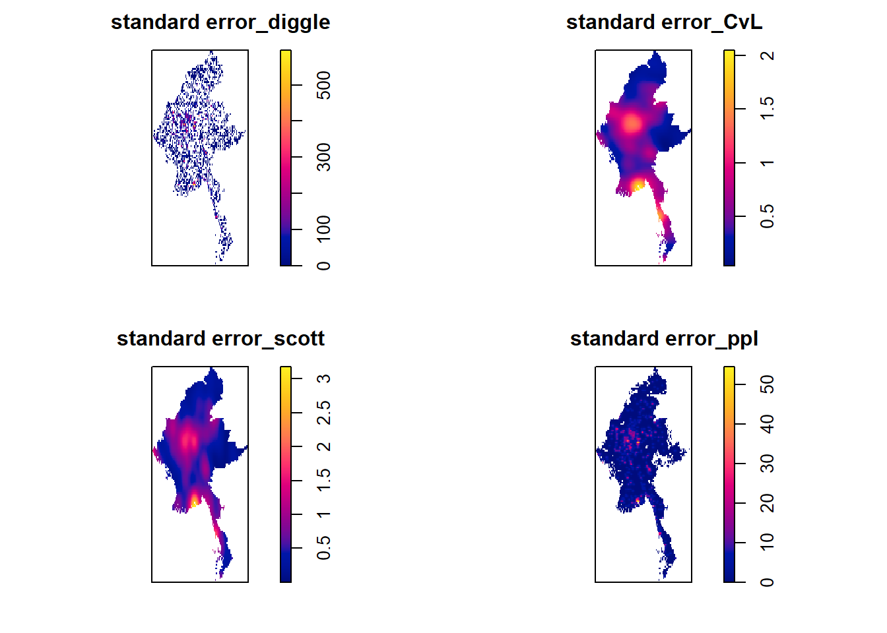
Reflection
Consideration of Standard Error:
While the standard error (SE) of the density estimate provides valuable insight into the uncertainty associated with each density estimate, it is not the primary focus of this analysis. The shape of the density estimate, rather than its absolute value, is more critical when analyzing spatial patterns. Consequently, the SE was not used as a key criterion for bandwidth selection in this analysis.
Consideration of Standard Error: While the standard error (SE) of the density estimate provides valuable insight into the uncertainty associated with each density estimate, it is not the primary focus of this analysis. The shape of the density estimate, rather than its absolute value, is more critical when analyzing spatial patterns. Consequently, the SE was not used as a key criterion for bandwidth selection in this analysis.
1.5.4 Final Bandwidth Selection
Upon the exploration of various fixed bandwidth selection methods for computing KDE vales, and subsequent plotting of the respective KDE estimates, their distributions and associated standard errors, we will now select the KDE bandwidth to be used in our analysis.
We landed on the bw_scott method for further analysis. This is because:
bw_scottmethod provides a pair of bandwidth values for each coordinate axis. This allows it to capture the different levels of spatial clustering in each direction more accurately.bw_scottmethod capture the balance between bias and variance the best among all methods. If the bandwidth is too small, the estimate may be too skewed (high variance). The distribution histograms of KDE layers usingbw_diggleandbw_ppltend to indicate such nature. On the other hand, if the bandwidth is too large, the estimate may be over smoothed, missing crucial elements of the point pattern (high bias). This is what we observed in the distribution histogram of KDE layer usingbw_CvL.
Since we have chosen to use bw_scott method, now we will plot the KDE layer using this method for further analysis.
1.5.4.1 Working With Different Kernel Methods
Beyond the Gaussian kernel, three other kernels can be used to compute KDE: - Epanechnikov - Quartic - Disc
par(mfrow=c(2,2), mar=c(1, 1, 1, 1), cex=0.5)
plot(density(year_data_regions_ppp.km,
sigma=bw_scott,
edge=TRUE,
kernel="gaussian"),
main="Gaussian")
plot(density(year_data_regions_ppp.km,
sigma=bw_scott,
edge=TRUE,
kernel="epanechnikov"),
main="Epanechnikov")
plot(density(year_data_regions_ppp.km,
sigma=bw_scott,
edge=TRUE,
kernel="quartic"),
main="Quartic")
plot(density(year_data_regions_ppp.km,
sigma=bw_scott,
edge=TRUE,
kernel="disc"),
main="Disc")
Reflection
Upon comparing the outputs of different kernel functions (Gaussian, Epanechnikov, Quartic, Disc), we observed that the resulting density estimates were very similar across all kernels. Given the minimal variation, the choice of kernel is not critical for this particular analysis.
We opted for the Gaussian kernel as it is widely used in kernel density estimation and tends to produce smooth, continuous estimates. Its flexibility in capturing both sharp peaks and gradual trends makes it a reasonable default choice, especially when the differences between kernels are negligible, as seen here.
kde_fixed_scott <- density(year_data_regions_ppp.km, bw_scott)
plot(kde_fixed_scott,main = "Fixed bandwidth KDE (Using bw_scott)")
contour(kde_fixed_scott, add=TRUE)
However, upon visual inspection, there are signs of a certain degree of over-smoothing when directly applying the bandwidth provided by the bw_scott method. While automatic bandwidth selection methods offer a useful starting point, further fine-tuning is often necessary to ensure the accuracy of the KDE plot.
To address the over-smoothing, we will apply a “rule of thumb” adjustment by dividing the bandwidth value by 2. This reduction in bandwidth size will help minimize the over-smoothing effect and enhance the precision of the spatial point pattern analysis.
kde_year_data_regions_fixed_scott <- density(year_data_regions_ppp.km, bw_scott/2)
kde_year_data_regions_adaptive <- adaptive.density(year_data_regions_ppp.km, method="kernel")
par(mfrow=c(1,2))
plot(kde_year_data_regions_fixed_scott, main = "Fixed Bandwidth (bw_scott)")
plot(kde_year_data_regions_adaptive, main = "Adaptive Bandwidth")
Reflection
After comparing the two approaches for kernel density estimation, Fixed Bandwidth using bw_scott/2 and Adaptive Bandwidth, we observed that the fixed bandwidth method provides a more stable and interpretable result across the observation window. While adaptive bandwidth is designed to adjust to local point densities and capture finer details, it can sometimes introduce unnecessary complexity and overfit the density estimate, especially in areas with sparse data.
Given the goals of our analysis, which emphasize consistency and smoothness over high local sensitivity, the Fixed Bandwidth approach strikes a better balance between capturing spatial trends and avoiding over-complication.
Year 2021
Quarter 1
Example <- "Explosions/Remote violence"
my_2021_Q1 <- acled_sf %>%
filter(event_type == Example & quarter == "2021 Q1")
quarter_data <- as_Spatial(my_2021_Q1)
quarter_data_sp <- as(quarter_data, "SpatialPoints")
quarter_data_ppp <- as.ppp(st_coordinates(my_2021_Q1), st_bbox(my_2021_Q1))
quarter_data_ppp_jit <- rjitter(quarter_data_ppp,
retry=TRUE,
nsim=1,
drop=TRUE)my_2021_Q1_ER_quarter_data_regions_ppp = quarter_data_ppp_jit[regions_owin]
quarter_data_regions_ppp.km <- rescale.ppp(my_2021_Q1_ER_quarter_data_regions_ppp, 50000, "km")
bw_scott <- bw.scott(quarter_data_regions_ppp.km)
plot(density(quarter_data_regions_ppp.km,
sigma=bw_scott/2,
edge=TRUE,
kernel="gaussian"),
main = "2021 Q1 - Explosion/Remote violence")Example <- "Strategic developments"
my_2021_Q1 <- acled_sf %>%
filter(event_type == Example & quarter == "2021 Q1")
quarter_data <- as_Spatial(my_2021_Q1)
quarter_data_sp <- as(quarter_data, "SpatialPoints")
quarter_data_ppp <- as.ppp(st_coordinates(my_2021_Q1), st_bbox(my_2021_Q1))
quarter_data_ppp_jit <- rjitter(quarter_data_ppp,
retry=TRUE,
nsim=1,
drop=TRUE)my_2021_Q1_SD_quarter_data_regions_ppp = quarter_data_ppp_jit[regions_owin]
quarter_data_regions_ppp.km <- rescale.ppp(my_2021_Q1_SD_quarter_data_regions_ppp , 50000, "km")
bw_scott <- bw.scott(quarter_data_regions_ppp.km)
plot(density(quarter_data_regions_ppp.km,
sigma=bw_scott/2,
edge=TRUE,
kernel="gaussian"),
main = "2021 Q1 - Strategic developments")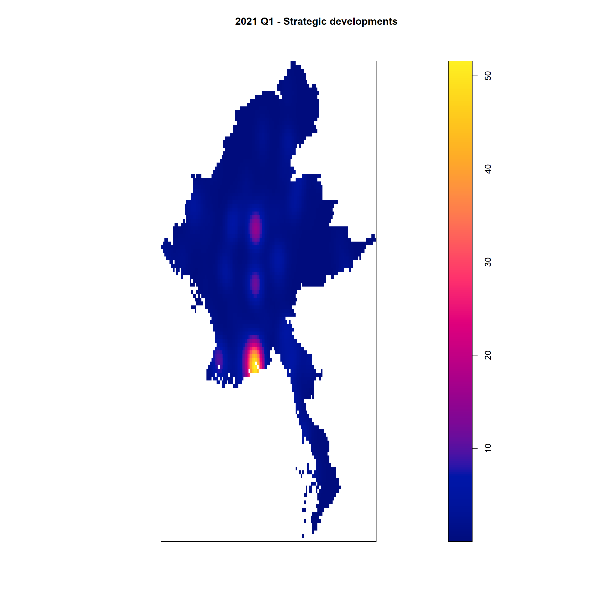
Example <- "Battles"
my_2021_Q1 <- acled_sf %>%
filter(event_type == Example & quarter == "2021 Q1")
quarter_data <- as_Spatial(my_2021_Q1)
quarter_data_sp <- as(quarter_data, "SpatialPoints")
quarter_data_ppp <- as.ppp(st_coordinates(my_2021_Q1), st_bbox(my_2021_Q1))
quarter_data_ppp_jit <- rjitter(quarter_data_ppp,
retry=TRUE,
nsim=1,
drop=TRUE)my_2021_Q1_B_quarter_data_regions_ppp = quarter_data_ppp_jit[regions_owin]
quarter_data_regions_ppp.km <- rescale.ppp(my_2021_Q1_B_quarter_data_regions_ppp, 50000, "km")
bw_scott <- bw.scott(quarter_data_regions_ppp.km)
plot(density(quarter_data_regions_ppp.km,
sigma=bw_scott/2,
edge=TRUE,
kernel="gaussian"),
main = "2021 Q1 - Battles")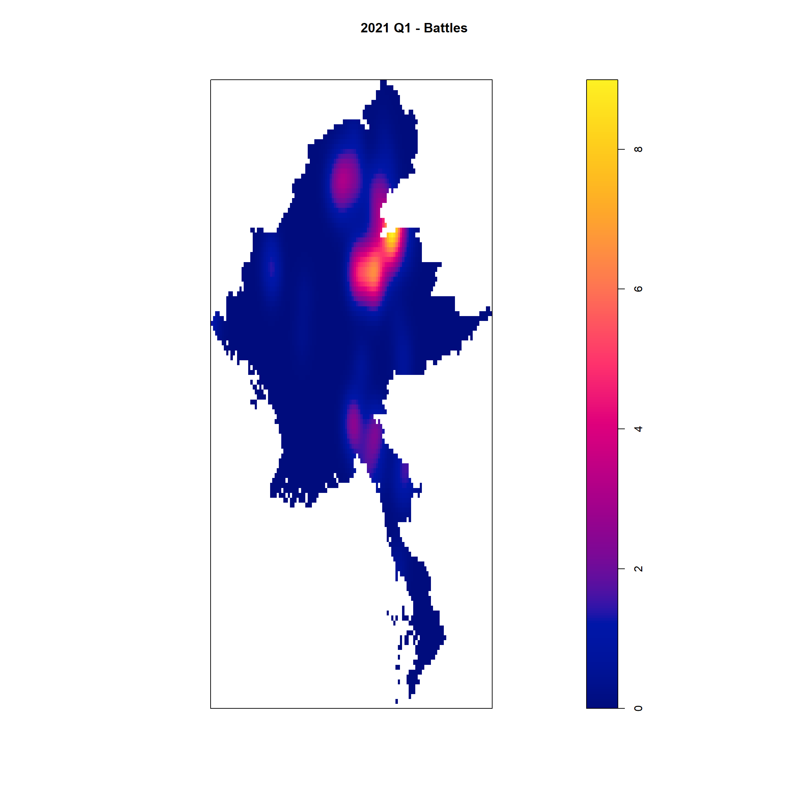
Example <- "Violence against civilians"
my_2021_Q1 <- acled_sf %>%
filter(event_type == Example & quarter == "2021 Q1")
quarter_data <- as_Spatial(my_2021_Q1)
quarter_data_sp <- as(quarter_data, "SpatialPoints")
quarter_data_ppp <- as.ppp(st_coordinates(my_2021_Q1), st_bbox(my_2021_Q1))
quarter_data_ppp_jit <- rjitter(quarter_data_ppp,
retry=TRUE,
nsim=1,
drop=TRUE)my_2021_Q1_VAC_quarter_data_regions_ppp = quarter_data_ppp_jit[regions_owin]
quarter_data_regions_ppp.km <- rescale.ppp(my_2021_Q1_VAC_quarter_data_regions_ppp, 50000, "km")
bw_scott <- bw.scott(quarter_data_regions_ppp.km)
plot(density(quarter_data_regions_ppp.km,
sigma=bw_scott/2,
edge=TRUE,
kernel="gaussian"),
main = "2021 Q1 -Violence against civilians")Quarter 2
Example <- "Explosions/Remote violence"
my_2021_Q2 <- acled_sf %>%
filter(event_type == Example & quarter == "2021 Q2")
quarter_data <- as_Spatial(my_2021_Q2)
quarter_data_sp <- as(quarter_data, "SpatialPoints")
quarter_data_ppp <- as.ppp(st_coordinates(my_2021_Q2), st_bbox(my_2021_Q2))
quarter_data_ppp_jit <- rjitter(quarter_data_ppp,
retry=TRUE,
nsim=1,
drop=TRUE)my_2021_Q2_ER_quarter_data_regions_ppp = quarter_data_ppp_jit[regions_owin]
quarter_data_regions_ppp.km <- rescale.ppp(my_2021_Q2_ER_quarter_data_regions_ppp, 50000, "km")
bw_scott <- bw.scott(quarter_data_regions_ppp.km)
plot(density(quarter_data_regions_ppp.km,
sigma=bw_scott/2,
edge=TRUE,
kernel="gaussian"),
main = "2021 Q2 - Explosion/Remote violence")Example <- "Strategic developments"
my_2021_Q2 <- acled_sf %>%
filter(event_type == Example & quarter == "2021 Q2")
quarter_data <- as_Spatial(my_2021_Q2)
quarter_data_sp <- as(quarter_data, "SpatialPoints")
quarter_data_ppp <- as.ppp(st_coordinates(my_2021_Q2), st_bbox(my_2021_Q2))
quarter_data_ppp_jit <- rjitter(quarter_data_ppp,
retry=TRUE,
nsim=1,
drop=TRUE)my_2021_Q2_SD_quarter_data_regions_ppp = quarter_data_ppp_jit[regions_owin]
quarter_data_regions_ppp.km <- rescale.ppp(my_2021_Q2_SD_quarter_data_regions_ppp, 50000, "km")
bw_scott <- bw.scott(quarter_data_regions_ppp.km)
plot(density(quarter_data_regions_ppp.km,
sigma=bw_scott/2,
edge=TRUE,
kernel="gaussian"),
main = "2021 Q2 - Strategic developments")Example <- "Battles"
my_2021_Q2 <- acled_sf %>%
filter(event_type == Example & quarter == "2021 Q2")
quarter_data <- as_Spatial(my_2021_Q2)
quarter_data_sp <- as(quarter_data, "SpatialPoints")
quarter_data_ppp <- as.ppp(st_coordinates(my_2021_Q2), st_bbox(my_2021_Q2))
quarter_data_ppp_jit <- rjitter(quarter_data_ppp,
retry=TRUE,
nsim=1,
drop=TRUE)my_2021_Q2_B_quarter_data_regions_ppp = quarter_data_ppp_jit[regions_owin]
quarter_data_regions_ppp.km <- rescale.ppp(my_2021_Q2_B_quarter_data_regions_ppp, 50000, "km")
bw_scott <- bw.scott(quarter_data_regions_ppp.km)
plot(density(quarter_data_regions_ppp.km,
sigma=bw_scott/2,
edge=TRUE,
kernel="gaussian"),
main = "2021 Q2 - Battles")Example <- "Violence against civilians"
my_2021_Q2 <- acled_sf %>%
filter(event_type == Example & quarter == "2021 Q2")
quarter_data <- as_Spatial(my_2021_Q2)
quarter_data_sp <- as(quarter_data, "SpatialPoints")
quarter_data_ppp <- as.ppp(st_coordinates(my_2021_Q2), st_bbox(my_2021_Q2))
quarter_data_ppp_jit <- rjitter(quarter_data_ppp,
retry=TRUE,
nsim=1,
drop=TRUE)my_2021_Q2_VAC_quarter_data_regions_ppp = quarter_data_ppp_jit[regions_owin]
quarter_data_regions_ppp.km <- rescale.ppp(my_2021_Q2_VAC_quarter_data_regions_ppp, 50000, "km")
bw_scott <- bw.scott(quarter_data_regions_ppp.km)
plot(density(quarter_data_regions_ppp.km,
sigma=bw_scott/2,
edge=TRUE,
kernel="gaussian"),
main = "2021 Q2 - Violence against civilians")Quarter 3
Example <- "Explosions/Remote violence"
my_2021_Q3 <- acled_sf %>%
filter(event_type == Example & quarter == "2021 Q3")
quarter_data <- as_Spatial(my_2021_Q3)
quarter_data_sp <- as(quarter_data, "SpatialPoints")
quarter_data_ppp <- as.ppp(st_coordinates(my_2021_Q3), st_bbox(my_2021_Q3))
quarter_data_ppp_jit <- rjitter(quarter_data_ppp,
retry=TRUE,
nsim=1,
drop=TRUE)my_2021_Q3_ER_quarter_data_regions_ppp = quarter_data_ppp_jit[regions_owin]
quarter_data_regions_ppp.km <- rescale.ppp(my_2021_Q3_ER_quarter_data_regions_ppp, 50000, "km")
bw_scott <- bw.scott(quarter_data_regions_ppp.km)
plot(density(quarter_data_regions_ppp.km,
sigma=bw_scott/2,
edge=TRUE,
kernel="gaussian"),
main = "2021 Q3 - Explosion/Remote violence")Example <- "Strategic developments"
my_2021_Q3 <- acled_sf %>%
filter(event_type == Example & quarter == "2021 Q3")
quarter_data <- as_Spatial(my_2021_Q3)
quarter_data_sp <- as(quarter_data, "SpatialPoints")
quarter_data_ppp <- as.ppp(st_coordinates(my_2021_Q3), st_bbox(my_2021_Q3))
quarter_data_ppp_jit <- rjitter(quarter_data_ppp,
retry=TRUE,
nsim=1,
drop=TRUE)my_2021_Q3_SD_quarter_data_regions_ppp = quarter_data_ppp_jit[regions_owin]
quarter_data_regions_ppp.km <- rescale.ppp(my_2021_Q3_SD_quarter_data_regions_ppp, 50000, "km")
bw_scott <- bw.scott(quarter_data_regions_ppp.km)
plot(density(quarter_data_regions_ppp.km,
sigma=bw_scott/2,
edge=TRUE,
kernel="gaussian"),
main = "2021 Q3 - Strategic developments")Example <- "Battles"
my_2021_Q3 <- acled_sf %>%
filter(event_type == Example & quarter == "2021 Q3")
quarter_data <- as_Spatial(my_2021_Q3)
quarter_data_sp <- as(quarter_data, "SpatialPoints")
quarter_data_ppp <- as.ppp(st_coordinates(my_2021_Q3), st_bbox(my_2021_Q3))
quarter_data_ppp_jit <- rjitter(quarter_data_ppp,
retry=TRUE,
nsim=1,
drop=TRUE)my_2021_Q3_B_quarter_data_regions_ppp = quarter_data_ppp_jit[regions_owin]
quarter_data_regions_ppp.km <- rescale.ppp(my_2021_Q3_B_quarter_data_regions_ppp, 50000, "km")
bw_scott <- bw.scott(quarter_data_regions_ppp.km)
plot(density(quarter_data_regions_ppp.km,
sigma=bw_scott/2,
edge=TRUE,
kernel="gaussian"),
main = "2021 Q3 - Battles")Example <- "Violence against civilians"
my_2021_Q3 <- acled_sf %>%
filter(event_type == Example & quarter == "2021 Q3")
quarter_data <- as_Spatial(my_2021_Q3)
quarter_data_sp <- as(quarter_data, "SpatialPoints")
quarter_data_ppp <- as.ppp(st_coordinates(my_2021_Q3), st_bbox(my_2021_Q3))
quarter_data_ppp_jit <- rjitter(quarter_data_ppp,
retry=TRUE,
nsim=1,
drop=TRUE)my_2021_Q3_VAC_quarter_data_regions_ppp = quarter_data_ppp_jit[regions_owin]
quarter_data_regions_ppp.km <- rescale.ppp(my_2021_Q3_VAC_quarter_data_regions_ppp, 50000, "km")
bw_scott <- bw.scott(quarter_data_regions_ppp.km)
plot(density(quarter_data_regions_ppp.km,
sigma=bw_scott/2,
edge=TRUE,
kernel="gaussian"),
main = "2021 Q3 - Violence against civilians")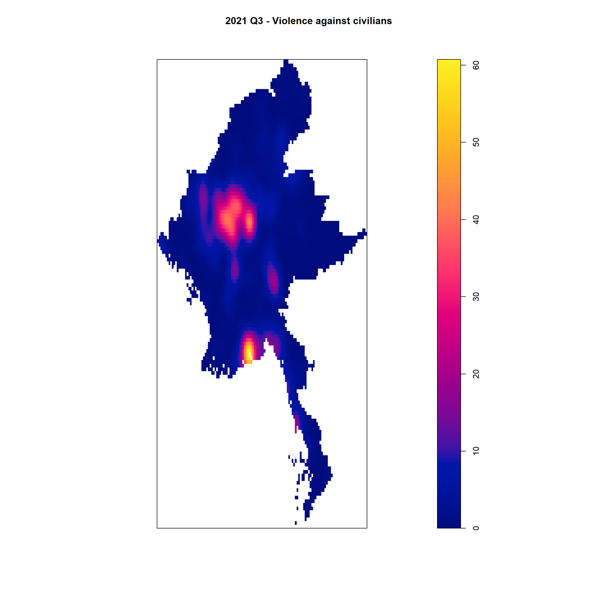
Quarter 4
Example <- "Explosions/Remote violence"
my_2021_Q4 <- acled_sf %>%
filter(event_type == Example & quarter == "2021 Q4")
quarter_data <- as_Spatial(my_2021_Q4)
quarter_data_sp <- as(quarter_data, "SpatialPoints")
quarter_data_ppp <- as.ppp(st_coordinates(my_2021_Q4), st_bbox(my_2021_Q4))
quarter_data_ppp_jit <- rjitter(quarter_data_ppp,
retry=TRUE,
nsim=1,
drop=TRUE)my_2021_Q4_ER_quarter_data_regions_ppp = quarter_data_ppp_jit[regions_owin]
quarter_data_regions_ppp.km <- rescale.ppp(my_2021_Q4_ER_quarter_data_regions_ppp, 50000, "km")
bw_scott <- bw.scott(quarter_data_regions_ppp.km)
plot(density(quarter_data_regions_ppp.km,
sigma=bw_scott/2,
edge=TRUE,
kernel="gaussian"),
main = "2021 Q4 - Explosion/Remote violence")Example <- "Strategic developments"
my_2021_Q4 <- acled_sf %>%
filter(event_type == Example & quarter == "2021 Q4")
quarter_data <- as_Spatial(my_2021_Q4)
quarter_data_sp <- as(quarter_data, "SpatialPoints")
quarter_data_ppp <- as.ppp(st_coordinates(my_2021_Q4), st_bbox(my_2021_Q4))
quarter_data_ppp_jit <- rjitter(quarter_data_ppp,
retry=TRUE,
nsim=1,
drop=TRUE)my_2021_Q4_SD_quarter_data_regions_ppp = quarter_data_ppp_jit[regions_owin]
quarter_data_regions_ppp.km <- rescale.ppp(my_2021_Q4_SD_quarter_data_regions_ppp, 50000, "km")
bw_scott <- bw.scott(quarter_data_regions_ppp.km)
plot(density(quarter_data_regions_ppp.km,
sigma=bw_scott/2,
edge=TRUE,
kernel="gaussian"),
main = "2021 Q4 - Strategic developments")Example <- "Battles"
my_2021_Q4 <- acled_sf %>%
filter(event_type == Example & quarter == "2021 Q4")
quarter_data <- as_Spatial(my_2021_Q4)
quarter_data_sp <- as(quarter_data, "SpatialPoints")
quarter_data_ppp <- as.ppp(st_coordinates(my_2021_Q4), st_bbox(my_2021_Q4))
quarter_data_ppp_jit <- rjitter(quarter_data_ppp,
retry=TRUE,
nsim=1,
drop=TRUE)my_2021_Q4_B_quarter_data_regions_ppp = quarter_data_ppp_jit[regions_owin]
quarter_data_regions_ppp.km <- rescale.ppp(my_2021_Q4_B_quarter_data_regions_ppp, 50000, "km")
bw_scott <- bw.scott(quarter_data_regions_ppp.km)
plot(density(quarter_data_regions_ppp.km,
sigma=bw_scott/2,
edge=TRUE,
kernel="gaussian"),
main = "2021 Q4 - Battles")Example <- "Violence against civilians"
my_2021_Q4 <- acled_sf %>%
filter(event_type == Example & quarter == "2021 Q4")
quarter_data <- as_Spatial(my_2021_Q4)
quarter_data_sp <- as(quarter_data, "SpatialPoints")
quarter_data_ppp <- as.ppp(st_coordinates(my_2021_Q4), st_bbox(my_2021_Q4))
quarter_data_ppp_jit <- rjitter(quarter_data_ppp,
retry=TRUE,
nsim=1,
drop=TRUE)my_2021_Q4_VAC_quarter_data_regions_ppp = quarter_data_ppp_jit[regions_owin]
quarter_data_regions_ppp.km <- rescale.ppp(my_2021_Q4_VAC_quarter_data_regions_ppp, 50000, "km")
bw_scott <- bw.scott(quarter_data_regions_ppp.km)
plot(density(quarter_data_regions_ppp.km,
sigma=bw_scott/2,
edge=TRUE,
kernel="gaussian"),
main = "2021 Q4 - Violence against civilians")Year 2022
Quarter 1
Example <- "Explosions/Remote violence"
my_2022_Q1 <- acled_sf %>%
filter(event_type == Example & quarter == "2022 Q1")
quarter_data <- as_Spatial(my_2022_Q1)
quarter_data_sp <- as(quarter_data, "SpatialPoints")
quarter_data_ppp <- as.ppp(st_coordinates(my_2022_Q1), st_bbox(my_2022_Q1))
quarter_data_ppp_jit <- rjitter(quarter_data_ppp,
retry=TRUE,
nsim=1,
drop=TRUE)my_2022_Q1_ER_quarter_data_regions_ppp = quarter_data_ppp_jit[regions_owin]
quarter_data_regions_ppp.km <- rescale.ppp(my_2022_Q1_ER_quarter_data_regions_ppp, 50000, "km")
bw_scott <- bw.scott(quarter_data_regions_ppp.km)
plot(density(quarter_data_regions_ppp.km,
sigma=bw_scott/2,
edge=TRUE,
kernel="gaussian"),
main = "2022 Q1 - Explosion/Remote violence")Example <- "Strategic developments"
my_2022_Q1 <- acled_sf %>%
filter(event_type == Example & quarter == "2022 Q1")
quarter_data <- as_Spatial(my_2022_Q1)
quarter_data_sp <- as(quarter_data, "SpatialPoints")
quarter_data_ppp <- as.ppp(st_coordinates(my_2022_Q1), st_bbox(my_2022_Q1))
quarter_data_ppp_jit <- rjitter(quarter_data_ppp,
retry=TRUE,
nsim=1,
drop=TRUE)my_2022_Q1_SD_quarter_data_regions_ppp = quarter_data_ppp_jit[regions_owin]
quarter_data_regions_ppp.km <- rescale.ppp(my_2022_Q1_SD_quarter_data_regions_ppp, 50000, "km")
bw_scott <- bw.scott(quarter_data_regions_ppp.km)
plot(density(quarter_data_regions_ppp.km,
sigma=bw_scott/2,
edge=TRUE,
kernel="gaussian"),
main = "2022 Q1 - Strategic developments")Example <- "Battles"
my_2022_Q1 <- acled_sf %>%
filter(event_type == Example & quarter == "2022 Q1")
quarter_data <- as_Spatial(my_2022_Q1)
quarter_data_sp <- as(quarter_data, "SpatialPoints")
quarter_data_ppp <- as.ppp(st_coordinates(my_2022_Q1), st_bbox(my_2022_Q1))
quarter_data_ppp_jit <- rjitter(quarter_data_ppp,
retry=TRUE,
nsim=1,
drop=TRUE)my_2022_Q1_B_quarter_data_regions_ppp = quarter_data_ppp_jit[regions_owin]
quarter_data_regions_ppp.km <- rescale.ppp(my_2022_Q1_B_quarter_data_regions_ppp, 50000, "km")
bw_scott <- bw.scott(quarter_data_regions_ppp.km)
plot(density(quarter_data_regions_ppp.km,
sigma=bw_scott/2,
edge=TRUE,
kernel="gaussian"),
main = "2022 Q1 - Battles")Example <- "Violence against civilians"
my_2022_Q1 <- acled_sf %>%
filter(event_type == Example & quarter == "2022 Q1")
quarter_data <- as_Spatial(my_2022_Q1)
quarter_data_sp <- as(quarter_data, "SpatialPoints")
quarter_data_ppp <- as.ppp(st_coordinates(my_2022_Q1), st_bbox(my_2022_Q1))
quarter_data_ppp_jit <- rjitter(quarter_data_ppp,
retry=TRUE,
nsim=1,
drop=TRUE)my_2022_Q1_VAC_quarter_data_regions_ppp = quarter_data_ppp_jit[regions_owin]
quarter_data_regions_ppp.km <- rescale.ppp(my_2022_Q1_VAC_quarter_data_regions_ppp, 50000, "km")
bw_scott <- bw.scott(quarter_data_regions_ppp.km)
plot(density(quarter_data_regions_ppp.km,
sigma=bw_scott/2,
edge=TRUE,
kernel="gaussian"),
main = "2022 Q1 -Violence against civilians")Quarter 2
Example <- "Explosions/Remote violence"
my_2022_Q2 <- acled_sf %>%
filter(event_type == Example & quarter == "2022 Q2")
quarter_data <- as_Spatial(my_2022_Q2)
quarter_data_sp <- as(quarter_data, "SpatialPoints")
quarter_data_ppp <- as.ppp(st_coordinates(my_2022_Q2), st_bbox(my_2022_Q2))
quarter_data_ppp_jit <- rjitter(quarter_data_ppp,
retry=TRUE,
nsim=1,
drop=TRUE)my_2022_Q2_ER_quarter_data_regions_ppp = quarter_data_ppp_jit[regions_owin]
quarter_data_regions_ppp.km <- rescale.ppp(my_2022_Q2_ER_quarter_data_regions_ppp, 50000, "km")
bw_scott <- bw.scott(quarter_data_regions_ppp.km)
plot(density(quarter_data_regions_ppp.km,
sigma=bw_scott/2,
edge=TRUE,
kernel="gaussian"),
main = "2022 Q2 - Explosion/Remote violence")Example <- "Strategic developments"
my_2022_Q2 <- acled_sf %>%
filter(event_type == Example & quarter == "2022 Q2")
quarter_data <- as_Spatial(my_2022_Q2)
quarter_data_sp <- as(quarter_data, "SpatialPoints")
quarter_data_ppp <- as.ppp(st_coordinates(my_2022_Q2), st_bbox(my_2022_Q2))
quarter_data_ppp_jit <- rjitter(quarter_data_ppp,
retry=TRUE,
nsim=1,
drop=TRUE)my_2022_Q2_SD_quarter_data_regions_ppp = quarter_data_ppp_jit[regions_owin]
quarter_data_regions_ppp.km <- rescale.ppp(my_2022_Q2_SD_quarter_data_regions_ppp, 50000, "km")
bw_scott <- bw.scott(quarter_data_regions_ppp.km)
plot(density(quarter_data_regions_ppp.km,
sigma=bw_scott/2,
edge=TRUE,
kernel="gaussian"),
main = "2022 Q2 - Strategic developments")Example <- "Battles"
my_2022_Q2 <- acled_sf %>%
filter(event_type == Example & quarter == "2022 Q2")
quarter_data <- as_Spatial(my_2022_Q2)
quarter_data_sp <- as(quarter_data, "SpatialPoints")
quarter_data_ppp <- as.ppp(st_coordinates(my_2022_Q2), st_bbox(my_2022_Q2))
quarter_data_ppp_jit <- rjitter(quarter_data_ppp,
retry=TRUE,
nsim=1,
drop=TRUE)my_2022_Q2_B_quarter_data_regions_ppp = quarter_data_ppp_jit[regions_owin]
quarter_data_regions_ppp.km <- rescale.ppp(my_2022_Q2_B_quarter_data_regions_ppp, 50000, "km")
bw_scott <- bw.scott(quarter_data_regions_ppp.km)
plot(density(quarter_data_regions_ppp.km,
sigma=bw_scott/2,
edge=TRUE,
kernel="gaussian"),
main = "2022 Q2 - Battles")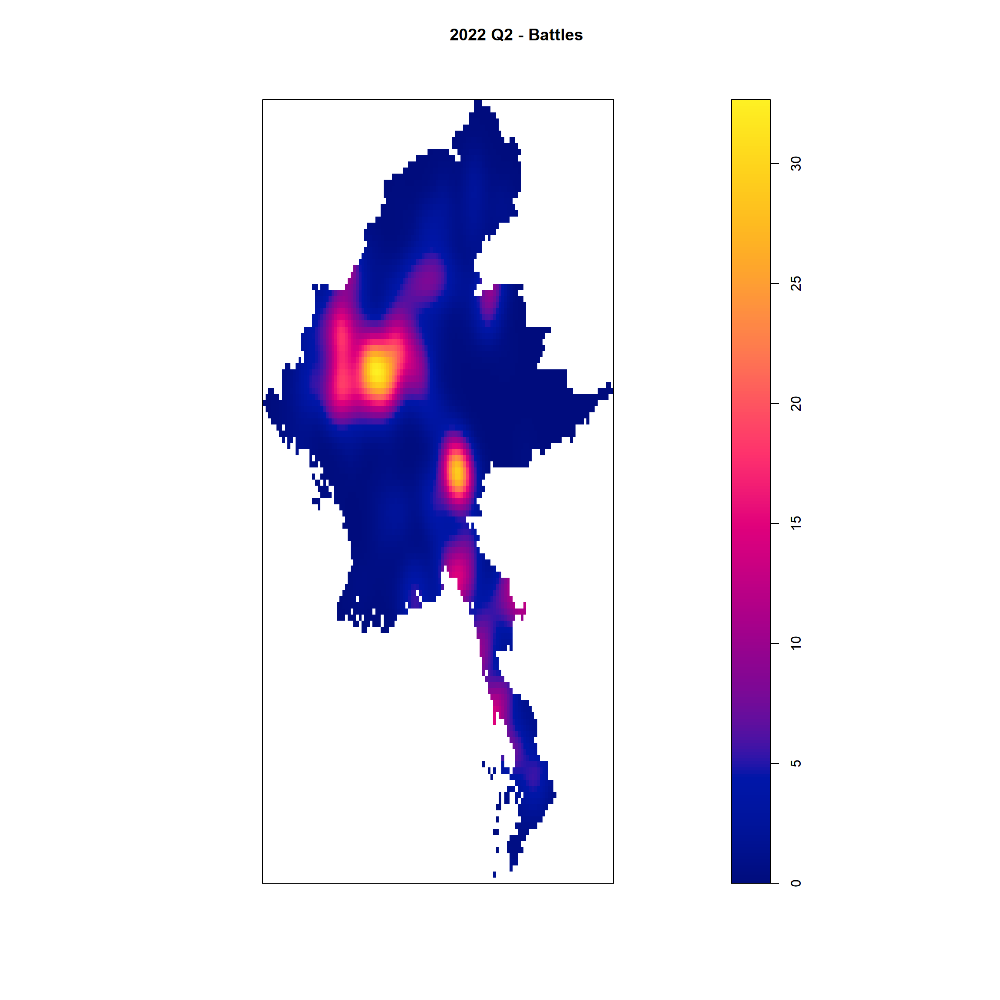
Example <- "Violence against civilians"
my_2022_Q2 <- acled_sf %>%
filter(event_type == Example & quarter == "2022 Q2")
quarter_data <- as_Spatial(my_2022_Q2)
quarter_data_sp <- as(quarter_data, "SpatialPoints")
quarter_data_ppp <- as.ppp(st_coordinates(my_2022_Q2), st_bbox(my_2022_Q2))
quarter_data_ppp_jit <- rjitter(quarter_data_ppp,
retry=TRUE,
nsim=1,
drop=TRUE)my_2022_Q2_VAC_quarter_data_regions_ppp = quarter_data_ppp_jit[regions_owin]
quarter_data_regions_ppp.km <- rescale.ppp(my_2022_Q2_VAC_quarter_data_regions_ppp, 50000, "km")
bw_scott <- bw.scott(quarter_data_regions_ppp.km)
plot(density(quarter_data_regions_ppp.km,
sigma=bw_scott/2,
edge=TRUE,
kernel="gaussian"),
main = "2022 Q2 - Violence against civilians")Quarter 3
Example <- "Explosions/Remote violence"
my_2022_Q3 <- acled_sf %>%
filter(event_type == Example & quarter == "2022 Q3")
quarter_data <- as_Spatial(my_2022_Q3)
quarter_data_sp <- as(quarter_data, "SpatialPoints")
quarter_data_ppp <- as.ppp(st_coordinates(my_2022_Q3), st_bbox(my_2022_Q3))
quarter_data_ppp_jit <- rjitter(quarter_data_ppp,
retry=TRUE,
nsim=1,
drop=TRUE)my_2022_Q3_ER_quarter_data_regions_ppp = quarter_data_ppp_jit[regions_owin]
quarter_data_regions_ppp.km <- rescale.ppp(my_2022_Q3_ER_quarter_data_regions_ppp, 50000, "km")
bw_scott <- bw.scott(quarter_data_regions_ppp.km)
plot(density(quarter_data_regions_ppp.km,
sigma=bw_scott/2,
edge=TRUE,
kernel="gaussian"),
main = "2022 Q3 - Explosion/Remote violence")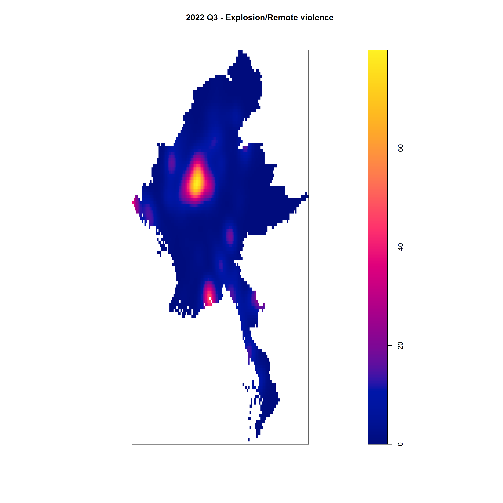
Example <- "Strategic developments"
my_2022_Q3 <- acled_sf %>%
filter(event_type == Example & quarter == "2022 Q3")
quarter_data <- as_Spatial(my_2022_Q3)
quarter_data_sp <- as(quarter_data, "SpatialPoints")
quarter_data_ppp <- as.ppp(st_coordinates(my_2022_Q3), st_bbox(my_2022_Q3))
quarter_data_ppp_jit <- rjitter(quarter_data_ppp,
retry=TRUE,
nsim=1,
drop=TRUE)my_2022_Q3_SD_quarter_data_regions_ppp = quarter_data_ppp_jit[regions_owin]
quarter_data_regions_ppp.km <- rescale.ppp(my_2022_Q3_SD_quarter_data_regions_ppp, 50000, "km")
bw_scott <- bw.scott(quarter_data_regions_ppp.km)
plot(density(quarter_data_regions_ppp.km,
sigma=bw_scott/2,
edge=TRUE,
kernel="gaussian"),
main = "2022 Q3 - Strategic developments")Example <- "Battles"
my_2022_Q3 <- acled_sf %>%
filter(event_type == Example & quarter == "2022 Q3")
quarter_data <- as_Spatial(my_2022_Q3)
quarter_data_sp <- as(quarter_data, "SpatialPoints")
quarter_data_ppp <- as.ppp(st_coordinates(my_2022_Q3), st_bbox(my_2022_Q3))
quarter_data_ppp_jit <- rjitter(quarter_data_ppp,
retry=TRUE,
nsim=1,
drop=TRUE)my_2022_Q3_B_quarter_data_regions_ppp = quarter_data_ppp_jit[regions_owin]
quarter_data_regions_ppp.km <- rescale.ppp(my_2022_Q3_B_quarter_data_regions_ppp, 50000, "km")
bw_scott <- bw.scott(quarter_data_regions_ppp.km)
plot(density(quarter_data_regions_ppp.km,
sigma=bw_scott/2,
edge=TRUE,
kernel="gaussian"),
main = "2022 Q3 - Battles")Example <- "Violence against civilians"
my_2022_Q3 <- acled_sf %>%
filter(event_type == Example & quarter == "2022 Q3")
quarter_data <- as_Spatial(my_2022_Q3)
quarter_data_sp <- as(quarter_data, "SpatialPoints")
quarter_data_ppp <- as.ppp(st_coordinates(my_2022_Q3), st_bbox(my_2022_Q3))
quarter_data_ppp_jit <- rjitter(quarter_data_ppp,
retry=TRUE,
nsim=1,
drop=TRUE)my_2022_Q3_VAC_quarter_data_regions_ppp = quarter_data_ppp_jit[regions_owin]
quarter_data_regions_ppp.km <- rescale.ppp(my_2022_Q3_VAC_quarter_data_regions_ppp, 50000, "km")
bw_scott <- bw.scott(quarter_data_regions_ppp.km)
plot(density(quarter_data_regions_ppp.km,
sigma=bw_scott/2,
edge=TRUE,
kernel="gaussian"),
main = "2022 Q3 - Violence against civilians")Quarter 4
Example <- "Explosions/Remote violence"
my_2022_Q4 <- acled_sf %>%
filter(event_type == Example & quarter == "2022 Q4")
quarter_data <- as_Spatial(my_2022_Q4)
quarter_data_sp <- as(quarter_data, "SpatialPoints")
quarter_data_ppp <- as.ppp(st_coordinates(my_2022_Q4), st_bbox(my_2022_Q4))
quarter_data_ppp_jit <- rjitter(quarter_data_ppp,
retry=TRUE,
nsim=1,
drop=TRUE)my_2022_Q4_ER_quarter_data_regions_ppp = quarter_data_ppp_jit[regions_owin]
quarter_data_regions_ppp.km <- rescale.ppp(my_2022_Q4_ER_quarter_data_regions_ppp, 50000, "km")
bw_scott <- bw.scott(quarter_data_regions_ppp.km)
plot(density(quarter_data_regions_ppp.km,
sigma=bw_scott/2,
edge=TRUE,
kernel="gaussian"),
main = "2022 Q4 - Explosion/Remote violence")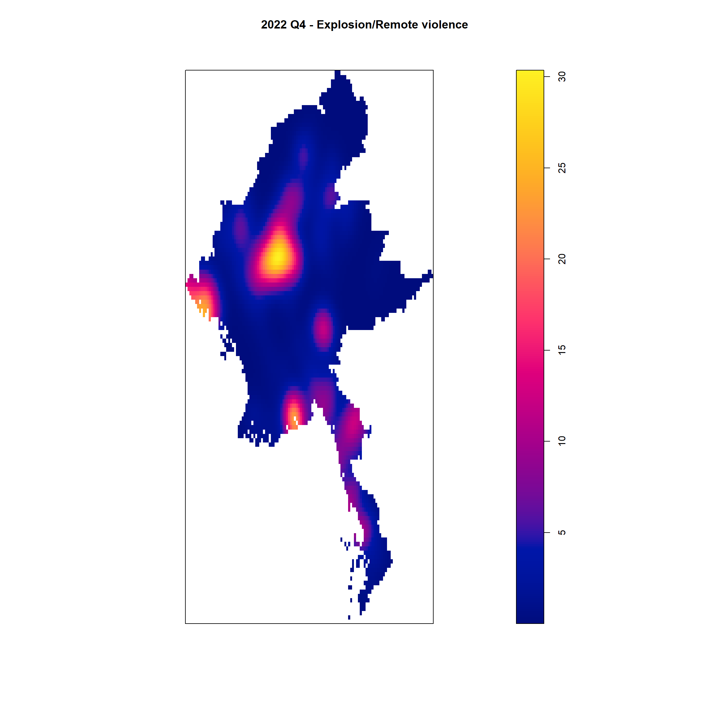
Example <- "Strategic developments"
my_2022_Q4 <- acled_sf %>%
filter(event_type == Example & quarter == "2022 Q4")
quarter_data <- as_Spatial(my_2022_Q4)
quarter_data_sp <- as(quarter_data, "SpatialPoints")
quarter_data_ppp <- as.ppp(st_coordinates(my_2022_Q4), st_bbox(my_2022_Q4))
quarter_data_ppp_jit <- rjitter(quarter_data_ppp,
retry=TRUE,
nsim=1,
drop=TRUE)my_2022_Q4_SD_quarter_data_regions_ppp = quarter_data_ppp_jit[regions_owin]
quarter_data_regions_ppp.km <- rescale.ppp(my_2022_Q4_SD_quarter_data_regions_ppp, 50000, "km")
bw_scott <- bw.scott(quarter_data_regions_ppp.km)
plot(density(quarter_data_regions_ppp.km,
sigma=bw_scott/2,
edge=TRUE,
kernel="gaussian"),
main = "2022 Q4 - Strategic developments")Example <- "Battles"
my_2022_Q4 <- acled_sf %>%
filter(event_type == Example & quarter == "2022 Q4")
quarter_data <- as_Spatial(my_2022_Q4)
quarter_data_sp <- as(quarter_data, "SpatialPoints")
quarter_data_ppp <- as.ppp(st_coordinates(my_2022_Q4), st_bbox(my_2022_Q4))
quarter_data_ppp_jit <- rjitter(quarter_data_ppp,
retry=TRUE,
nsim=1,
drop=TRUE)my_2022_Q4_B_quarter_data_regions_ppp = quarter_data_ppp_jit[regions_owin]
quarter_data_regions_ppp.km <- rescale.ppp(my_2022_Q4_B_quarter_data_regions_ppp, 50000, "km")
bw_scott <- bw.scott(quarter_data_regions_ppp.km)
plot(density(quarter_data_regions_ppp.km,
sigma=bw_scott/2,
edge=TRUE,
kernel="gaussian"),
main = "2022 Q4 - Battles")Example <- "Violence against civilians"
my_2022_Q4 <- acled_sf %>%
filter(event_type == Example & quarter == "2022 Q4")
quarter_data <- as_Spatial(my_2022_Q4)
quarter_data_sp <- as(quarter_data, "SpatialPoints")
quarter_data_ppp <- as.ppp(st_coordinates(my_2022_Q4), st_bbox(my_2022_Q4))
quarter_data_ppp_jit <- rjitter(quarter_data_ppp,
retry=TRUE,
nsim=1,
drop=TRUE)my_2022_Q4_VAC_quarter_data_regions_ppp = quarter_data_ppp_jit[regions_owin]
quarter_data_regions_ppp.km <- rescale.ppp(my_2022_Q4_VAC_quarter_data_regions_ppp, 50000, "km")
bw_scott <- bw.scott(quarter_data_regions_ppp.km)
plot(density(quarter_data_regions_ppp.km,
sigma=bw_scott/2,
edge=TRUE,
kernel="gaussian"),
main = "2022 Q4 - Violence against civilians")Year 2023
Quarter 1
Example <- "Explosions/Remote violence"
my_2023_Q1 <- acled_sf %>%
filter(event_type == Example & quarter == "2023 Q1")
quarter_data <- as_Spatial(my_2023_Q1)
quarter_data_sp <- as(quarter_data, "SpatialPoints")
quarter_data_ppp <- as.ppp(st_coordinates(my_2023_Q1), st_bbox(my_2023_Q1))
quarter_data_ppp_jit <- rjitter(quarter_data_ppp,
retry=TRUE,
nsim=1,
drop=TRUE)my_2023_Q1_ER_quarter_data_regions_ppp = quarter_data_ppp_jit[regions_owin]
quarter_data_regions_ppp.km <- rescale.ppp(my_2023_Q1_ER_quarter_data_regions_ppp, 50000, "km")
bw_scott <- bw.scott(quarter_data_regions_ppp.km)
plot(density(quarter_data_regions_ppp.km,
sigma=bw_scott/2,
edge=TRUE,
kernel="gaussian"),
main = "2023 Q1 - Explosion/Remote violence")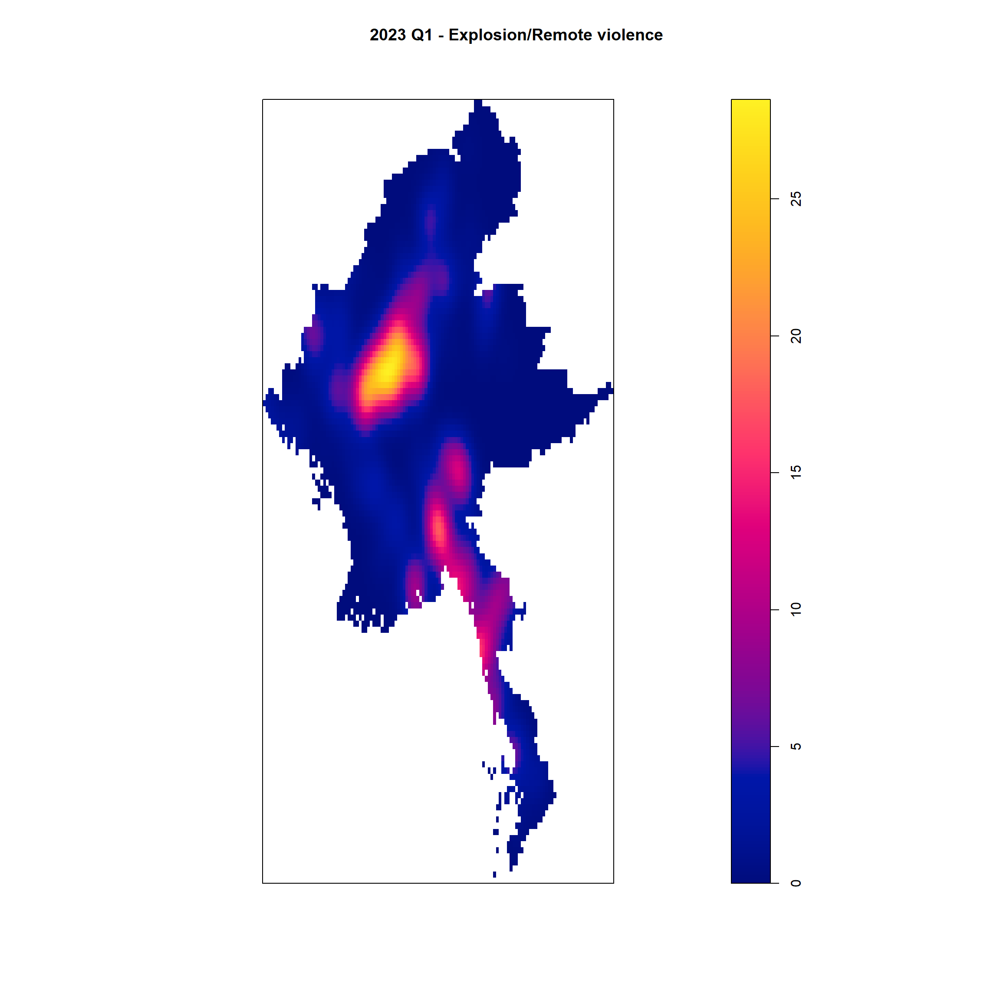
Example <- "Strategic developments"
my_2023_Q1 <- acled_sf %>%
filter(event_type == Example & quarter == "2023 Q1")
quarter_data <- as_Spatial(my_2023_Q1)
quarter_data_sp <- as(quarter_data, "SpatialPoints")
quarter_data_ppp <- as.ppp(st_coordinates(my_2023_Q1), st_bbox(my_2023_Q1))
quarter_data_ppp_jit <- rjitter(quarter_data_ppp,
retry=TRUE,
nsim=1,
drop=TRUE)my_2023_Q1_SD_quarter_data_regions_ppp = quarter_data_ppp_jit[regions_owin]
quarter_data_regions_ppp.km <- rescale.ppp(my_2023_Q1_SD_quarter_data_regions_ppp, 50000, "km")
bw_scott <- bw.scott(quarter_data_regions_ppp.km)
plot(density(quarter_data_regions_ppp.km,
sigma=bw_scott/2,
edge=TRUE,
kernel="gaussian"),
main = "2023 Q1 - Strategic developments")Example <- "Battles"
my_2023_Q1 <- acled_sf %>%
filter(event_type == Example & quarter == "2023 Q1")
quarter_data <- as_Spatial(my_2023_Q1)
quarter_data_sp <- as(quarter_data, "SpatialPoints")
quarter_data_ppp <- as.ppp(st_coordinates(my_2023_Q1), st_bbox(my_2023_Q1))
quarter_data_ppp_jit <- rjitter(quarter_data_ppp,
retry=TRUE,
nsim=1,
drop=TRUE)my_2023_Q1_B_quarter_data_regions_ppp = quarter_data_ppp_jit[regions_owin]
quarter_data_regions_ppp.km <- rescale.ppp(my_2023_Q1_B_quarter_data_regions_ppp, 50000, "km")
bw_scott <- bw.scott(quarter_data_regions_ppp.km)
plot(density(quarter_data_regions_ppp.km,
sigma=bw_scott/2,
edge=TRUE,
kernel="gaussian"),
main = "2023 Q1 - Battles")Example <- "Violence against civilians"
my_2023_Q1 <- acled_sf %>%
filter(event_type == Example & quarter == "2023 Q1")
quarter_data <- as_Spatial(my_2023_Q1)
quarter_data_sp <- as(quarter_data, "SpatialPoints")
quarter_data_ppp <- as.ppp(st_coordinates(my_2023_Q1), st_bbox(my_2023_Q1))
quarter_data_ppp_jit <- rjitter(quarter_data_ppp,
retry=TRUE,
nsim=1,
drop=TRUE)my_2023_Q1_VAC_quarter_data_regions_ppp = quarter_data_ppp_jit[regions_owin]
quarter_data_regions_ppp.km <- rescale.ppp(my_2023_Q1_VAC_quarter_data_regions_ppp, 50000, "km")
bw_scott <- bw.scott(quarter_data_regions_ppp.km)
plot(density(quarter_data_regions_ppp.km,
sigma=bw_scott/2,
edge=TRUE,
kernel="gaussian"),
main = "2023 Q1 -Violence against civilians")Quarter 2
Example <- "Explosions/Remote violence"
my_2023_Q2 <- acled_sf %>%
filter(event_type == Example & quarter == "2023 Q2")
quarter_data <- as_Spatial(my_2023_Q2)
quarter_data_sp <- as(quarter_data, "SpatialPoints")
quarter_data_ppp <- as.ppp(st_coordinates(my_2023_Q2), st_bbox(my_2023_Q2))
quarter_data_ppp_jit <- rjitter(quarter_data_ppp,
retry=TRUE,
nsim=1,
drop=TRUE)my_2023_Q2_ER_quarter_data_regions_ppp = quarter_data_ppp_jit[regions_owin]
quarter_data_regions_ppp.km <- rescale.ppp(my_2023_Q2_ER_quarter_data_regions_ppp, 50000, "km")
bw_scott <- bw.scott(quarter_data_regions_ppp.km)
plot(density(quarter_data_regions_ppp.km,
sigma=bw_scott/2,
edge=TRUE,
kernel="gaussian"),
main = "2023 Q2 - Explosion/Remote violence")Example <- "Strategic developments"
my_2023_Q2 <- acled_sf %>%
filter(event_type == Example & quarter == "2023 Q2")
quarter_data <- as_Spatial(my_2023_Q2)
quarter_data_sp <- as(quarter_data, "SpatialPoints")
quarter_data_ppp <- as.ppp(st_coordinates(my_2023_Q2), st_bbox(my_2023_Q2))
quarter_data_ppp_jit <- rjitter(quarter_data_ppp,
retry=TRUE,
nsim=1,
drop=TRUE)my_2023_Q2_SD_quarter_data_regions_ppp = quarter_data_ppp_jit[regions_owin]
quarter_data_regions_ppp.km <- rescale.ppp(my_2023_Q2_SD_quarter_data_regions_ppp, 50000, "km")
bw_scott <- bw.scott(quarter_data_regions_ppp.km)
plot(density(quarter_data_regions_ppp.km,
sigma=bw_scott/2,
edge=TRUE,
kernel="gaussian"),
main = "2023 Q2 - Strategic developments")Example <- "Battles"
my_2023_Q2 <- acled_sf %>%
filter(event_type == Example & quarter == "2023 Q2")
quarter_data <- as_Spatial(my_2023_Q2)
quarter_data_sp <- as(quarter_data, "SpatialPoints")
quarter_data_ppp <- as.ppp(st_coordinates(my_2023_Q2), st_bbox(my_2023_Q2))
quarter_data_ppp_jit <- rjitter(quarter_data_ppp,
retry=TRUE,
nsim=1,
drop=TRUE)my_2023_Q2_B_quarter_data_regions_ppp = quarter_data_ppp_jit[regions_owin]
quarter_data_regions_ppp.km <- rescale.ppp(my_2023_Q2_B_quarter_data_regions_ppp, 50000, "km")
bw_scott <- bw.scott(quarter_data_regions_ppp.km)
plot(density(quarter_data_regions_ppp.km,
sigma=bw_scott/2,
edge=TRUE,
kernel="gaussian"),
main = "2023 Q2 - Battles")Example <- "Violence against civilians"
my_2023_Q2 <- acled_sf %>%
filter(event_type == Example & quarter == "2023 Q2")
quarter_data <- as_Spatial(my_2023_Q2)
quarter_data_sp <- as(quarter_data, "SpatialPoints")
quarter_data_ppp <- as.ppp(st_coordinates(my_2023_Q2), st_bbox(my_2023_Q2))
quarter_data_ppp_jit <- rjitter(quarter_data_ppp,
retry=TRUE,
nsim=1,
drop=TRUE)my_2023_Q2_VAC_quarter_data_regions_ppp = quarter_data_ppp_jit[regions_owin]
quarter_data_regions_ppp.km <- rescale.ppp(my_2023_Q2_VAC_quarter_data_regions_ppp, 50000, "km")
bw_scott <- bw.scott(quarter_data_regions_ppp.km)
plot(density(quarter_data_regions_ppp.km,
sigma=bw_scott/2,
edge=TRUE,
kernel="gaussian"),
main = "2023 Q2 - Violence against civilians")Quarter 3
Example <- "Explosions/Remote violence"
my_2023_Q3 <- acled_sf %>%
filter(event_type == Example & quarter == "2023 Q3")
quarter_data <- as_Spatial(my_2023_Q3)
quarter_data_sp <- as(quarter_data, "SpatialPoints")
quarter_data_ppp <- as.ppp(st_coordinates(my_2023_Q3), st_bbox(my_2023_Q3))
quarter_data_ppp_jit <- rjitter(quarter_data_ppp,
retry=TRUE,
nsim=1,
drop=TRUE)my_2023_Q3_ER_quarter_data_regions_ppp = quarter_data_ppp_jit[regions_owin]
quarter_data_regions_ppp.km <- rescale.ppp(my_2023_Q3_ER_quarter_data_regions_ppp, 50000, "km")
bw_scott <- bw.scott(quarter_data_regions_ppp.km)
plot(density(quarter_data_regions_ppp.km,
sigma=bw_scott/2,
edge=TRUE,
kernel="gaussian"),
main = "2023 Q3 - Explosion/Remote violence")Example <- "Strategic developments"
my_2023_Q3 <- acled_sf %>%
filter(event_type == Example & quarter == "2023 Q3")
quarter_data <- as_Spatial(my_2023_Q3)
quarter_data_sp <- as(quarter_data, "SpatialPoints")
quarter_data_ppp <- as.ppp(st_coordinates(my_2023_Q3), st_bbox(my_2023_Q3))
quarter_data_ppp_jit <- rjitter(quarter_data_ppp,
retry=TRUE,
nsim=1,
drop=TRUE)my_2023_Q3_SD_quarter_data_regions_ppp = quarter_data_ppp_jit[regions_owin]
quarter_data_regions_ppp.km <- rescale.ppp(my_2023_Q3_SD_quarter_data_regions_ppp, 50000, "km")
bw_scott <- bw.scott(quarter_data_regions_ppp.km)
plot(density(quarter_data_regions_ppp.km,
sigma=bw_scott/2,
edge=TRUE,
kernel="gaussian"),
main = "2023 Q3 - Strategic developments")Example <- "Battles"
my_2023_Q3 <- acled_sf %>%
filter(event_type == Example & quarter == "2023 Q3")
quarter_data <- as_Spatial(my_2023_Q3)
quarter_data_sp <- as(quarter_data, "SpatialPoints")
quarter_data_ppp <- as.ppp(st_coordinates(my_2023_Q3), st_bbox(my_2023_Q3))
quarter_data_ppp_jit <- rjitter(quarter_data_ppp,
retry=TRUE,
nsim=1,
drop=TRUE)my_2023_Q3_B_quarter_data_regions_ppp = quarter_data_ppp_jit[regions_owin]
quarter_data_regions_ppp.km <- rescale.ppp(my_2023_Q3_B_quarter_data_regions_ppp, 50000, "km")
bw_scott <- bw.scott(quarter_data_regions_ppp.km)
plot(density(quarter_data_regions_ppp.km,
sigma=bw_scott/2,
edge=TRUE,
kernel="gaussian"),
main = "2023 Q3 - Battles")Example <- "Violence against civilians"
my_2023_Q3 <- acled_sf %>%
filter(event_type == Example & quarter == "2023 Q3")
quarter_data <- as_Spatial(my_2023_Q3)
quarter_data_sp <- as(quarter_data, "SpatialPoints")
quarter_data_ppp <- as.ppp(st_coordinates(my_2023_Q3), st_bbox(my_2023_Q3))
quarter_data_ppp_jit <- rjitter(quarter_data_ppp,
retry=TRUE,
nsim=1,
drop=TRUE)my_2023_Q3_VAC_quarter_data_regions_ppp = quarter_data_ppp_jit[regions_owin]
quarter_data_regions_ppp.km <- rescale.ppp(my_2023_Q3_VAC_quarter_data_regions_ppp, 50000, "km")
bw_scott <- bw.scott(quarter_data_regions_ppp.km)
plot(density(quarter_data_regions_ppp.km,
sigma=bw_scott/2,
edge=TRUE,
kernel="gaussian"),
main = "2023 Q3 - Violence against civilians")Quarter 4
Example <- "Explosions/Remote violence"
my_2023_Q4 <- acled_sf %>%
filter(event_type == Example & quarter == "2023 Q4")
quarter_data <- as_Spatial(my_2023_Q4)
quarter_data_sp <- as(quarter_data, "SpatialPoints")
quarter_data_ppp <- as.ppp(st_coordinates(my_2023_Q4), st_bbox(my_2023_Q4))
quarter_data_ppp_jit <- rjitter(quarter_data_ppp,
retry=TRUE,
nsim=1,
drop=TRUE)my_2023_Q4_ER_quarter_data_regions_ppp = quarter_data_ppp_jit[regions_owin]
quarter_data_regions_ppp.km <- rescale.ppp(my_2023_Q4_ER_quarter_data_regions_ppp, 50000, "km")
bw_scott <- bw.scott(quarter_data_regions_ppp.km)
plot(density(quarter_data_regions_ppp.km,
sigma=bw_scott/2,
edge=TRUE,
kernel="gaussian"),
main = "2023 Q4 - Explosion/Remote violence")Example <- "Strategic developments"
my_2023_Q4 <- acled_sf %>%
filter(event_type == Example & quarter == "2023 Q4")
quarter_data <- as_Spatial(my_2023_Q4)
quarter_data_sp <- as(quarter_data, "SpatialPoints")
quarter_data_ppp <- as.ppp(st_coordinates(my_2023_Q4), st_bbox(my_2023_Q4))
quarter_data_ppp_jit <- rjitter(quarter_data_ppp,
retry=TRUE,
nsim=1,
drop=TRUE)my_2023_Q4_SD_quarter_data_regions_ppp = quarter_data_ppp_jit[regions_owin]
quarter_data_regions_ppp.km <- rescale.ppp(my_2023_Q4_SD_quarter_data_regions_ppp, 50000, "km")
bw_scott <- bw.scott(quarter_data_regions_ppp.km)
plot(density(quarter_data_regions_ppp.km,
sigma=bw_scott/2,
edge=TRUE,
kernel="gaussian"),
main = "2023 Q4 - Strategic developments")Example <- "Battles"
my_2023_Q4 <- acled_sf %>%
filter(event_type == Example & quarter == "2023 Q4")
quarter_data <- as_Spatial(my_2023_Q4)
quarter_data_sp <- as(quarter_data, "SpatialPoints")
quarter_data_ppp <- as.ppp(st_coordinates(my_2023_Q4), st_bbox(my_2023_Q4))
quarter_data_ppp_jit <- rjitter(quarter_data_ppp,
retry=TRUE,
nsim=1,
drop=TRUE)my_2023_Q4_B_quarter_data_regions_ppp = quarter_data_ppp_jit[regions_owin]
quarter_data_regions_ppp.km <- rescale.ppp(my_2023_Q4_B_quarter_data_regions_ppp, 50000, "km")
bw_scott <- bw.scott(quarter_data_regions_ppp.km)
plot(density(quarter_data_regions_ppp.km,
sigma=bw_scott/2,
edge=TRUE,
kernel="gaussian"),
main = "2023 Q4 - Battles")Example <- "Violence against civilians"
my_2023_Q4 <- acled_sf %>%
filter(event_type == Example & quarter == "2023 Q4")
quarter_data <- as_Spatial(my_2023_Q4)
quarter_data_sp <- as(quarter_data, "SpatialPoints")
quarter_data_ppp <- as.ppp(st_coordinates(my_2023_Q4), st_bbox(my_2023_Q4))
quarter_data_ppp_jit <- rjitter(quarter_data_ppp,
retry=TRUE,
nsim=1,
drop=TRUE)my_2023_Q4_VAC_quarter_data_regions_ppp = quarter_data_ppp_jit[regions_owin]
quarter_data_regions_ppp.km <- rescale.ppp(my_2023_Q4_VAC_quarter_data_regions_ppp, 50000, "km")
bw_scott <- bw.scott(quarter_data_regions_ppp.km)
plot(density(quarter_data_regions_ppp.km,
sigma=bw_scott/2,
edge=TRUE,
kernel="gaussian"),
main = "2023 Q4 - Violence against civilians")Year 2024
Quarter 1
Example <- "Explosions/Remote violence"
my_2024_Q1 <- acled_sf %>%
filter(event_type == Example & quarter == "2024 Q1")
quarter_data <- as_Spatial(my_2024_Q1)
quarter_data_sp <- as(quarter_data, "SpatialPoints")
quarter_data_ppp <- as.ppp(st_coordinates(my_2024_Q1), st_bbox(my_2024_Q1))
quarter_data_ppp_jit <- rjitter(quarter_data_ppp,
retry=TRUE,
nsim=1,
drop=TRUE)my_2024_Q1_ER_quarter_data_regions_ppp = quarter_data_ppp_jit[regions_owin]
quarter_data_regions_ppp.km <- rescale.ppp(my_2024_Q1_ER_quarter_data_regions_ppp, 50000, "km")
bw_scott <- bw.scott(quarter_data_regions_ppp.km)
plot(density(quarter_data_regions_ppp.km,
sigma=bw_scott/2,
edge=TRUE,
kernel="gaussian"),
main = "2024 Q1 - Explosion/Remote violence")Example <- "Strategic developments"
my_2024_Q1 <- acled_sf %>%
filter(event_type == Example & quarter == "2024 Q1")
quarter_data <- as_Spatial(my_2024_Q1)
quarter_data_sp <- as(quarter_data, "SpatialPoints")
quarter_data_ppp <- as.ppp(st_coordinates(my_2024_Q1), st_bbox(my_2024_Q1))
quarter_data_ppp_jit <- rjitter(quarter_data_ppp,
retry=TRUE,
nsim=1,
drop=TRUE)my_2024_Q1_SD_quarter_data_regions_ppp = quarter_data_ppp_jit[regions_owin]
quarter_data_regions_ppp.km <- rescale.ppp(my_2024_Q1_SD_quarter_data_regions_ppp, 50000, "km")
bw_scott <- bw.scott(quarter_data_regions_ppp.km)
plot(density(quarter_data_regions_ppp.km,
sigma=bw_scott/2,
edge=TRUE,
kernel="gaussian"),
main = "2024 Q1 - Strategic developments")Example <- "Battles"
my_2024_Q1 <- acled_sf %>%
filter(event_type == Example & quarter == "2024 Q1")
quarter_data <- as_Spatial(my_2024_Q1)
quarter_data_sp <- as(quarter_data, "SpatialPoints")
quarter_data_ppp <- as.ppp(st_coordinates(my_2024_Q1), st_bbox(my_2024_Q1))
quarter_data_ppp_jit <- rjitter(quarter_data_ppp,
retry=TRUE,
nsim=1,
drop=TRUE)my_2024_Q1_B_quarter_data_regions_ppp = quarter_data_ppp_jit[regions_owin]
quarter_data_regions_ppp.km <- rescale.ppp(my_2024_Q1_B_quarter_data_regions_ppp, 50000, "km")
bw_scott <- bw.scott(quarter_data_regions_ppp.km)
plot(density(quarter_data_regions_ppp.km,
sigma=bw_scott/2,
edge=TRUE,
kernel="gaussian"),
main = "2024 Q1 - Battles")Example <- "Violence against civilians"
my_2024_Q1 <- acled_sf %>%
filter(event_type == Example & quarter == "2024 Q1")
quarter_data <- as_Spatial(my_2024_Q1)
quarter_data_sp <- as(quarter_data, "SpatialPoints")
quarter_data_ppp <- as.ppp(st_coordinates(my_2024_Q1), st_bbox(my_2024_Q1))
quarter_data_ppp_jit <- rjitter(quarter_data_ppp,
retry=TRUE,
nsim=1,
drop=TRUE)my_2024_Q1_VAC_quarter_data_regions_ppp = quarter_data_ppp_jit[regions_owin]
quarter_data_regions_ppp.km <- rescale.ppp(my_2024_Q1_VAC_quarter_data_regions_ppp, 50000, "km")
bw_scott <- bw.scott(quarter_data_regions_ppp.km)
plot(density(quarter_data_regions_ppp.km,
sigma=bw_scott/2,
edge=TRUE,
kernel="gaussian"),
main = "2024 Q1 -Violence against civilians")Quarter 2
Example <- "Explosions/Remote violence"
my_2024_Q2 <- acled_sf %>%
filter(event_type == Example & quarter == "2024 Q2")
quarter_data <- as_Spatial(my_2024_Q2)
quarter_data_sp <- as(quarter_data, "SpatialPoints")
quarter_data_ppp <- as.ppp(st_coordinates(my_2024_Q2), st_bbox(my_2024_Q2))
quarter_data_ppp_jit <- rjitter(quarter_data_ppp,
retry=TRUE,
nsim=1,
drop=TRUE)my_2024_Q2_ER_quarter_data_regions_ppp = quarter_data_ppp_jit[regions_owin]
quarter_data_regions_ppp.km <- rescale.ppp(my_2024_Q2_ER_quarter_data_regions_ppp, 50000, "km")
bw_scott <- bw.scott(quarter_data_regions_ppp.km)
plot(density(quarter_data_regions_ppp.km,
sigma=bw_scott/2,
edge=TRUE,
kernel="gaussian"),
main = "2024 Q2 - Explosion/Remote violence")Example <- "Strategic developments"
my_2024_Q2 <- acled_sf %>%
filter(event_type == Example & quarter == "2024 Q2")
quarter_data <- as_Spatial(my_2024_Q2)
quarter_data_sp <- as(quarter_data, "SpatialPoints")
quarter_data_ppp <- as.ppp(st_coordinates(my_2024_Q2), st_bbox(my_2024_Q2))
quarter_data_ppp_jit <- rjitter(quarter_data_ppp,
retry=TRUE,
nsim=1,
drop=TRUE)my_2024_Q2_SD_quarter_data_regions_ppp = quarter_data_ppp_jit[regions_owin]
quarter_data_regions_ppp.km <- rescale.ppp(my_2024_Q2_SD_quarter_data_regions_ppp, 50000, "km")
bw_scott <- bw.scott(quarter_data_regions_ppp.km)
plot(density(quarter_data_regions_ppp.km,
sigma=bw_scott/2,
edge=TRUE,
kernel="gaussian"),
main = "2024 Q2 - Strategic developments")Example <- "Battles"
my_2024_Q2 <- acled_sf %>%
filter(event_type == Example & quarter == "2024 Q2")
quarter_data <- as_Spatial(my_2024_Q2)
quarter_data_sp <- as(quarter_data, "SpatialPoints")
quarter_data_ppp <- as.ppp(st_coordinates(my_2024_Q2), st_bbox(my_2024_Q2))
quarter_data_ppp_jit <- rjitter(quarter_data_ppp,
retry=TRUE,
nsim=1,
drop=TRUE)my_2024_Q2_B_quarter_data_regions_ppp = quarter_data_ppp_jit[regions_owin]
quarter_data_regions_ppp.km <- rescale.ppp(my_2024_Q2_B_quarter_data_regions_ppp, 50000, "km")
bw_scott <- bw.scott(quarter_data_regions_ppp.km)
plot(density(quarter_data_regions_ppp.km,
sigma=bw_scott/2,
edge=TRUE,
kernel="gaussian"),
main = "2024 Q2 - Battles")Example <- "Violence against civilians"
my_2024_Q2 <- acled_sf %>%
filter(event_type == Example & quarter == "2024 Q2")
quarter_data <- as_Spatial(my_2024_Q2)
quarter_data_sp <- as(quarter_data, "SpatialPoints")
quarter_data_ppp <- as.ppp(st_coordinates(my_2024_Q2), st_bbox(my_2024_Q2))
quarter_data_ppp_jit <- rjitter(quarter_data_ppp,
retry=TRUE,
nsim=1,
drop=TRUE)my_2024_Q2_VAC_quarter_data_regions_ppp = quarter_data_ppp_jit[regions_owin]
quarter_data_regions_ppp.km <- rescale.ppp(my_2024_Q2_VAC_quarter_data_regions_ppp, 50000, "km")
bw_scott <- bw.scott(quarter_data_regions_ppp.km)
plot(density(quarter_data_regions_ppp.km,
sigma=bw_scott/2,
edge=TRUE,
kernel="gaussian"),
main = "2024 Q2 - Violence against civilians")1.6 2nd-Order Spatial Point Patterns Analysis
1.6.1 Overview
To perform a Second-order Spatial Point Patterns Analysis, we utilize the G, F, K, and L functions of the spatstat package in R. Each of these functions analyzes different aspects of spatial point patterns. Given the nature of the dataset, it is crucial to choose an analysis that best captures the complexity of spatial distributions for conflict events. Each of the spatial functions (G, F, K, and L) has its strengths, but here’s how they align with conflict data analysis, with a particular focus on the G-function:
G-Function (Nearest Neighbor Distribution):
- Detecting local clustering: The G-function focuses on the distribution of nearest neighbors, making it particularly useful for detecting local clustering of events. In the civil war context, where conflict events often cluster in specific regions or around key areas of interest (e.g., cities, roads, military bases), the G-function can quickly and efficiently help identify hotspots of violence. Its simplicity and computational efficiency make it an excellent choice for analyzing localized patterns of violence, especially when time and resources are limited.
F-Function (Empty Space Function):
- Detecting global regularity: The F-function measures the distance from random locations to the nearest event. While it can offer insights into the global spread of events, this function is less relevant for conflict analysis because it emphasizes regularity over clustering, which is not typical in conflict zones. Conflict events are rarely evenly spaced, making the F-function less suited for this kind of data.
K-Function (Ripley’s K-Function):
- Multi-scale clustering: The K-function is valuable for analyzing clustering at different spatial scales, especially in hierarchical conflict scenarios where regional and local clusters coexist. However, the K-function’s multi-scale nature comes with a higher computational cost, making it less practical for when large datasets are involved. While informative, its complexity and runtime can be a drawback.
L-Function (Transformed K-Function):
- Simplifying K-function results: The L-function is a linearized version of the K-function and offers more intuitive interpretations of clustering versus dispersion. However, like the K-function, it involves significant computation time, and its added complexity may not always justify its use, especially when the G-function already provides key insights into local clustering.
Given the nature of the civil war event data, where localized patterns and hotspots of violence are of primary concern, the G-function emerges as the most suitable tool for analysis. Its ability to efficiently detect local clustering while being computationally lightweight makes it a clear choice. While both K-function and L-functions offer multi-scale insights, they come at the cost of significant computation time, which may not be necessary for this analysis.
The G-function provides a focused and practical approach to understanding the spatial distribution of conflict events, making it the preferred choice in this context.
Year 2021
Quarter 1
g_func <- Gest(my_2021_Q1_ER_quarter_data_regions_ppp, correction="border")
plot(g_func, main="G-Function - 2021 Q1 Explosions/Remote violence")
G_CK.csr <- envelope(my_2021_Q1_ER_quarter_data_regions_ppp, Gest, nsim = 99, correction="all", parallel = parallel::detectCores())Generating 99 simulations of CSR ...
1, 2, [3:14 remaining] 3,
[3:18 remaining] 4, [3:14 remaining] 5, [3:13 remaining] 6,
[3:12 remaining] 7, [3:10 remaining] 8, [3:08 remaining] 9,
[3:05 remaining] 10, [3:03 remaining] 11, [3:01 remaining] 12,
[2:59 remaining] 13, [2:57 remaining] 14, [2:55 remaining] 15,
[2:53 remaining] 16, [2:55 remaining] 17, [2:53 remaining] 18,
[2:51 remaining] 19, [2:49 remaining] 20, [2:48 remaining] 21,
[2:47 remaining] 22, [2:44 remaining] 23, [2:42 remaining] 24,
[2:40 remaining] 25, [2:38 remaining] 26, [2:35 remaining] 27,
[2:33 remaining] 28, [2:31 remaining] 29, [2:29 remaining] 30,
[2:26 remaining] 31, [2:24 remaining] 32, [2:22 remaining] 33,
[2:19 remaining] 34, [2:17 remaining] 35, [2:15 remaining] 36,
[2:12 remaining] 37, [2:11 remaining] 38, [2:09 remaining] 39,
[2:07 remaining] 40, [2:05 remaining] 41, [2:03 remaining] 42,
[2:00 remaining] 43, [1:58 remaining] 44, [1:56 remaining] 45,
[1:54 remaining] 46, [1:52 remaining] 47, [1:50 remaining] 48,
[1:48 remaining] 49, [1:46 remaining] 50, [1:44 remaining] 51,
[1:42 remaining] 52, [1:40 remaining] 53, [1:37 remaining] 54,
[1:35 remaining] 55, [1:33 remaining] 56, [1:31 remaining] 57,
[1:29 remaining] 58, [1:27 remaining] 59, [1:25 remaining] 60,
[1:23 remaining] 61, [1:21 remaining] 62, [1:19 remaining] 63,
[1:17 remaining] 64, [1:15 remaining] 65, [1:13 remaining] 66,
[1:10 remaining] 67, [1:07 remaining] 68, [1:05 remaining] 69,
[1:03 remaining] 70, [1:01 remaining] 71, [59 sec remaining] 72,
[57 sec remaining] 73, [55 sec remaining] 74, [53 sec remaining] 75,
[51 sec remaining] 76, [49 sec remaining] 77, [47 sec remaining] 78,
[45 sec remaining] 79, [42 sec remaining] 80, [40 sec remaining] 81,
[38 sec remaining] 82, [36 sec remaining] 83, [34 sec remaining] 84,
[32 sec remaining] 85, [30 sec remaining] 86, [28 sec remaining] 87,
[25 sec remaining] 88, [23 sec remaining] 89, [21 sec remaining] 90,
[19 sec remaining] 91, [17 sec remaining] 92, [15 sec remaining] 93,
[13 sec remaining] 94, [11 sec remaining] 95, [9 sec remaining] 96,
[6 sec remaining] 97, [4 sec remaining] 98, [2 sec remaining]
99.
Done.plot(G_CK.csr, main = "G-Function with CSR - 2021 Q1 Explosions/Remote violence")
g_func <- Gest(my_2021_Q1_SD_quarter_data_regions_ppp, correction="border")
plot(g_func, main="G-Function - 2021 Q1 Strategic developments ")
G_CK.csr <- envelope(my_2021_Q1_SD_quarter_data_regions_ppp, Gest, nsim = 99, correction="all", parallel = parallel::detectCores())Generating 99 simulations of CSR ...
1, 2, [5:12 remaining] 3,
[5:24 remaining] 4, [5:14 remaining] 5, [5:11 remaining] 6,
[5:05 remaining] 7, [5:01 remaining] 8, [4:56 remaining] 9,
[4:52 remaining] 10, [4:49 remaining] 11, [4:45 remaining] 12,
[4:40 remaining] 13, [4:36 remaining] 14, [4:33 remaining] 15,
[4:29 remaining] 16, [4:29 remaining] 17, [4:24 remaining] 18,
[4:20 remaining] 19, [4:16 remaining] 20, [4:12 remaining] 21,
[4:09 remaining] 22, [4:05 remaining] 23, [4:01 remaining] 24,
[3:58 remaining] 25, [3:55 remaining] 26, [3:51 remaining] 27,
[3:47 remaining] 28, [3:44 remaining] 29, [3:40 remaining] 30,
[3:36 remaining] 31, [3:33 remaining] 32, [3:29 remaining] 33,
[3:27 remaining] 34, [3:23 remaining] 35, [3:20 remaining] 36,
[3:16 remaining] 37, [3:13 remaining] 38, [3:09 remaining] 39,
[3:06 remaining] 40, [3:03 remaining] 41, [2:59 remaining] 42,
[2:56 remaining] 43, [2:53 remaining] 44, [2:50 remaining] 45,
[2:47 remaining] 46, [2:44 remaining] 47, [2:41 remaining] 48,
[2:37 remaining] 49, [2:34 remaining] 50, [2:31 remaining] 51,
[2:28 remaining] 52, [2:25 remaining] 53, [2:22 remaining] 54,
[2:19 remaining] 55, [2:16 remaining] 56, [2:13 remaining] 57,
[2:10 remaining] 58, [2:07 remaining] 59, [2:04 remaining] 60,
[2:01 remaining] 61, [1:57 remaining] 62, [1:54 remaining] 63,
[1:51 remaining] 64, [1:48 remaining] 65, [1:45 remaining] 66,
[1:42 remaining] 67, [1:39 remaining] 68, [1:36 remaining] 69,
[1:33 remaining] 70, [1:30 remaining] 71, [1:26 remaining] 72,
[1:23 remaining] 73, [1:21 remaining] 74, [1:17 remaining] 75,
[1:14 remaining] 76, [1:11 remaining] 77, [1:08 remaining] 78,
[1:05 remaining] 79, [1:02 remaining] 80, [59 sec remaining] 81,
[55 sec remaining] 82, [52 sec remaining] 83, [49 sec remaining] 84,
[45 sec remaining] 85, [42 sec remaining] 86, [39 sec remaining] 87,
[36 sec remaining] 88, [33 sec remaining] 89, [30 sec remaining] 90,
[27 sec remaining] 91, [24 sec remaining] 92, [21 sec remaining] 93,
[18 sec remaining] 94, [15 sec remaining] 95, [12 sec remaining] 96,
[9 sec remaining] 97, [6 sec remaining] 98, [3 sec remaining]
99.
Done.plot(G_CK.csr, main = "G-Function with CSR - 2021 Q1 Strategic developments")
g_func <- Gest(my_2021_Q1_B_quarter_data_regions_ppp, correction="border")
plot(g_func, main="G-Function - 2021 Q1 Battles ")
G_CK.csr <- envelope(my_2021_Q1_B_quarter_data_regions_ppp, Gest, nsim = 99, correction="all", parallel = parallel::detectCores())Generating 99 simulations of CSR ...
1, 2, 3, 4, 5, 6, 7, 8, 9, 10, 11, 12, 13, 14, 15, 16, 17, 18, 19, 20,
21, 22, 23, 24, 25, 26, 27, 28, 29, 30, 31, 32, 33, 34, 35, 36, 37, 38, 39, 40,
41, 42, 43, 44, 45, 46, 47, 48, 49, 50, 51, 52, 53, 54, 55, 56, 57, 58, 59, 60,
61, 62, 63, 64, 65, 66, 67, 68, 69, 70, 71, 72, 73, 74, 75, 76, 77, 78, 79, 80,
81, 82, 83, 84, 85, 86, 87, 88, 89, 90, 91, 92, 93, 94, 95, 96, 97, 98,
99.
Done.plot(G_CK.csr, main = "G-Function with CSR - 2021 Q1 Battles")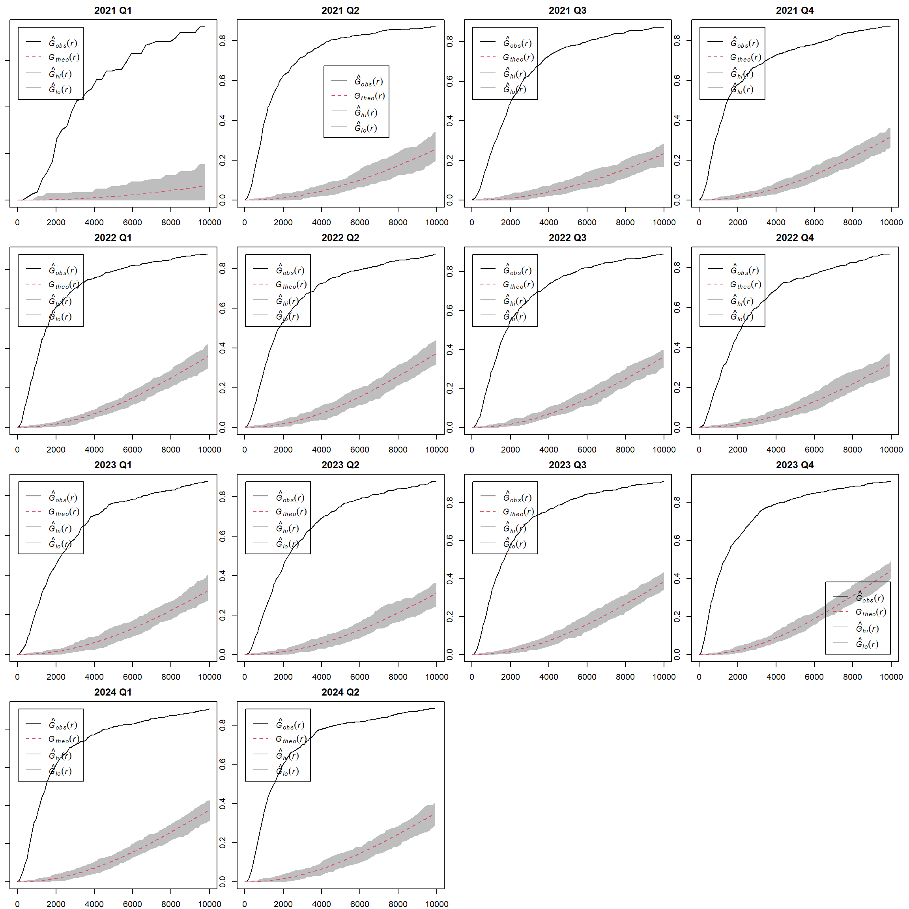
g_func <- Gest(my_2021_Q1_VAC_quarter_data_regions_ppp, correction="border")
plot(g_func, main="G-Function - 2021 Q1 Violence against civilians")
G_CK.csr <- envelope(my_2021_Q1_VAC_quarter_data_regions_ppp, Gest, nsim = 99, correction="all", parallel = parallel::detectCores())Generating 99 simulations of CSR ...
1, 2, 3, 4, 5, 6, 7, 8, 9, 10, 11, 12, 13, 14, 15, 16, 17, 18, 19, 20,
21, 22, 23, 24, 25, 26, 27, 28, 29, 30, 31, 32, 33, 34, 35, 36, 37, 38, 39, 40,
41, 42, 43, 44, 45, 46, 47, 48, 49, 50, 51, 52, 53, 54, 55, 56, 57, 58, 59, 60,
61, 62, 63, 64, 65, 66, 67, 68, 69, 70, 71, 72, 73, 74, 75, 76, 77, 78, 79, 80,
81, 82, 83, 84, 85, 86, 87, 88, 89, 90, 91, 92, 93, 94, 95, 96, 97, 98,
99.
Done.plot(G_CK.csr, main = "G-Function with CSR - 2021 Q1 Violence Against Civilians")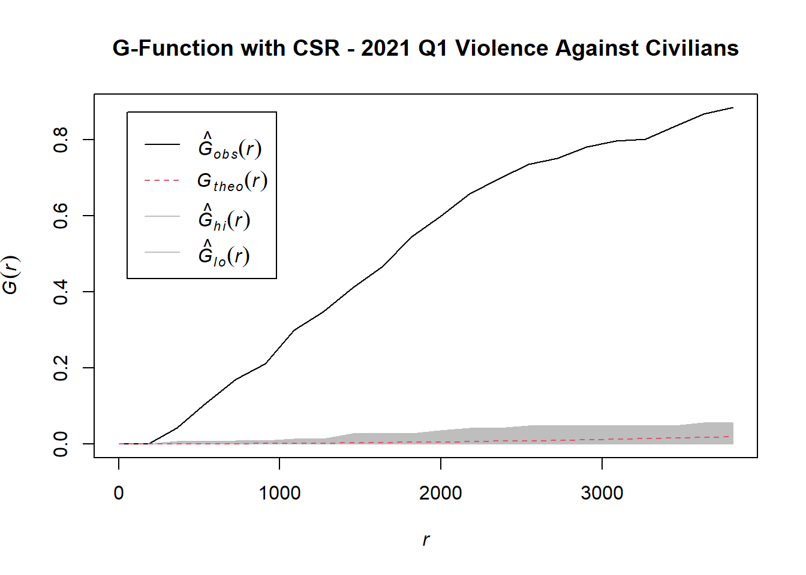
Quarter 2
g_func <- Gest(my_2021_Q2_ER_quarter_data_regions_ppp, correction="border")
plot(g_func, main="G-Function - 2021 Q2 Explosions/Remote violence")
G_CK.csr <- envelope(my_2021_Q2_ER_quarter_data_regions_ppp, Gest, nsim = 99, correction="all", parallel = parallel::detectCores())Generating 99 simulations of CSR ...
1, 2, [4:19 remaining] 3,
[4:34 remaining] 4, [5:16 remaining] 5, [4:54 remaining] 6,
[4:35 remaining] 7, [4:21 remaining] 8, [4:10 remaining] 9,
[4:03 remaining] 10, [3:51 remaining] 11, [3:40 remaining] 12,
[3:31 remaining] 13, [3:23 remaining] 14, [3:16 remaining] 15,
[3:10 remaining] 16, [3:04 remaining] 17, [2:59 remaining] 18,
[2:55 remaining] 19, [2:51 remaining] 20, [2:48 remaining] 21,
[2:44 remaining] 22, [2:41 remaining] 23, [2:38 remaining] 24,
[2:35 remaining] 25, [2:32 remaining] 26, [2:28 remaining] 27,
[2:25 remaining] 28, [2:22 remaining] 29, [2:19 remaining] 30,
[2:16 remaining] 31, [2:13 remaining] 32, [2:11 remaining] 33,
[2:08 remaining] 34, [2:05 remaining] 35, [2:03 remaining] 36,
[2:00 remaining] 37, [1:58 remaining] 38, [1:56 remaining] 39,
[1:54 remaining] 40, [1:52 remaining] 41, [1:49 remaining] 42,
[1:47 remaining] 43, [1:45 remaining] 44, [1:43 remaining] 45,
[1:41 remaining] 46, [1:39 remaining] 47, [1:36 remaining] 48,
[1:34 remaining] 49, [1:32 remaining] 50, [1:30 remaining] 51,
[1:28 remaining] 52, [1:26 remaining] 53, [1:24 remaining] 54,
[1:22 remaining] 55, [1:20 remaining] 56, [1:18 remaining] 57,
[1:16 remaining] 58, [1:14 remaining] 59, [1:12 remaining] 60,
[1:10 remaining] 61, [1:09 remaining] 62, [1:07 remaining] 63,
[1:05 remaining] 64, [1:03 remaining] 65, [1:01 remaining] 66,
[59 sec remaining] 67, [57 sec remaining] 68, [56 sec remaining] 69,
[54 sec remaining] 70, [52 sec remaining] 71, [50 sec remaining] 72,
[48 sec remaining] 73, [46 sec remaining] 74, [44 sec remaining] 75,
[43 sec remaining] 76, [41 sec remaining] 77, [39 sec remaining] 78,
[37 sec remaining] 79, [35 sec remaining] 80, [34 sec remaining] 81,
[32 sec remaining] 82, [30 sec remaining] 83, [28 sec remaining] 84,
[27 sec remaining] 85, [25 sec remaining] 86, [23 sec remaining] 87,
[21 sec remaining] 88, [20 sec remaining] 89, [18 sec remaining] 90,
[16 sec remaining] 91, [15 sec remaining] 92, [13 sec remaining] 93,
[11 sec remaining] 94, [9 sec remaining] 95, [7 sec remaining] 96,
[5 sec remaining] 97, [4 sec remaining] 98, [2 sec remaining]
99.
Done.plot(G_CK.csr, main = "G-Function with CSR - 2021 Q2 Explosions/Remote violence")g_func <- Gest(my_2021_Q2_SD_quarter_data_regions_ppp, correction="border")
plot(g_func, main="G-Function - 2021 Q2 Strategic developments ")
G_CK.csr <- envelope(my_2021_Q2_SD_quarter_data_regions_ppp, Gest, nsim = 99, correction="all", parallel = parallel::detectCores())Generating 99 simulations of CSR ...
1, 2, [3:41 remaining] 3,
[3:35 remaining] 4, [3:40 remaining] 5, [3:44 remaining] 6,
[3:40 remaining] 7, [3:34 remaining] 8, [3:29 remaining] 9,
[3:25 remaining] 10, [3:25 remaining] 11, [3:23 remaining] 12,
[3:22 remaining] 13, [3:18 remaining] 14, [3:16 remaining] 15,
[3:13 remaining] 16, [3:10 remaining] 17, [3:07 remaining] 18,
[3:04 remaining] 19, [3:01 remaining] 20, [2:58 remaining] 21,
[2:57 remaining] 22, [2:56 remaining] 23, [2:53 remaining] 24,
[2:51 remaining] 25, [2:50 remaining] 26, [2:48 remaining] 27,
[2:46 remaining] 28, [2:45 remaining] 29, [2:44 remaining] 30,
[2:42 remaining] 31, [2:40 remaining] 32, [2:38 remaining] 33,
[2:36 remaining] 34, [2:34 remaining] 35, [2:32 remaining] 36,
[2:29 remaining] 37, [2:27 remaining] 38, [2:24 remaining] 39,
[2:21 remaining] 40, [2:18 remaining] 41, [2:16 remaining] 42,
[2:13 remaining] 43, [2:10 remaining] 44, [2:08 remaining] 45,
[2:06 remaining] 46, [2:04 remaining] 47, [2:02 remaining] 48,
[1:59 remaining] 49, [1:57 remaining] 50, [1:55 remaining] 51,
[1:52 remaining] 52, [1:50 remaining] 53, [1:48 remaining] 54,
[1:46 remaining] 55, [1:43 remaining] 56, [1:41 remaining] 57,
[1:40 remaining] 58, [1:38 remaining] 59, [1:36 remaining] 60,
[1:33 remaining] 61, [1:31 remaining] 62, [1:28 remaining] 63,
[1:26 remaining] 64, [1:23 remaining] 65, [1:21 remaining] 66,
[1:19 remaining] 67, [1:16 remaining] 68, [1:14 remaining] 69,
[1:11 remaining] 70, [1:09 remaining] 71, [1:07 remaining] 72,
[1:04 remaining] 73, [1:02 remaining] 74, [59 sec remaining] 75,
[57 sec remaining] 76, [55 sec remaining] 77, [52 sec remaining] 78,
[50 sec remaining] 79, [48 sec remaining] 80, [45 sec remaining] 81,
[43 sec remaining] 82, [40 sec remaining] 83, [38 sec remaining] 84,
[36 sec remaining] 85, [33 sec remaining] 86, [31 sec remaining] 87,
[29 sec remaining] 88, [26 sec remaining] 89, [24 sec remaining] 90,
[21 sec remaining] 91, [19 sec remaining] 92, [17 sec remaining] 93,
[14 sec remaining] 94, [12 sec remaining] 95, [10 sec remaining] 96,
[7 sec remaining] 97, [5 sec remaining] 98, [2 sec remaining]
99.
Done.plot(G_CK.csr, main = "G-Function with CSR - 2021 Q2 Strategic developments")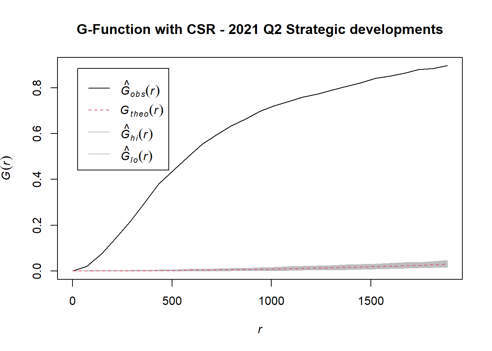
g_func <- Gest(my_2021_Q2_B_quarter_data_regions_ppp, correction="border")
plot(g_func, main="G-Function - 2021 Q2 Battles ")
G_CK.csr <- envelope(my_2021_Q2_B_quarter_data_regions_ppp, Gest, nsim = 99, correction="all", parallel = parallel::detectCores())Generating 99 simulations of CSR ...
1, 2, [3:06 remaining] 3,
[3:03 remaining] 4, [3:11 remaining] 5, [3:06 remaining] 6,
[3:02 remaining] 7, [3:00 remaining] 8, [2:57 remaining] 9,
[2:55 remaining] 10, [2:52 remaining] 11, [2:54 remaining] 12,
[2:52 remaining] 13, [2:49 remaining] 14, [2:47 remaining] 15,
[2:45 remaining] 16, [2:43 remaining] 17, [2:43 remaining] 18,
[2:41 remaining] 19, [2:39 remaining] 20, [2:38 remaining] 21,
[2:36 remaining] 22, [2:34 remaining] 23, [2:33 remaining] 24,
[2:31 remaining] 25, [2:29 remaining] 26, [2:27 remaining] 27,
[2:25 remaining] 28, [2:23 remaining] 29, [2:21 remaining] 30,
[2:19 remaining] 31, [2:18 remaining] 32, [2:15 remaining] 33,
[2:13 remaining] 34, [2:11 remaining] 35, [2:09 remaining] 36,
[2:07 remaining] 37, [2:05 remaining] 38, [2:02 remaining] 39,
[2:00 remaining] 40, [1:58 remaining] 41, [1:56 remaining] 42,
[1:54 remaining] 43, [1:52 remaining] 44, [1:50 remaining] 45,
[1:48 remaining] 46, [1:46 remaining] 47, [1:44 remaining] 48,
[1:42 remaining] 49, [1:40 remaining] 50, [1:38 remaining] 51,
[1:36 remaining] 52, [1:34 remaining] 53, [1:32 remaining] 54,
[1:30 remaining] 55, [1:27 remaining] 56, [1:25 remaining] 57,
[1:23 remaining] 58, [1:22 remaining] 59, [1:20 remaining] 60,
[1:18 remaining] 61, [1:16 remaining] 62, [1:14 remaining] 63,
[1:12 remaining] 64, [1:10 remaining] 65, [1:08 remaining] 66,
[1:06 remaining] 67, [1:04 remaining] 68, [1:02 remaining] 69,
[1:00 remaining] 70, [58 sec remaining] 71, [56 sec remaining] 72,
[54 sec remaining] 73, [52 sec remaining] 74, [50 sec remaining] 75,
[48 sec remaining] 76, [46 sec remaining] 77, [44 sec remaining] 78,
[42 sec remaining] 79, [40 sec remaining] 80, [38 sec remaining] 81,
[36 sec remaining] 82, [34 sec remaining] 83, [32 sec remaining] 84,
[30 sec remaining] 85, [28 sec remaining] 86, [26 sec remaining] 87,
[24 sec remaining] 88, [22 sec remaining] 89, [20 sec remaining] 90,
[18 sec remaining] 91, [16 sec remaining] 92, [14 sec remaining] 93,
[12 sec remaining] 94, [10 sec remaining] 95, [8 sec remaining] 96,
[6 sec remaining] 97, [4 sec remaining] 98, [2 sec remaining]
99.
Done.plot(G_CK.csr, main = "G-Function with CSR - 2021 Q2 Battles")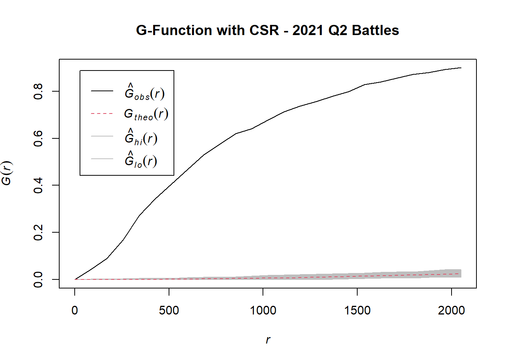
g_func <- Gest(my_2021_Q2_VAC_quarter_data_regions_ppp, correction="border")
plot(g_func, main="G-Function - 2021 Q2 Violence against civilians")
G_CK.csr <- envelope(my_2021_Q2_VAC_quarter_data_regions_ppp, Gest, nsim = 99, correction="all", parallel = parallel::detectCores())Generating 99 simulations of CSR ...
1, 2, 3, 4, 5, 6, 7, 8, 9, 10, 11, 12, 13, 14, 15, 16, 17, 18, 19, 20,
21, 22, 23, 24, 25, 26, 27, 28, 29, 30, 31, 32, 33, 34, 35, 36, 37, 38, 39, 40,
41, 42, 43, 44, 45, 46, 47, 48, 49, 50, 51, 52, 53, 54, 55, 56, 57, 58, 59, 60,
61, 62, 63, 64, 65, 66, 67, 68, 69, 70, 71, 72, 73, 74, 75, 76, 77, 78, 79, 80,
81, 82, 83, 84, 85, 86, 87, 88, 89, 90, 91, 92, 93, 94, 95, 96, 97, 98,
99.
Done.plot(G_CK.csr, main = "G-Function with CSR - 2021 Q2 Violence Against Civilians")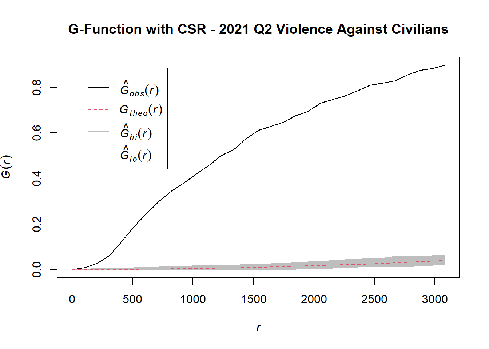
Quarter 3
g_func <- Gest(my_2021_Q3_ER_quarter_data_regions_ppp, correction="border")
plot(g_func, main="G-Function - 2021 Q3 Explosions/Remote violence")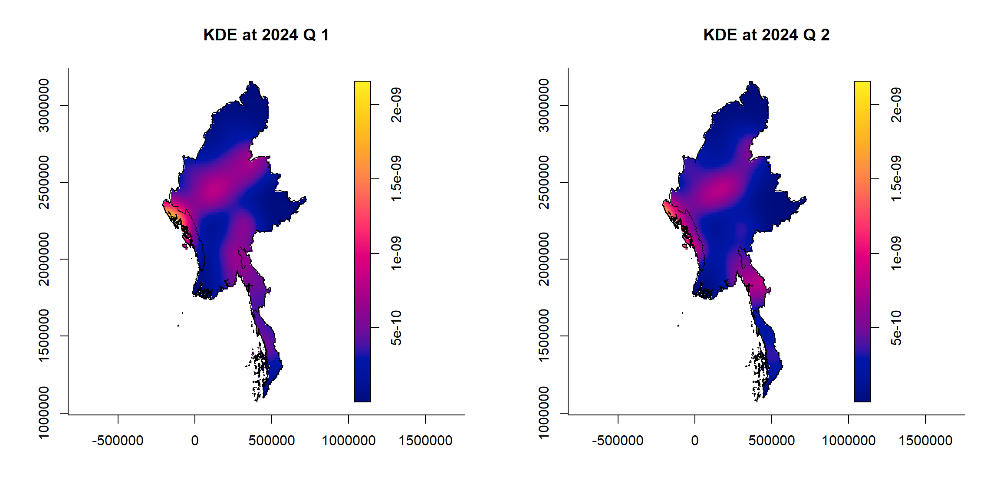
G_CK.csr <- envelope(my_2021_Q3_ER_quarter_data_regions_ppp, Gest, nsim = 99, correction="all", parallel = parallel::detectCores())Generating 99 simulations of CSR ...
1, 2, 3, 4, 5, 6, 7, 8, 9, 10, 11, 12, 13, 14, 15, 16, 17, 18, 19, 20,
21, 22, 23, 24, 25, 26, 27, 28, 29, 30, 31, 32, 33, 34, 35, 36, 37, 38, 39, 40,
41, 42, 43, 44, 45, 46, 47, 48, 49, 50, 51, 52, 53, 54, 55, 56, 57, 58, 59, 60,
61, 62, 63, 64, 65, 66, 67, 68, 69, 70, 71, 72, 73, 74, 75, 76, 77, 78, 79, 80,
81, 82, 83, 84, 85, 86, 87, 88, 89, 90, 91, 92, 93, 94, 95, 96, 97, 98,
99.
Done.plot(G_CK.csr, main = "G-Function with CSR - 2021 Q3 Explosions/Remote violence")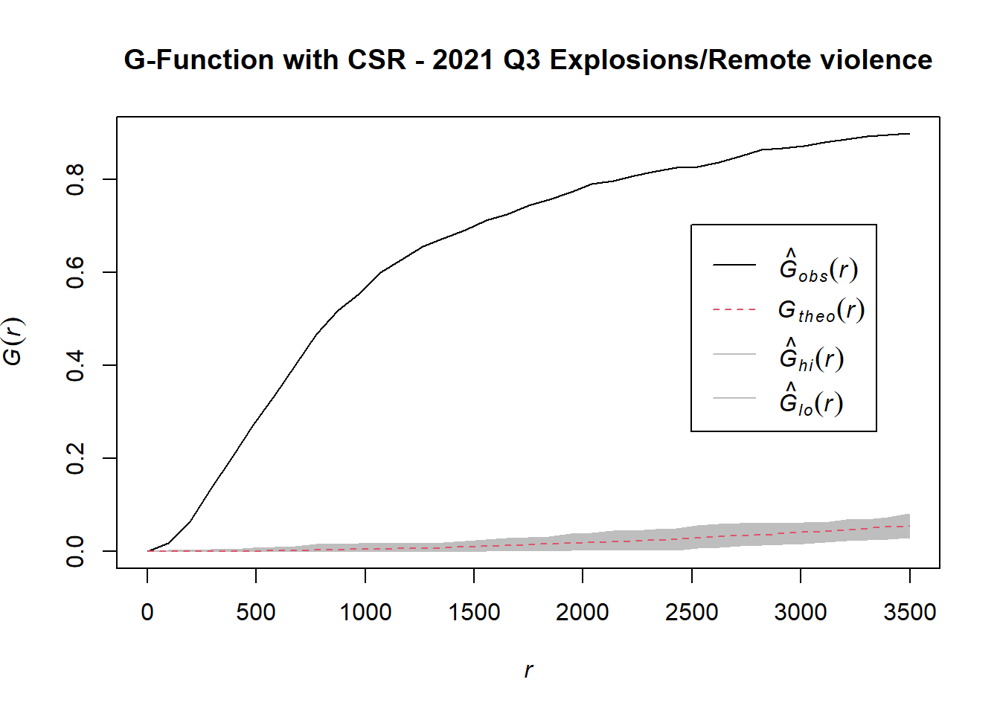
g_func <- Gest(my_2021_Q3_SD_quarter_data_regions_ppp, correction="border")
plot(g_func, main="G-Function - 2021 Q3 Strategic developments ")
G_CK.csr <- envelope(my_2021_Q3_SD_quarter_data_regions_ppp, Gest, nsim = 99, correction="all", parallel = parallel::detectCores())Generating 99 simulations of CSR ...
1, 2, [3:27 remaining] 3,
[3:23 remaining] 4, [3:19 remaining] 5, [3:18 remaining] 6,
[3:15 remaining] 7, [3:16 remaining] 8, [3:13 remaining] 9,
[3:11 remaining] 10, [3:07 remaining] 11, [3:03 remaining] 12,
[3:01 remaining] 13, [2:58 remaining] 14, [2:55 remaining] 15,
[2:53 remaining] 16, [2:50 remaining] 17, [2:47 remaining] 18,
[2:45 remaining] 19, [2:42 remaining] 20, [2:41 remaining] 21,
[2:38 remaining] 22, [2:36 remaining] 23, [2:37 remaining] 24,
[2:36 remaining] 25, [2:34 remaining] 26, [2:32 remaining] 27,
[2:30 remaining] 28, [2:28 remaining] 29, [2:25 remaining] 30,
[2:23 remaining] 31, [2:21 remaining] 32, [2:19 remaining] 33,
[2:16 remaining] 34, [2:14 remaining] 35, [2:12 remaining] 36,
[2:09 remaining] 37, [2:07 remaining] 38, [2:05 remaining] 39,
[2:03 remaining] 40, [2:01 remaining] 41, [1:59 remaining] 42,
[1:57 remaining] 43, [1:54 remaining] 44, [1:52 remaining] 45,
[1:50 remaining] 46, [1:48 remaining] 47, [1:46 remaining] 48,
[1:44 remaining] 49, [1:42 remaining] 50, [1:40 remaining] 51,
[1:38 remaining] 52, [1:36 remaining] 53, [1:34 remaining] 54,
[1:32 remaining] 55, [1:30 remaining] 56, [1:28 remaining] 57,
[1:26 remaining] 58, [1:24 remaining] 59, [1:22 remaining] 60,
[1:20 remaining] 61, [1:18 remaining] 62, [1:15 remaining] 63,
[1:13 remaining] 64, [1:11 remaining] 65, [1:09 remaining] 66,
[1:07 remaining] 67, [1:05 remaining] 68, [1:03 remaining] 69,
[1:01 remaining] 70, [59 sec remaining] 71, [57 sec remaining] 72,
[55 sec remaining] 73, [53 sec remaining] 74, [51 sec remaining] 75,
[50 sec remaining] 76, [48 sec remaining] 77, [46 sec remaining] 78,
[44 sec remaining] 79, [42 sec remaining] 80, [39 sec remaining] 81,
[37 sec remaining] 82, [35 sec remaining] 83, [33 sec remaining] 84,
[31 sec remaining] 85, [29 sec remaining] 86, [27 sec remaining] 87,
[25 sec remaining] 88, [23 sec remaining] 89, [21 sec remaining] 90,
[19 sec remaining] 91, [17 sec remaining] 92, [14 sec remaining] 93,
[12 sec remaining] 94, [10 sec remaining] 95, [8 sec remaining] 96,
[6 sec remaining] 97, [4 sec remaining] 98, [2 sec remaining]
99.
Done.plot(G_CK.csr, main = "G-Function with CSR - 2021 Q3 Strategic developments")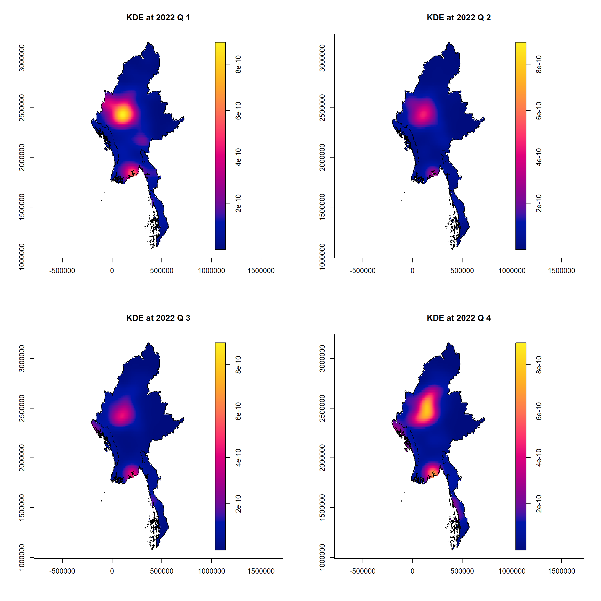
g_func <- Gest(my_2021_Q3_B_quarter_data_regions_ppp, correction="border")
plot(g_func, main="G-Function - 2021 Q3 Battles ")
G_CK.csr <- envelope(my_2021_Q3_B_quarter_data_regions_ppp, Gest, nsim = 99, correction="all", parallel = parallel::detectCores())Generating 99 simulations of CSR ...
1, 2, 3, 4, 5, 6, 7, 8, 9, 10, 11, 12, 13, 14, 15, 16, 17, 18, 19, 20,
21, 22, 23, 24, 25, 26, 27, 28, 29, 30, 31, 32, 33, 34, 35, 36, 37, 38, 39, 40,
41, 42, 43, 44, 45, 46, 47, 48, 49, 50, 51, 52, 53, 54, 55, 56, 57, 58, 59, 60,
61, 62, 63, 64, 65, 66, 67, 68, 69, 70, 71, 72, 73, 74, 75, 76, 77, 78, 79, 80,
81, 82, 83, 84, 85, 86, 87, 88, 89, 90, 91, 92, 93, 94, 95, 96, 97, 98,
99.
Done.plot(G_CK.csr, main = "G-Function with CSR - 2021 Q3 Battles")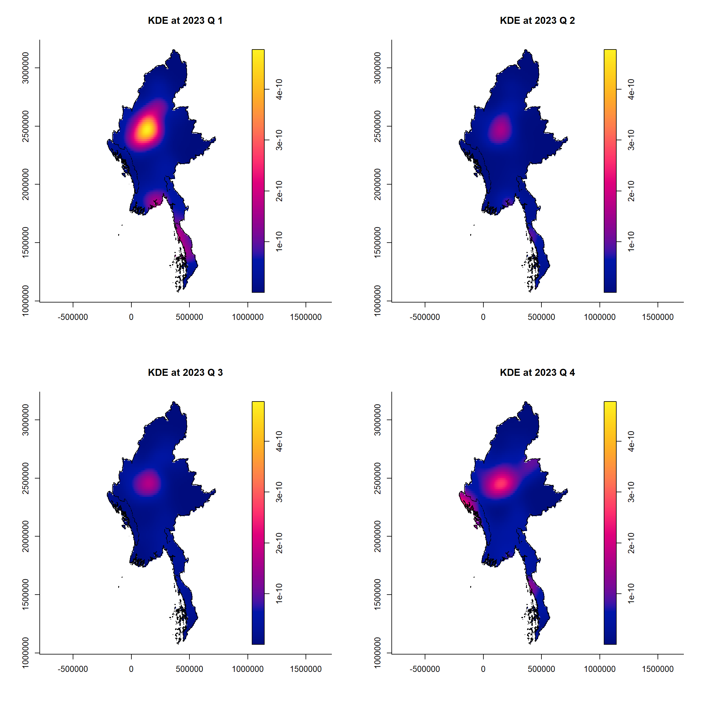
g_func <- Gest(my_2021_Q3_VAC_quarter_data_regions_ppp, correction="border")
plot(g_func, main="G-Function - 2021 Q3 Violence against civilians")
G_CK.csr <- envelope(my_2021_Q3_VAC_quarter_data_regions_ppp, Gest, nsim = 99, correction="all", parallel = parallel::detectCores())Generating 99 simulations of CSR ...
1, 2, 3, 4, 5, 6, 7, 8, 9, 10, 11, 12, 13, 14, 15, 16, 17, 18, 19, 20,
21, 22, 23, 24, 25, 26, 27, 28, 29, 30, 31, 32, 33, 34, 35, 36, 37, 38, 39, 40,
41, 42, 43, 44, 45, 46, 47, 48, 49, 50, 51, 52, 53, 54, 55, 56, 57, 58, 59, 60,
61, 62, 63, 64, 65, 66, 67, 68, 69, 70, 71, 72, 73, 74, 75, 76, 77, 78, 79, 80,
81, 82, 83, 84, 85, 86, 87, 88, 89, 90, 91, 92, 93, 94, 95, 96, 97, 98,
99.
Done.plot(G_CK.csr, main = "G-Function with CSR - 2021 Q3 Violence Against Civilians")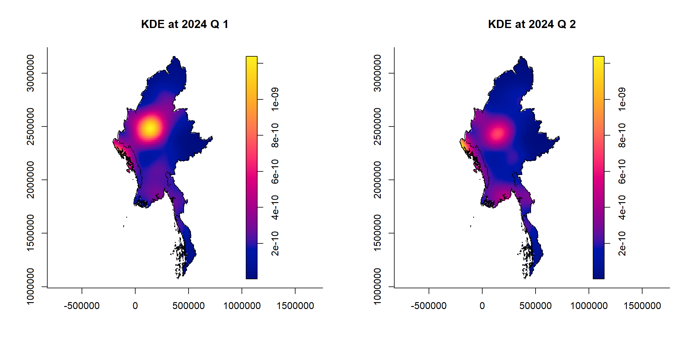
Quarter 4
g_func <- Gest(my_2021_Q4_ER_quarter_data_regions_ppp, correction="border")
plot(g_func, main="G-Function - 2021 Q4 Explosions/Remote violence")
G_CK.csr <- envelope(my_2021_Q4_ER_quarter_data_regions_ppp, Gest, nsim = 99, correction="all", parallel = parallel::detectCores())Generating 99 simulations of CSR ...
1, 2, [3:38 remaining] 3,
[3:44 remaining] 4, [3:46 remaining] 5, [3:42 remaining] 6,
[3:38 remaining] 7, [3:32 remaining] 8, [3:32 remaining] 9,
[3:28 remaining] 10, [3:25 remaining] 11, [3:22 remaining] 12,
[3:19 remaining] 13, [3:16 remaining] 14, [3:15 remaining] 15,
[3:11 remaining] 16, [3:09 remaining] 17, [3:05 remaining] 18,
[3:02 remaining] 19, [2:59 remaining] 20, [2:56 remaining] 21,
[2:53 remaining] 22, [2:50 remaining] 23, [2:47 remaining] 24,
[2:44 remaining] 25, [2:42 remaining] 26, [2:39 remaining] 27,
[2:36 remaining] 28, [2:34 remaining] 29, [2:32 remaining] 30,
[2:29 remaining] 31, [2:27 remaining] 32, [2:24 remaining] 33,
[2:22 remaining] 34, [2:20 remaining] 35, [2:17 remaining] 36,
[2:15 remaining] 37, [2:13 remaining] 38, [2:10 remaining] 39,
[2:08 remaining] 40, [2:06 remaining] 41, [2:04 remaining] 42,
[2:01 remaining] 43, [1:59 remaining] 44, [1:57 remaining] 45,
[1:55 remaining] 46, [1:53 remaining] 47, [1:50 remaining] 48,
[1:48 remaining] 49, [1:46 remaining] 50, [1:44 remaining] 51,
[1:42 remaining] 52, [1:40 remaining] 53, [1:37 remaining] 54,
[1:35 remaining] 55, [1:33 remaining] 56, [1:31 remaining] 57,
[1:29 remaining] 58, [1:27 remaining] 59, [1:25 remaining] 60,
[1:22 remaining] 61, [1:20 remaining] 62, [1:18 remaining] 63,
[1:16 remaining] 64, [1:14 remaining] 65, [1:12 remaining] 66,
[1:10 remaining] 67, [1:07 remaining] 68, [1:05 remaining] 69,
[1:03 remaining] 70, [1:01 remaining] 71, [59 sec remaining] 72,
[57 sec remaining] 73, [55 sec remaining] 74, [53 sec remaining] 75,
[50 sec remaining] 76, [48 sec remaining] 77, [46 sec remaining] 78,
[44 sec remaining] 79, [42 sec remaining] 80, [40 sec remaining] 81,
[38 sec remaining] 82, [36 sec remaining] 83, [34 sec remaining] 84,
[31 sec remaining] 85, [29 sec remaining] 86, [27 sec remaining] 87,
[25 sec remaining] 88, [23 sec remaining] 89, [21 sec remaining] 90,
[19 sec remaining] 91, [17 sec remaining] 92, [15 sec remaining] 93,
[13 sec remaining] 94, [10 sec remaining] 95, [8 sec remaining] 96,
[6 sec remaining] 97, [4 sec remaining] 98, [2 sec remaining]
99.
Done.plot(G_CK.csr, main = "G-Function with CSR - 2021 Q4 Explosions/Remote violence")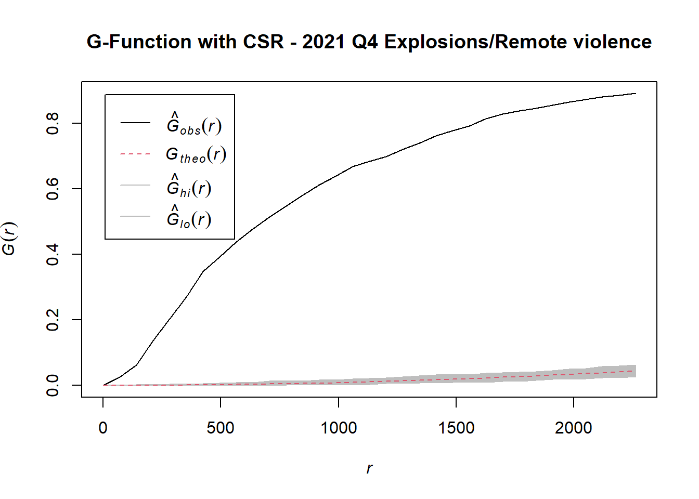
g_func <- Gest(my_2021_Q4_SD_quarter_data_regions_ppp, correction="border")
plot(g_func, main="G-Function - 2021 Q4 Strategic developments ")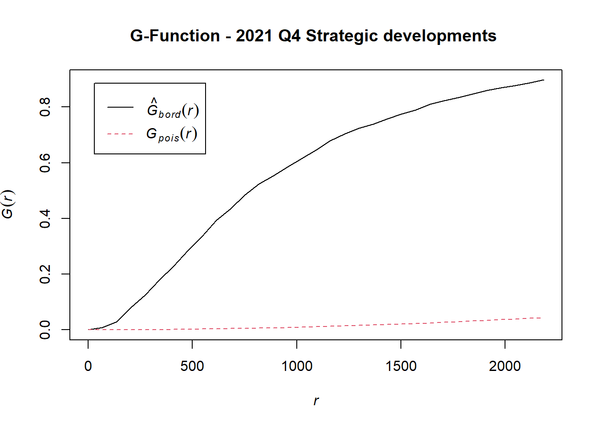
G_CK.csr <- envelope(my_2021_Q4_SD_quarter_data_regions_ppp, Gest, nsim = 99, correction="all", parallel = parallel::detectCores())Generating 99 simulations of CSR ...
1, 2, [3:35 remaining] 3,
[3:32 remaining] 4, [3:27 remaining] 5, [3:24 remaining] 6,
[3:21 remaining] 7, [3:19 remaining] 8, [3:17 remaining] 9,
[3:17 remaining] 10, [3:14 remaining] 11, [3:11 remaining] 12,
[3:09 remaining] 13, [3:07 remaining] 14, [3:04 remaining] 15,
[3:02 remaining] 16, [3:00 remaining] 17, [2:57 remaining] 18,
[2:54 remaining] 19, [2:52 remaining] 20, [2:51 remaining] 21,
[2:49 remaining] 22, [2:46 remaining] 23, [2:44 remaining] 24,
[2:42 remaining] 25, [2:39 remaining] 26, [2:38 remaining] 27,
[2:35 remaining] 28, [2:33 remaining] 29, [2:31 remaining] 30,
[2:29 remaining] 31, [2:27 remaining] 32, [2:25 remaining] 33,
[2:22 remaining] 34, [2:20 remaining] 35, [2:18 remaining] 36,
[2:16 remaining] 37, [2:14 remaining] 38, [2:11 remaining] 39,
[2:09 remaining] 40, [2:07 remaining] 41, [2:05 remaining] 42,
[2:03 remaining] 43, [2:01 remaining] 44, [1:59 remaining] 45,
[1:56 remaining] 46, [1:54 remaining] 47, [1:52 remaining] 48,
[1:50 remaining] 49, [1:48 remaining] 50, [1:45 remaining] 51,
[1:43 remaining] 52, [1:41 remaining] 53, [1:39 remaining] 54,
[1:37 remaining] 55, [1:35 remaining] 56, [1:33 remaining] 57,
[1:30 remaining] 58, [1:28 remaining] 59, [1:26 remaining] 60,
[1:24 remaining] 61, [1:22 remaining] 62, [1:20 remaining] 63,
[1:17 remaining] 64, [1:15 remaining] 65, [1:13 remaining] 66,
[1:11 remaining] 67, [1:09 remaining] 68, [1:07 remaining] 69,
[1:04 remaining] 70, [1:02 remaining] 71, [1:00 remaining] 72,
[58 sec remaining] 73, [56 sec remaining] 74, [54 sec remaining] 75,
[52 sec remaining] 76, [49 sec remaining] 77, [47 sec remaining] 78,
[45 sec remaining] 79, [43 sec remaining] 80, [41 sec remaining] 81,
[39 sec remaining] 82, [36 sec remaining] 83, [34 sec remaining] 84,
[32 sec remaining] 85, [30 sec remaining] 86, [28 sec remaining] 87,
[26 sec remaining] 88, [24 sec remaining] 89, [21 sec remaining] 90,
[19 sec remaining] 91, [17 sec remaining] 92, [15 sec remaining] 93,
[13 sec remaining] 94, [11 sec remaining] 95, [9 sec remaining] 96,
[6 sec remaining] 97, [4 sec remaining] 98, [2 sec remaining]
99.
Done.plot(G_CK.csr, main = "G-Function with CSR - 2021 Q4 Strategic developments")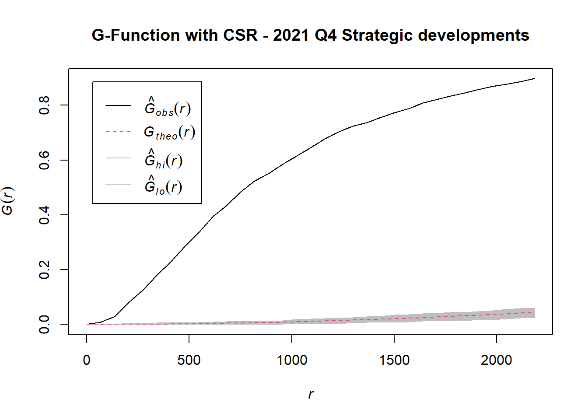
g_func <- Gest(my_2021_Q4_B_quarter_data_regions_ppp, correction="border")
plot(g_func, main="G-Function - 2021 Q4 Battles ")
G_CK.csr <- envelope(my_2021_Q4_B_quarter_data_regions_ppp, Gest, nsim = 99, correction="all", parallel = parallel::detectCores())Generating 99 simulations of CSR ...
1, 2, 3, 4, 5, 6, 7, 8, 9, 10, 11, 12, 13, 14, 15, 16, 17, 18, 19, 20,
21, 22, 23, 24, 25, 26, 27, 28, 29, 30, 31, 32, 33, 34, 35, 36, 37, 38, 39, 40,
41, 42, 43, 44, 45, 46, 47, 48, 49, 50, 51, 52, 53, 54, 55, 56, 57, 58, 59, 60,
61, 62, 63, 64, 65, 66, 67, 68, 69, 70, 71, 72, 73, 74, 75, 76, 77, 78, 79, 80,
81, 82, 83, 84, 85, 86, 87, 88, 89, 90, 91, 92, 93, 94, 95, 96, 97, 98,
99.
Done.plot(G_CK.csr, main = "G-Function with CSR - 2021 Q4 Battles")
g_func <- Gest(my_2021_Q4_VAC_quarter_data_regions_ppp, correction="border")
plot(g_func, main="G-Function - 2021 Q4 Violence against civilians")
G_CK.csr <- envelope(my_2021_Q4_VAC_quarter_data_regions_ppp, Gest, nsim = 99, correction="all", parallel = parallel::detectCores())Generating 99 simulations of CSR ...
1, 2, 3, 4, 5, 6, 7, 8, 9, 10, 11, 12, 13, 14, 15, 16, 17, 18, 19, 20,
21, 22, 23, 24, 25, 26, 27, 28, 29, 30, 31, 32, 33, 34, 35, 36, 37, 38, 39, 40,
41, 42, 43, 44, 45, 46, 47, 48, 49, 50, 51, 52, 53, 54, 55, 56, 57, 58, 59, 60,
61, 62, 63, 64, 65, 66, 67, 68, 69, 70, 71, 72, 73, 74, 75, 76, 77, 78, 79, 80,
81, 82, 83, 84, 85, 86, 87, 88, 89, 90, 91, 92, 93, 94, 95, 96, 97, 98,
99.
Done.plot(G_CK.csr, main = "G-Function with CSR - 2021 Q4 Violence Against Civilians")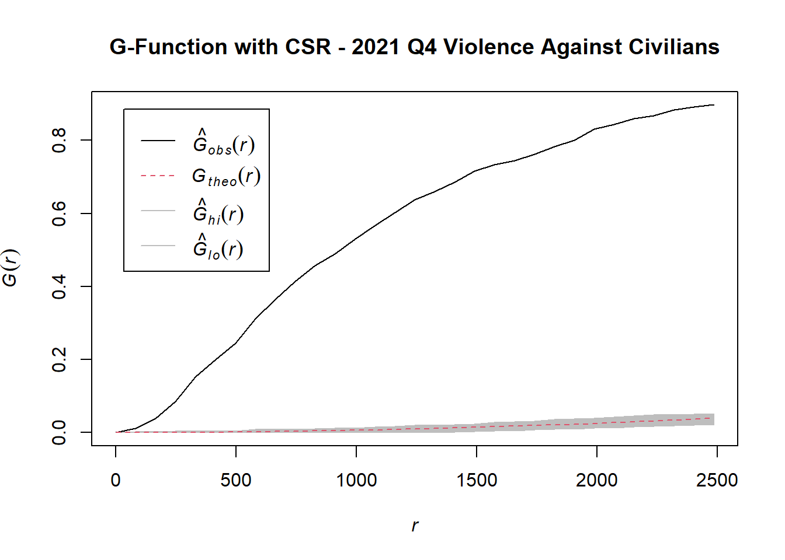
Year 2022
Quarter 1
g_func <- Gest(my_2022_Q1_ER_quarter_data_regions_ppp, correction="border")
plot(g_func, main="G-Function - 2022 Q1 Explosions/Remote violence")
G_CK.csr <- envelope(my_2022_Q1_ER_quarter_data_regions_ppp, Gest, nsim = 99, correction="all", parallel = parallel::detectCores())Generating 99 simulations of CSR ...
1, 2, [3:05 remaining] 3,
[3:13 remaining] 4, [3:07 remaining] 5, [3:03 remaining] 6,
[3:00 remaining] 7, [2:57 remaining] 8, [2:55 remaining] 9,
[2:52 remaining] 10, [2:50 remaining] 11, [2:48 remaining] 12,
[2:46 remaining] 13, [2:44 remaining] 14, [2:42 remaining] 15,
[2:42 remaining] 16, [2:40 remaining] 17, [2:38 remaining] 18,
[2:36 remaining] 19, [2:35 remaining] 20, [2:34 remaining] 21,
[2:32 remaining] 22, [2:30 remaining] 23, [2:28 remaining] 24,
[2:26 remaining] 25, [2:24 remaining] 26, [2:22 remaining] 27,
[2:20 remaining] 28, [2:18 remaining] 29, [2:16 remaining] 30,
[2:14 remaining] 31, [2:12 remaining] 32, [2:10 remaining] 33,
[2:08 remaining] 34, [2:06 remaining] 35, [2:04 remaining] 36,
[2:02 remaining] 37, [2:00 remaining] 38, [1:58 remaining] 39,
[1:56 remaining] 40, [1:54 remaining] 41, [1:52 remaining] 42,
[1:50 remaining] 43, [1:48 remaining] 44, [1:46 remaining] 45,
[1:44 remaining] 46, [1:42 remaining] 47, [1:40 remaining] 48,
[1:38 remaining] 49, [1:37 remaining] 50, [1:35 remaining] 51,
[1:33 remaining] 52, [1:31 remaining] 53, [1:29 remaining] 54,
[1:27 remaining] 55, [1:25 remaining] 56, [1:23 remaining] 57,
[1:21 remaining] 58, [1:19 remaining] 59, [1:17 remaining] 60,
[1:15 remaining] 61, [1:13 remaining] 62, [1:11 remaining] 63,
[1:09 remaining] 64, [1:08 remaining] 65, [1:06 remaining] 66,
[1:04 remaining] 67, [1:02 remaining] 68, [1:00 remaining] 69,
[58 sec remaining] 70, [56 sec remaining] 71, [54 sec remaining] 72,
[52 sec remaining] 73, [50 sec remaining] 74, [48 sec remaining] 75,
[46 sec remaining] 76, [44 sec remaining] 77, [42 sec remaining] 78,
[40 sec remaining] 79, [39 sec remaining] 80, [37 sec remaining] 81,
[35 sec remaining] 82, [33 sec remaining] 83, [31 sec remaining] 84,
[29 sec remaining] 85, [27 sec remaining] 86, [25 sec remaining] 87,
[23 sec remaining] 88, [21 sec remaining] 89, [19 sec remaining] 90,
[17 sec remaining] 91, [15 sec remaining] 92, [13 sec remaining] 93,
[12 sec remaining] 94, [10 sec remaining] 95, [8 sec remaining] 96,
[6 sec remaining] 97, [4 sec remaining] 98, [2 sec remaining]
99.
Done.plot(G_CK.csr, main = "G-Function with CSR - 2022 Q1 Explosions/Remote violence")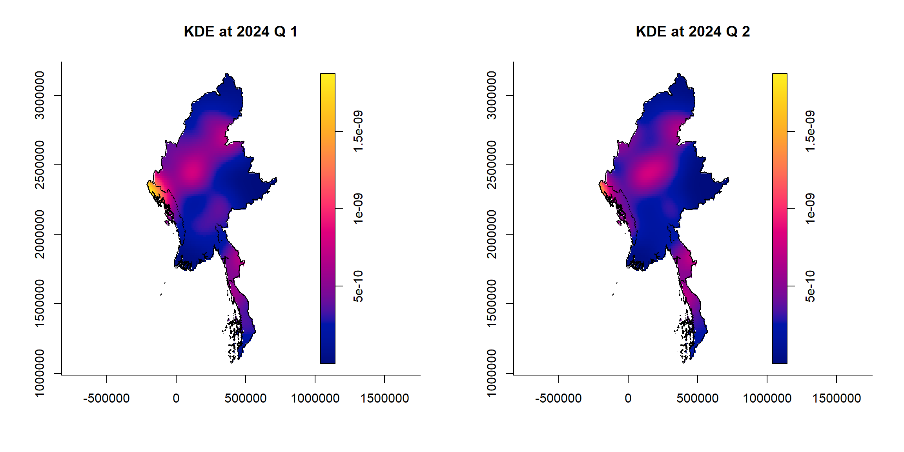
g_func <- Gest(my_2022_Q1_SD_quarter_data_regions_ppp, correction="border")
plot(g_func, main="G-Function - 2022 Q1 Strategic developments ")
G_CK.csr <- envelope(my_2022_Q1_SD_quarter_data_regions_ppp, Gest, nsim = 99, correction="all", parallel = parallel::detectCores())Generating 99 simulations of CSR ...
1, 2, [3:28 remaining] 3,
[3:21 remaining] 4, [3:18 remaining] 5, [3:15 remaining] 6,
[3:15 remaining] 7, [3:12 remaining] 8, [3:09 remaining] 9,
[3:09 remaining] 10, [3:07 remaining] 11, [3:05 remaining] 12,
[3:03 remaining] 13, [3:00 remaining] 14, [2:58 remaining] 15,
[2:56 remaining] 16, [2:54 remaining] 17, [2:51 remaining] 18,
[2:49 remaining] 19, [2:47 remaining] 20, [2:46 remaining] 21,
[2:44 remaining] 22, [2:42 remaining] 23, [2:41 remaining] 24,
[2:38 remaining] 25, [2:36 remaining] 26, [2:34 remaining] 27,
[2:32 remaining] 28, [2:30 remaining] 29, [2:28 remaining] 30,
[2:26 remaining] 31, [2:23 remaining] 32, [2:22 remaining] 33,
[2:20 remaining] 34, [2:17 remaining] 35, [2:15 remaining] 36,
[2:13 remaining] 37, [2:11 remaining] 38, [2:08 remaining] 39,
[2:06 remaining] 40, [2:04 remaining] 41, [2:02 remaining] 42,
[2:00 remaining] 43, [1:58 remaining] 44, [1:56 remaining] 45,
[1:54 remaining] 46, [1:52 remaining] 47, [1:50 remaining] 48,
[1:47 remaining] 49, [1:45 remaining] 50, [1:43 remaining] 51,
[1:41 remaining] 52, [1:39 remaining] 53, [1:37 remaining] 54,
[1:35 remaining] 55, [1:33 remaining] 56, [1:30 remaining] 57,
[1:28 remaining] 58, [1:26 remaining] 59, [1:24 remaining] 60,
[1:22 remaining] 61, [1:20 remaining] 62, [1:18 remaining] 63,
[1:16 remaining] 64, [1:14 remaining] 65, [1:11 remaining] 66,
[1:09 remaining] 67, [1:07 remaining] 68, [1:05 remaining] 69,
[1:03 remaining] 70, [1:01 remaining] 71, [59 sec remaining] 72,
[57 sec remaining] 73, [55 sec remaining] 74, [52 sec remaining] 75,
[50 sec remaining] 76, [48 sec remaining] 77, [46 sec remaining] 78,
[44 sec remaining] 79, [42 sec remaining] 80, [40 sec remaining] 81,
[38 sec remaining] 82, [36 sec remaining] 83, [34 sec remaining] 84,
[31 sec remaining] 85, [29 sec remaining] 86, [27 sec remaining] 87,
[25 sec remaining] 88, [23 sec remaining] 89, [21 sec remaining] 90,
[19 sec remaining] 91, [17 sec remaining] 92, [15 sec remaining] 93,
[13 sec remaining] 94, [10 sec remaining] 95, [8 sec remaining] 96,
[6 sec remaining] 97, [4 sec remaining] 98, [2 sec remaining]
99.
Done.plot(G_CK.csr, main = "G-Function with CSR - 2022 Q1 Strategic developments")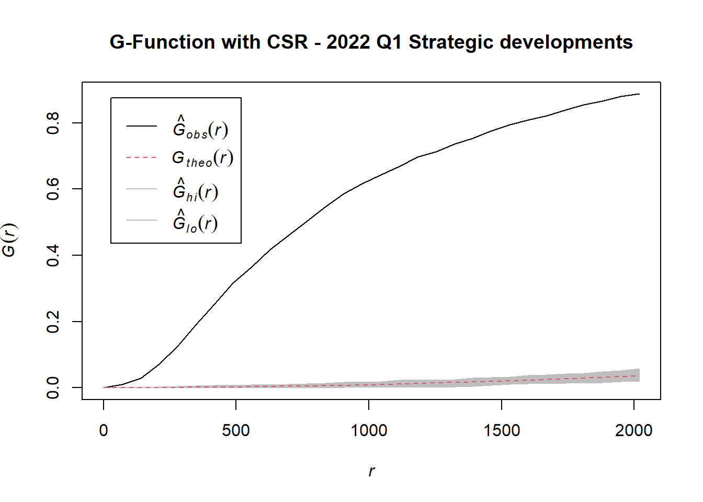
g_func <- Gest(my_2022_Q1_B_quarter_data_regions_ppp, correction="border")
plot(g_func, main="G-Function - 2022 Q1 Battles ")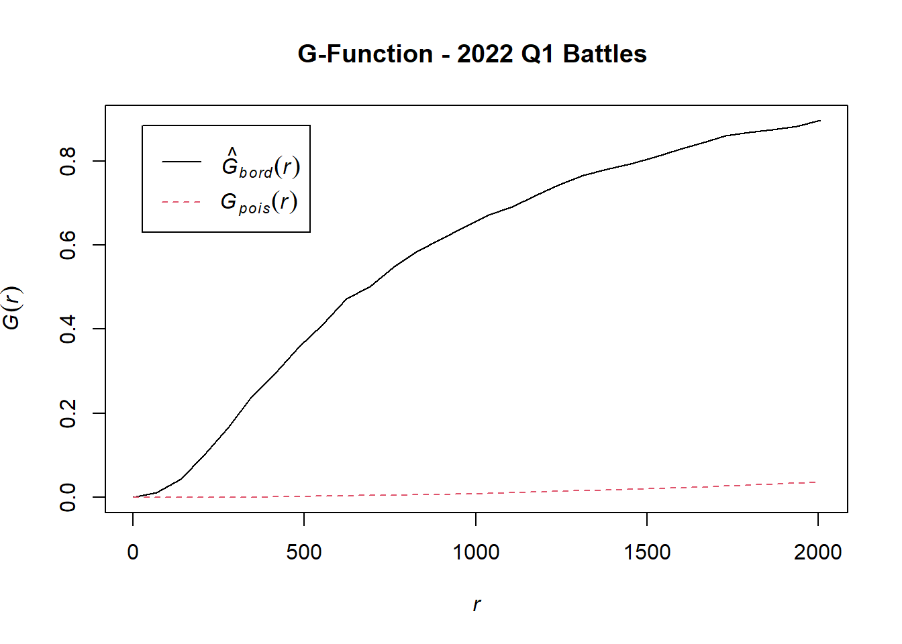
G_CK.csr <- envelope(my_2022_Q1_B_quarter_data_regions_ppp, Gest, nsim = 99, correction="all", parallel = parallel::detectCores())Generating 99 simulations of CSR ...
1, 2, [3:25 remaining] 3,
[3:23 remaining] 4, [3:20 remaining] 5, [3:18 remaining] 6,
[3:15 remaining] 7, [3:13 remaining] 8, [3:10 remaining] 9,
[3:08 remaining] 10, [3:05 remaining] 11, [3:04 remaining] 12,
[3:04 remaining] 13, [3:01 remaining] 14, [2:59 remaining] 15,
[2:57 remaining] 16, [2:54 remaining] 17, [2:52 remaining] 18,
[2:50 remaining] 19, [2:48 remaining] 20, [2:46 remaining] 21,
[2:44 remaining] 22, [2:42 remaining] 23, [2:41 remaining] 24,
[2:38 remaining] 25, [2:36 remaining] 26, [2:34 remaining] 27,
[2:32 remaining] 28, [2:30 remaining] 29, [2:28 remaining] 30,
[2:26 remaining] 31, [2:23 remaining] 32, [2:21 remaining] 33,
[2:19 remaining] 34, [2:17 remaining] 35, [2:15 remaining] 36,
[2:13 remaining] 37, [2:11 remaining] 38, [2:09 remaining] 39,
[2:07 remaining] 40, [2:05 remaining] 41, [2:02 remaining] 42,
[2:00 remaining] 43, [1:58 remaining] 44, [1:56 remaining] 45,
[1:54 remaining] 46, [1:52 remaining] 47, [1:50 remaining] 48,
[1:48 remaining] 49, [1:46 remaining] 50, [1:43 remaining] 51,
[1:41 remaining] 52, [1:39 remaining] 53, [1:37 remaining] 54,
[1:35 remaining] 55, [1:34 remaining] 56, [1:32 remaining] 57,
[1:30 remaining] 58, [1:28 remaining] 59, [1:26 remaining] 60,
[1:24 remaining] 61, [1:22 remaining] 62, [1:20 remaining] 63,
[1:18 remaining] 64, [1:16 remaining] 65, [1:13 remaining] 66,
[1:11 remaining] 67, [1:09 remaining] 68, [1:07 remaining] 69,
[1:05 remaining] 70, [1:03 remaining] 71, [1:00 remaining] 72,
[58 sec remaining] 73, [56 sec remaining] 74, [54 sec remaining] 75,
[52 sec remaining] 76, [49 sec remaining] 77, [47 sec remaining] 78,
[45 sec remaining] 79, [43 sec remaining] 80, [41 sec remaining] 81,
[39 sec remaining] 82, [36 sec remaining] 83, [34 sec remaining] 84,
[32 sec remaining] 85, [30 sec remaining] 86, [28 sec remaining] 87,
[26 sec remaining] 88, [24 sec remaining] 89, [21 sec remaining] 90,
[19 sec remaining] 91, [17 sec remaining] 92, [15 sec remaining] 93,
[13 sec remaining] 94, [11 sec remaining] 95, [9 sec remaining] 96,
[6 sec remaining] 97, [4 sec remaining] 98, [2 sec remaining]
99.
Done.plot(G_CK.csr, main = "G-Function with CSR - 2022 Q1 Battles")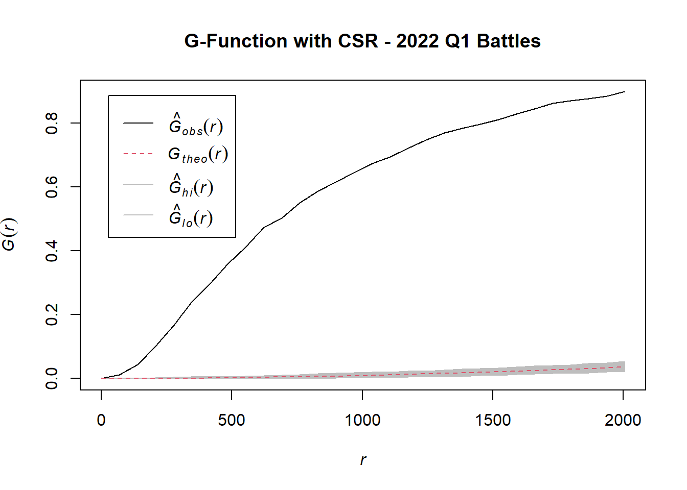
g_func <- Gest(my_2022_Q1_VAC_quarter_data_regions_ppp, correction="border")
plot(g_func, main="G-Function - 2022 Q1 Violence against civilians")
G_CK.csr <- envelope(my_2022_Q1_VAC_quarter_data_regions_ppp, Gest, nsim = 99, correction="all", parallel = parallel::detectCores())Generating 99 simulations of CSR ...
1, 2, 3, 4, 5, 6, 7, 8, 9, 10, 11, 12, 13, 14, 15, 16, 17, 18, 19, 20,
21, 22, 23, 24, 25, 26, 27, 28, 29, 30, 31, 32, 33, 34, 35, 36, 37, 38, 39, 40,
41, 42, 43, 44, 45, 46, 47, 48, 49, 50, 51, 52, 53, 54, 55, 56, 57, 58, 59, 60,
61, 62, 63, 64, 65, 66, 67, 68, 69, 70, 71, 72, 73, 74, 75, 76, 77, 78, 79, 80,
81, 82, 83, 84, 85, 86, 87, 88, 89, 90, 91, 92, 93, 94, 95, 96, 97, 98,
99.
Done.plot(G_CK.csr, main = "G-Function with CSR - 2022 Q1 Violence Against Civilians")Quarter 2
g_func <- Gest(my_2022_Q2_ER_quarter_data_regions_ppp, correction="border")
plot(g_func, main="G-Function - 2022 Q2 Explosions/Remote violence")
G_CK.csr <- envelope(my_2022_Q2_ER_quarter_data_regions_ppp, Gest, nsim = 99, correction="all", parallel = parallel::detectCores())Generating 99 simulations of CSR ...
1, 2, 3, 4, 5, 6, 7, 8, 9, 10, 11, 12, 13, 14, 15, 16, 17, 18, 19, 20,
21, 22, 23, 24, 25, 26, 27, 28, 29, 30, 31, 32, 33, 34, 35, 36, 37, 38, 39, 40,
41, 42, 43, 44, 45, 46, 47, 48, 49, 50, 51, 52, 53, 54, 55, 56, 57, 58, 59, 60,
61, 62, 63, 64, 65, 66, 67, 68, 69, 70, 71, 72, 73, 74, 75, 76, 77, 78, 79, 80,
81, 82, 83, 84, 85, 86, 87, 88, 89, 90, 91, 92, 93, 94, 95, 96, 97, 98,
99.
Done.plot(G_CK.csr, main = "G-Function with CSR - 2022 Q2 Explosions/Remote violence")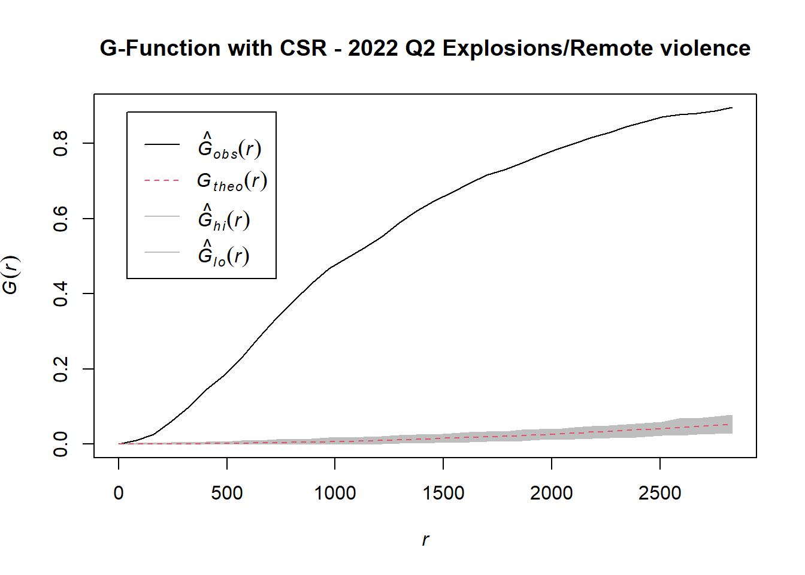
g_func <- Gest(my_2022_Q2_SD_quarter_data_regions_ppp, correction="border")
plot(g_func, main="G-Function - 2022 Q2 Strategic developments ")
G_CK.csr <- envelope(my_2022_Q2_SD_quarter_data_regions_ppp, Gest, nsim = 99, correction="all", parallel = parallel::detectCores())Generating 99 simulations of CSR ...
1, 2, [3:30 remaining] 3,
[3:28 remaining] 4, [3:24 remaining] 5, [3:22 remaining] 6,
[3:21 remaining] 7, [3:24 remaining] 8, [3:21 remaining] 9,
[3:17 remaining] 10, [3:14 remaining] 11, [3:13 remaining] 12,
[3:10 remaining] 13, [3:07 remaining] 14, [3:05 remaining] 15,
[3:02 remaining] 16, [3:00 remaining] 17, [2:57 remaining] 18,
[2:56 remaining] 19, [2:54 remaining] 20, [2:51 remaining] 21,
[2:49 remaining] 22, [2:47 remaining] 23, [2:45 remaining] 24,
[2:43 remaining] 25, [2:40 remaining] 26, [2:38 remaining] 27,
[2:36 remaining] 28, [2:34 remaining] 29, [2:32 remaining] 30,
[2:30 remaining] 31, [2:28 remaining] 32, [2:25 remaining] 33,
[2:23 remaining] 34, [2:21 remaining] 35, [2:18 remaining] 36,
[2:16 remaining] 37, [2:14 remaining] 38, [2:12 remaining] 39,
[2:10 remaining] 40, [2:08 remaining] 41, [2:06 remaining] 42,
[2:05 remaining] 43, [2:05 remaining] 44, [2:03 remaining] 45,
[2:01 remaining] 46, [1:59 remaining] 47, [1:57 remaining] 48,
[1:55 remaining] 49, [1:53 remaining] 50, [1:52 remaining] 51,
[1:52 remaining] 52, [1:51 remaining] 53, [1:49 remaining] 54,
[1:48 remaining] 55, [1:46 remaining] 56, [1:44 remaining] 57,
[1:42 remaining] 58, [1:41 remaining] 59, [1:39 remaining] 60,
[1:37 remaining] 61, [1:35 remaining] 62, [1:33 remaining] 63,
[1:31 remaining] 64, [1:28 remaining] 65, [1:26 remaining] 66,
[1:24 remaining] 67, [1:22 remaining] 68, [1:21 remaining] 69,
[1:20 remaining] 70, [1:18 remaining] 71, [1:16 remaining] 72,
[1:13 remaining] 73, [1:11 remaining] 74, [1:10 remaining] 75,
[1:07 remaining] 76, [1:05 remaining] 77, [1:02 remaining] 78,
[1:00 remaining] 79, [57 sec remaining] 80, [54 sec remaining] 81,
[52 sec remaining] 82, [49 sec remaining] 83, [46 sec remaining] 84,
[43 sec remaining] 85, [40 sec remaining] 86, [37 sec remaining] 87,
[35 sec remaining] 88, [32 sec remaining] 89, [29 sec remaining] 90,
[26 sec remaining] 91, [23 sec remaining] 92, [21 sec remaining] 93,
[18 sec remaining] 94, [15 sec remaining] 95, [12 sec remaining] 96,
[9 sec remaining] 97, [6 sec remaining] 98, [3 sec remaining]
99.
Done.plot(G_CK.csr, main = "G-Function with CSR - 2022 Q2 Strategic developments")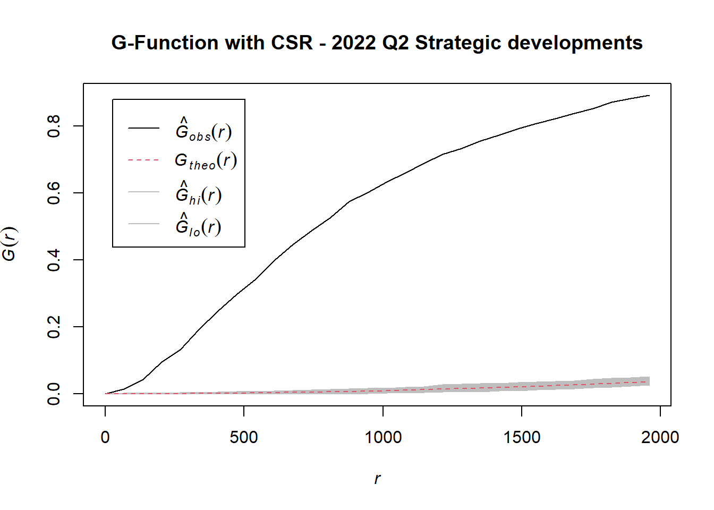
g_func <- Gest(my_2022_Q2_B_quarter_data_regions_ppp, correction="border")
plot(g_func, main="G-Function - 2022 Q2 Battles ")
G_CK.csr <- envelope(my_2022_Q2_B_quarter_data_regions_ppp, Gest, nsim = 99, correction="all", parallel = parallel::detectCores())Generating 99 simulations of CSR ...
1, 2, [5:34 remaining] 3,
[5:32 remaining] 4, [5:15 remaining] 5, [5:15 remaining] 6,
[5:13 remaining] 7, [5:06 remaining] 8, [4:55 remaining] 9,
[4:51 remaining] 10, [4:58 remaining] 11, [4:56 remaining] 12,
[4:50 remaining] 13, [4:53 remaining] 14, [4:52 remaining] 15,
[4:48 remaining] 16, [4:45 remaining] 17, [4:39 remaining] 18,
[4:38 remaining] 19, [4:33 remaining] 20, [4:27 remaining] 21,
[4:23 remaining] 22, [4:18 remaining] 23, [4:13 remaining] 24,
[4:08 remaining] 25, [4:04 remaining] 26, [3:59 remaining] 27,
[3:55 remaining] 28, [3:51 remaining] 29, [3:47 remaining] 30,
[3:43 remaining] 31, [3:39 remaining] 32, [3:35 remaining] 33,
[3:31 remaining] 34, [3:27 remaining] 35, [3:24 remaining] 36,
[3:20 remaining] 37, [3:17 remaining] 38, [3:13 remaining] 39,
[3:10 remaining] 40, [3:06 remaining] 41, [3:03 remaining] 42,
[3:00 remaining] 43, [2:57 remaining] 44, [2:54 remaining] 45,
[2:51 remaining] 46, [2:47 remaining] 47, [2:45 remaining] 48,
[2:42 remaining] 49, [2:39 remaining] 50, [2:38 remaining] 51,
[2:36 remaining] 52, [2:34 remaining] 53, [2:30 remaining] 54,
[2:27 remaining] 55, [2:25 remaining] 56, [2:23 remaining] 57,
[2:20 remaining] 58, [2:17 remaining] 59, [2:14 remaining] 60,
[2:12 remaining] 61, [2:08 remaining] 62, [2:05 remaining] 63,
[2:02 remaining] 64, [1:59 remaining] 65, [1:56 remaining] 66,
[1:53 remaining] 67, [1:50 remaining] 68, [1:47 remaining] 69,
[1:43 remaining] 70, [1:40 remaining] 71, [1:37 remaining] 72,
[1:34 remaining] 73, [1:30 remaining] 74, [1:27 remaining] 75,
[1:23 remaining] 76, [1:20 remaining] 77, [1:16 remaining] 78,
[1:13 remaining] 79, [1:09 remaining] 80, [1:06 remaining] 81,
[1:02 remaining] 82, [59 sec remaining] 83, [55 sec remaining] 84,
[52 sec remaining] 85, [48 sec remaining] 86, [45 sec remaining] 87,
[42 sec remaining] 88, [38 sec remaining] 89, [35 sec remaining] 90,
[31 sec remaining] 91, [28 sec remaining] 92, [24 sec remaining] 93,
[21 sec remaining] 94, [17 sec remaining] 95, [14 sec remaining] 96,
[10 sec remaining] 97, [7 sec remaining] 98, [3 sec remaining]
99.
Done.plot(G_CK.csr, main = "G-Function with CSR - 2022 Q2 Battles")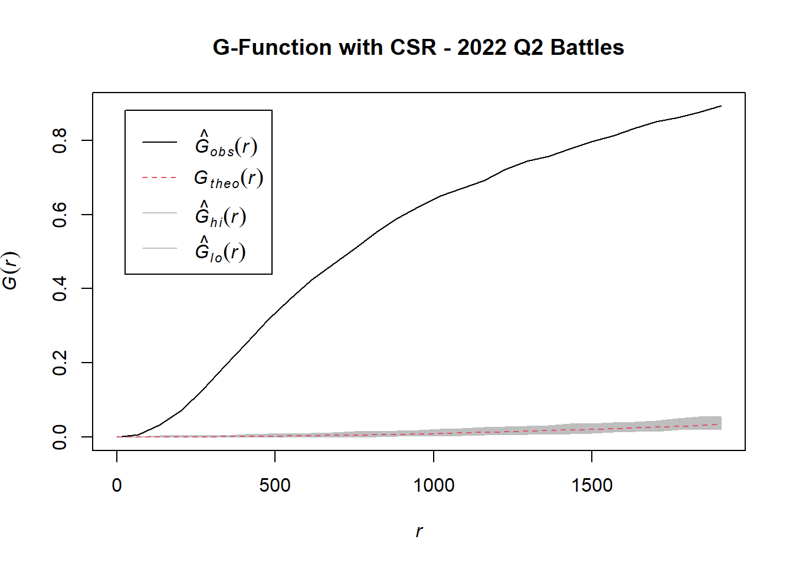
g_func <- Gest(my_2022_Q2_VAC_quarter_data_regions_ppp, correction="border")
plot(g_func, main="G-Function - 2022 Q2 Violence against civilians")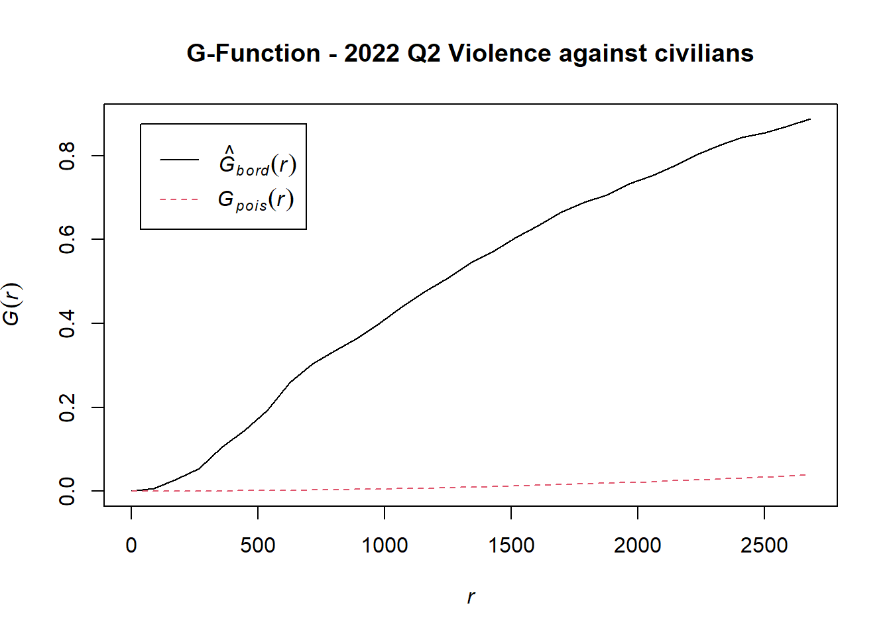
G_CK.csr <- envelope(my_2022_Q2_VAC_quarter_data_regions_ppp, Gest, nsim = 99, correction="all", parallel = parallel::detectCores())Generating 99 simulations of CSR ...
1, 2, [5:02 remaining] 3,
[4:23 remaining] 4, [4:14 remaining] 5, [4:07 remaining] 6,
[4:06 remaining] 7, [4:07 remaining] 8, [3:58 remaining] 9,
[3:57 remaining] 10, [3:55 remaining] 11, [3:52 remaining] 12,
[3:47 remaining] 13, [3:42 remaining] 14, [3:40 remaining] 15,
[3:35 remaining] 16, [3:35 remaining] 17, [3:36 remaining] 18,
[3:40 remaining] 19, [3:40 remaining] 20, [3:37 remaining] 21,
[3:34 remaining] 22, [3:33 remaining] 23, [3:31 remaining] 24,
[3:30 remaining] 25, [3:31 remaining] 26, [3:26 remaining] 27,
[3:22 remaining] 28, [3:18 remaining] 29, [3:13 remaining] 30,
[3:10 remaining] 31, [3:06 remaining] 32, [3:01 remaining] 33,
[2:57 remaining] 34, [2:54 remaining] 35, [2:51 remaining] 36,
[2:47 remaining] 37, [2:44 remaining] 38, [2:43 remaining] 39,
[2:39 remaining] 40, [2:36 remaining] 41, [2:32 remaining] 42,
[2:29 remaining] 43, [2:26 remaining] 44, [2:23 remaining] 45,
[2:20 remaining] 46, [2:17 remaining] 47, [2:14 remaining] 48,
[2:11 remaining] 49, [2:08 remaining] 50, [2:05 remaining] 51,
[2:02 remaining] 52, [1:59 remaining] 53, [1:56 remaining] 54,
[1:54 remaining] 55, [1:51 remaining] 56, [1:48 remaining] 57,
[1:45 remaining] 58, [1:43 remaining] 59, [1:40 remaining] 60,
[1:38 remaining] 61, [1:35 remaining] 62, [1:32 remaining] 63,
[1:30 remaining] 64, [1:27 remaining] 65, [1:24 remaining] 66,
[1:22 remaining] 67, [1:19 remaining] 68, [1:17 remaining] 69,
[1:14 remaining] 70, [1:12 remaining] 71, [1:09 remaining] 72,
[1:07 remaining] 73, [1:04 remaining] 74, [1:02 remaining] 75,
[59 sec remaining] 76, [57 sec remaining] 77, [54 sec remaining] 78,
[52 sec remaining] 79, [49 sec remaining] 80, [47 sec remaining] 81,
[45 sec remaining] 82, [42 sec remaining] 83, [40 sec remaining] 84,
[37 sec remaining] 85, [35 sec remaining] 86, [32 sec remaining] 87,
[30 sec remaining] 88, [27 sec remaining] 89, [25 sec remaining] 90,
[22 sec remaining] 91, [20 sec remaining] 92, [17 sec remaining] 93,
[15 sec remaining] 94, [12 sec remaining] 95, [10 sec remaining] 96,
[7 sec remaining] 97, [5 sec remaining] 98, [2 sec remaining]
99.
Done.plot(G_CK.csr, main = "G-Function with CSR - 2022 Q2 Violence Against Civilians")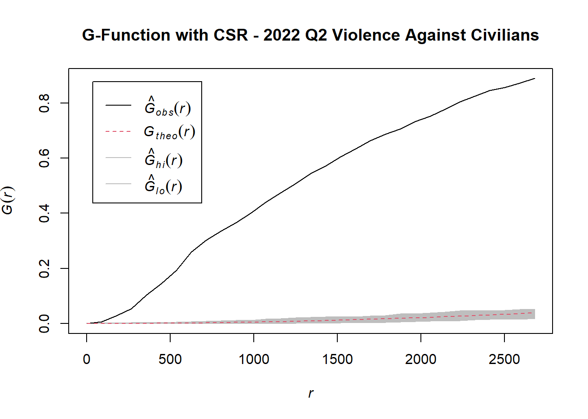
Quarter 3
g_func <- Gest(my_2022_Q3_ER_quarter_data_regions_ppp, correction="border")
plot(g_func, main="G-Function - 2022 Q3 Explosions/Remote violence")
G_CK.csr <- envelope(my_2022_Q3_ER_quarter_data_regions_ppp, Gest, nsim = 99, correction="all", parallel = parallel::detectCores())Generating 99 simulations of CSR ...
1, 2, [3:41 remaining] 3,
[3:39 remaining] 4, [3:37 remaining] 5, [3:38 remaining] 6,
[3:38 remaining] 7, [3:35 remaining] 8, [3:35 remaining] 9,
[3:30 remaining] 10, [3:28 remaining] 11, [3:24 remaining] 12,
[3:21 remaining] 13, [3:18 remaining] 14, [3:15 remaining] 15,
[3:11 remaining] 16, [3:09 remaining] 17, [3:07 remaining] 18,
[3:04 remaining] 19, [3:01 remaining] 20, [2:59 remaining] 21,
[2:58 remaining] 22, [2:56 remaining] 23, [2:56 remaining] 24,
[2:55 remaining] 25, [2:53 remaining] 26, [2:54 remaining] 27,
[2:52 remaining] 28, [2:48 remaining] 29, [2:45 remaining] 30,
[2:41 remaining] 31, [2:37 remaining] 32, [2:34 remaining] 33,
[2:31 remaining] 34, [2:28 remaining] 35, [2:25 remaining] 36,
[2:23 remaining] 37, [2:20 remaining] 38, [2:18 remaining] 39,
[2:16 remaining] 40, [2:14 remaining] 41, [2:11 remaining] 42,
[2:09 remaining] 43, [2:07 remaining] 44, [2:05 remaining] 45,
[2:02 remaining] 46, [2:00 remaining] 47, [1:58 remaining] 48,
[1:56 remaining] 49, [1:53 remaining] 50, [1:51 remaining] 51,
[1:49 remaining] 52, [1:46 remaining] 53, [1:44 remaining] 54,
[1:42 remaining] 55, [1:40 remaining] 56, [1:37 remaining] 57,
[1:35 remaining] 58, [1:33 remaining] 59, [1:31 remaining] 60,
[1:28 remaining] 61, [1:26 remaining] 62, [1:24 remaining] 63,
[1:22 remaining] 64, [1:20 remaining] 65, [1:17 remaining] 66,
[1:15 remaining] 67, [1:13 remaining] 68, [1:11 remaining] 69,
[1:09 remaining] 70, [1:06 remaining] 71, [1:05 remaining] 72,
[1:03 remaining] 73, [1:01 remaining] 74, [59 sec remaining] 75,
[56 sec remaining] 76, [54 sec remaining] 77, [52 sec remaining] 78,
[50 sec remaining] 79, [48 sec remaining] 80, [45 sec remaining] 81,
[43 sec remaining] 82, [41 sec remaining] 83, [38 sec remaining] 84,
[36 sec remaining] 85, [34 sec remaining] 86, [31 sec remaining] 87,
[29 sec remaining] 88, [27 sec remaining] 89, [24 sec remaining] 90,
[22 sec remaining] 91, [19 sec remaining] 92, [17 sec remaining] 93,
[15 sec remaining] 94, [12 sec remaining] 95, [10 sec remaining] 96,
[8 sec remaining] 97, [5 sec remaining] 98, [3 sec remaining]
99.
Done.plot(G_CK.csr, main = "G-Function with CSR - 2022 Q3 Explosions/Remote violence")
g_func <- Gest(my_2022_Q3_SD_quarter_data_regions_ppp, correction="border")
plot(g_func, main="G-Function - 2022 Q3 Strategic developments ")
G_CK.csr <- envelope(my_2022_Q3_SD_quarter_data_regions_ppp, Gest, nsim = 99, correction="all", parallel = parallel::detectCores())Generating 99 simulations of CSR ...
1, 2, [5:18 remaining] 3,
[5:20 remaining] 4, [5:39 remaining] 5, [5:33 remaining] 6,
[5:20 remaining] 7, [5:16 remaining] 8, [5:16 remaining] 9,
[5:07 remaining] 10, [5:00 remaining] 11, [4:57 remaining] 12,
[4:52 remaining] 13, [4:46 remaining] 14, [4:39 remaining] 15,
[4:34 remaining] 16, [4:29 remaining] 17, [4:24 remaining] 18,
[4:20 remaining] 19, [4:18 remaining] 20, [4:13 remaining] 21,
[4:09 remaining] 22, [4:06 remaining] 23, [4:02 remaining] 24,
[3:58 remaining] 25, [3:55 remaining] 26, [3:52 remaining] 27,
[3:49 remaining] 28, [3:45 remaining] 29, [3:42 remaining] 30,
[3:38 remaining] 31, [3:35 remaining] 32, [3:31 remaining] 33,
[3:27 remaining] 34, [3:23 remaining] 35, [3:20 remaining] 36,
[3:16 remaining] 37, [3:12 remaining] 38, [3:09 remaining] 39,
[3:05 remaining] 40, [3:02 remaining] 41, [2:59 remaining] 42,
[2:55 remaining] 43, [2:52 remaining] 44, [2:49 remaining] 45,
[2:45 remaining] 46, [2:42 remaining] 47, [2:39 remaining] 48,
[2:36 remaining] 49, [2:32 remaining] 50, [2:29 remaining] 51,
[2:26 remaining] 52, [2:23 remaining] 53, [2:20 remaining] 54,
[2:16 remaining] 55, [2:13 remaining] 56, [2:10 remaining] 57,
[2:07 remaining] 58, [2:03 remaining] 59, [2:00 remaining] 60,
[1:57 remaining] 61, [1:54 remaining] 62, [1:51 remaining] 63,
[1:48 remaining] 64, [1:45 remaining] 65, [1:42 remaining] 66,
[1:39 remaining] 67, [1:36 remaining] 68, [1:33 remaining] 69,
[1:30 remaining] 70, [1:27 remaining] 71, [1:24 remaining] 72,
[1:21 remaining] 73, [1:18 remaining] 74, [1:15 remaining] 75,
[1:12 remaining] 76, [1:09 remaining] 77, [1:06 remaining] 78,
[1:03 remaining] 79, [1:00 remaining] 80, [57 sec remaining] 81,
[54 sec remaining] 82, [51 sec remaining] 83, [48 sec remaining] 84,
[45 sec remaining] 85, [42 sec remaining] 86, [39 sec remaining] 87,
[36 sec remaining] 88, [33 sec remaining] 89, [30 sec remaining] 90,
[27 sec remaining] 91, [24 sec remaining] 92, [21 sec remaining] 93,
[18 sec remaining] 94, [15 sec remaining] 95, [12 sec remaining] 96,
[9 sec remaining] 97, [6 sec remaining] 98, [3 sec remaining]
99.
Done.plot(G_CK.csr, main = "G-Function with CSR - 2022 Q3 Strategic developments")
g_func <- Gest(my_2022_Q3_B_quarter_data_regions_ppp, correction="border")
plot(g_func, main="G-Function - 2022 Q3 Battles ")
G_CK.csr <- envelope(my_2022_Q3_B_quarter_data_regions_ppp, Gest, nsim = 99, correction="all", parallel = parallel::detectCores())Generating 99 simulations of CSR ...
1, 2, [4:20 remaining] 3,
[4:24 remaining] 4, [4:25 remaining] 5, [4:25 remaining] 6,
[4:23 remaining] 7, [4:21 remaining] 8, [4:17 remaining] 9,
[4:16 remaining] 10, [4:12 remaining] 11, [4:09 remaining] 12,
[4:06 remaining] 13, [4:02 remaining] 14, [3:57 remaining] 15,
[3:55 remaining] 16, [3:52 remaining] 17, [3:49 remaining] 18,
[3:46 remaining] 19, [3:43 remaining] 20, [3:41 remaining] 21,
[3:39 remaining] 22, [3:36 remaining] 23, [3:33 remaining] 24,
[3:30 remaining] 25, [3:28 remaining] 26, [3:26 remaining] 27,
[3:23 remaining] 28, [3:20 remaining] 29, [3:17 remaining] 30,
[3:14 remaining] 31, [3:11 remaining] 32, [3:09 remaining] 33,
[3:06 remaining] 34, [3:03 remaining] 35, [3:00 remaining] 36,
[2:57 remaining] 37, [2:55 remaining] 38, [2:52 remaining] 39,
[2:49 remaining] 40, [2:47 remaining] 41, [2:44 remaining] 42,
[2:41 remaining] 43, [2:38 remaining] 44, [2:35 remaining] 45,
[2:32 remaining] 46, [2:29 remaining] 47, [2:26 remaining] 48,
[2:24 remaining] 49, [2:21 remaining] 50, [2:18 remaining] 51,
[2:15 remaining] 52, [2:12 remaining] 53, [2:09 remaining] 54,
[2:07 remaining] 55, [2:04 remaining] 56, [2:01 remaining] 57,
[1:58 remaining] 58, [1:55 remaining] 59, [1:52 remaining] 60,
[1:49 remaining] 61, [1:47 remaining] 62, [1:44 remaining] 63,
[1:41 remaining] 64, [1:38 remaining] 65, [1:35 remaining] 66,
[1:32 remaining] 67, [1:30 remaining] 68, [1:27 remaining] 69,
[1:24 remaining] 70, [1:21 remaining] 71, [1:18 remaining] 72,
[1:15 remaining] 73, [1:13 remaining] 74, [1:10 remaining] 75,
[1:07 remaining] 76, [1:04 remaining] 77, [1:01 remaining] 78,
[58 sec remaining] 79, [56 sec remaining] 80, [53 sec remaining] 81,
[50 sec remaining] 82, [47 sec remaining] 83, [44 sec remaining] 84,
[42 sec remaining] 85, [39 sec remaining] 86, [36 sec remaining] 87,
[33 sec remaining] 88, [30 sec remaining] 89, [28 sec remaining] 90,
[25 sec remaining] 91, [22 sec remaining] 92, [19 sec remaining] 93,
[17 sec remaining] 94, [14 sec remaining] 95, [11 sec remaining] 96,
[8 sec remaining] 97, [6 sec remaining] 98, [3 sec remaining]
99.
Done.plot(G_CK.csr, main = "G-Function with CSR - 2022 Q3 Battles")
g_func <- Gest(my_2022_Q3_VAC_quarter_data_regions_ppp, correction="border")
plot(g_func, main="G-Function - 2022 Q3 Violence against civilians")
G_CK.csr <- envelope(my_2022_Q3_VAC_quarter_data_regions_ppp, Gest, nsim = 99, correction="all", parallel = parallel::detectCores())Generating 99 simulations of CSR ...
1, 2, 3, 4, 5, 6, 7, 8, 9, 10, 11, 12, 13, 14, 15, 16, 17, 18, 19, 20,
21, 22, 23, 24, 25, 26, 27, 28, 29, 30, 31, 32, 33, 34, 35, 36, 37, 38, 39, 40,
41, 42, 43, 44, 45, 46, 47, 48, 49, 50, 51, 52, 53, 54, 55, 56, 57, 58, 59, 60,
61, 62, 63, 64, 65, 66, 67, 68, 69, 70, 71, 72, 73, 74, 75, 76, 77, 78, 79, 80,
81, 82, 83, 84, 85, 86, 87, 88, 89, 90, 91, 92, 93, 94, 95, 96, 97, 98,
99.
Done.plot(G_CK.csr, main = "G-Function with CSR - 2022 Q3 Violence Against Civilians")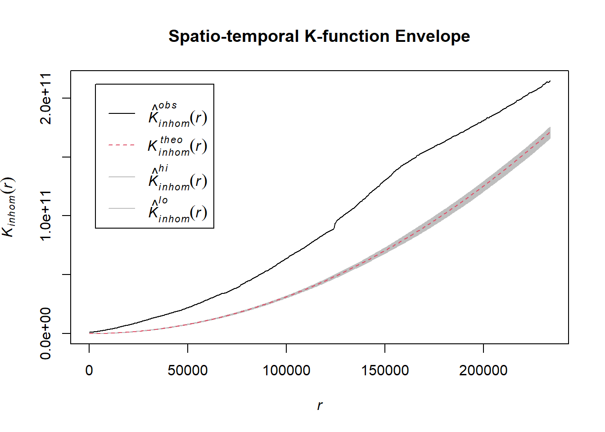
Quarter 4
g_func <- Gest(my_2022_Q4_ER_quarter_data_regions_ppp, correction="border")
plot(g_func, main="G-Function - 2022 Q4 Explosions/Remote violence")
G_CK.csr <- envelope(my_2022_Q4_ER_quarter_data_regions_ppp, Gest, nsim = 99, correction="all", parallel = parallel::detectCores())Generating 99 simulations of CSR ...
1, 2, [3:44 remaining] 3,
[3:46 remaining] 4, [3:57 remaining] 5, [3:51 remaining] 6,
[3:50 remaining] 7, [3:44 remaining] 8, [3:41 remaining] 9,
[3:38 remaining] 10, [3:34 remaining] 11, [3:31 remaining] 12,
[3:28 remaining] 13, [3:26 remaining] 14, [3:23 remaining] 15,
[3:21 remaining] 16, [3:18 remaining] 17, [3:17 remaining] 18,
[3:14 remaining] 19, [3:11 remaining] 20, [3:08 remaining] 21,
[3:06 remaining] 22, [3:03 remaining] 23, [3:01 remaining] 24,
[2:58 remaining] 25, [2:56 remaining] 26, [2:56 remaining] 27,
[2:57 remaining] 28, [2:55 remaining] 29, [2:58 remaining] 30,
[3:02 remaining] 31, [3:03 remaining] 32, [3:05 remaining] 33,
[3:07 remaining] 34, [3:09 remaining] 35, [3:10 remaining] 36,
[3:09 remaining] 37, [3:06 remaining] 38, [3:03 remaining] 39,
[3:01 remaining] 40, [2:59 remaining] 41, [2:58 remaining] 42,
[3:01 remaining] 43, [3:04 remaining] 44, [3:01 remaining] 45,
[2:57 remaining] 46, [2:53 remaining] 47, [2:49 remaining] 48,
[2:46 remaining] 49, [2:43 remaining] 50, [2:42 remaining] 51,
[2:38 remaining] 52, [2:35 remaining] 53, [2:31 remaining] 54,
[2:28 remaining] 55, [2:26 remaining] 56, [2:22 remaining] 57,
[2:19 remaining] 58, [2:15 remaining] 59, [2:12 remaining] 60,
[2:09 remaining] 61, [2:06 remaining] 62, [2:02 remaining] 63,
[1:59 remaining] 64, [1:55 remaining] 65, [1:51 remaining] 66,
[1:48 remaining] 67, [1:44 remaining] 68, [1:41 remaining] 69,
[1:37 remaining] 70, [1:33 remaining] 71, [1:30 remaining] 72,
[1:27 remaining] 73, [1:23 remaining] 74, [1:20 remaining] 75,
[1:16 remaining] 76, [1:13 remaining] 77, [1:10 remaining] 78,
[1:06 remaining] 79, [1:03 remaining] 80, [1:00 remaining] 81,
[57 sec remaining] 82, [54 sec remaining] 83, [51 sec remaining] 84,
[48 sec remaining] 85, [44 sec remaining] 86, [41 sec remaining] 87,
[38 sec remaining] 88, [35 sec remaining] 89, [32 sec remaining] 90,
[28 sec remaining] 91, [25 sec remaining] 92, [22 sec remaining] 93,
[19 sec remaining] 94, [16 sec remaining] 95, [13 sec remaining] 96,
[9 sec remaining] 97, [6 sec remaining] 98, [3 sec remaining]
99.
Done.plot(G_CK.csr, main = "G-Function with CSR - 2022 Q4 Explosions/Remote violence")g_func <- Gest(my_2022_Q4_SD_quarter_data_regions_ppp, correction="border")
plot(g_func, main="G-Function - 2022 Q4 Strategic developments ")
G_CK.csr <- envelope(my_2022_Q4_SD_quarter_data_regions_ppp, Gest, nsim = 99, correction="all", parallel = parallel::detectCores())Generating 99 simulations of CSR ...
1, 2, [4:49 remaining] 3,
[5:54 remaining] 4, [5:49 remaining] 5, [5:30 remaining] 6,
[5:17 remaining] 7, [5:08 remaining] 8, [4:58 remaining] 9,
[4:53 remaining] 10, [4:47 remaining] 11, [4:50 remaining] 12,
[4:45 remaining] 13, [4:39 remaining] 14, [4:34 remaining] 15,
[4:37 remaining] 16, [4:35 remaining] 17, [4:28 remaining] 18,
[4:23 remaining] 19, [4:18 remaining] 20, [4:14 remaining] 21,
[4:09 remaining] 22, [4:05 remaining] 23, [4:00 remaining] 24,
[3:56 remaining] 25, [3:52 remaining] 26, [3:48 remaining] 27,
[3:46 remaining] 28, [3:41 remaining] 29, [3:37 remaining] 30,
[3:34 remaining] 31, [3:33 remaining] 32, [3:30 remaining] 33,
[3:26 remaining] 34, [3:23 remaining] 35, [3:19 remaining] 36,
[3:16 remaining] 37, [3:13 remaining] 38, [3:09 remaining] 39,
[3:06 remaining] 40, [3:03 remaining] 41, [3:00 remaining] 42,
[2:57 remaining] 43, [2:54 remaining] 44, [2:51 remaining] 45,
[2:47 remaining] 46, [2:44 remaining] 47, [2:41 remaining] 48,
[2:37 remaining] 49, [2:34 remaining] 50, [2:31 remaining] 51,
[2:28 remaining] 52, [2:25 remaining] 53, [2:22 remaining] 54,
[2:19 remaining] 55, [2:15 remaining] 56, [2:12 remaining] 57,
[2:09 remaining] 58, [2:06 remaining] 59, [2:03 remaining] 60,
[2:00 remaining] 61, [1:57 remaining] 62, [1:54 remaining] 63,
[1:50 remaining] 64, [1:47 remaining] 65, [1:44 remaining] 66,
[1:41 remaining] 67, [1:38 remaining] 68, [1:35 remaining] 69,
[1:32 remaining] 70, [1:29 remaining] 71, [1:26 remaining] 72,
[1:23 remaining] 73, [1:19 remaining] 74, [1:16 remaining] 75,
[1:13 remaining] 76, [1:10 remaining] 77, [1:07 remaining] 78,
[1:04 remaining] 79, [1:01 remaining] 80, [58 sec remaining] 81,
[55 sec remaining] 82, [52 sec remaining] 83, [49 sec remaining] 84,
[46 sec remaining] 85, [43 sec remaining] 86, [40 sec remaining] 87,
[37 sec remaining] 88, [34 sec remaining] 89, [31 sec remaining] 90,
[28 sec remaining] 91, [25 sec remaining] 92, [21 sec remaining] 93,
[18 sec remaining] 94, [15 sec remaining] 95, [12 sec remaining] 96,
[9 sec remaining] 97, [6 sec remaining] 98, [3 sec remaining]
99.
Done.plot(G_CK.csr, main = "G-Function with CSR - 2022 Q4 Strategic developments")
g_func <- Gest(my_2022_Q4_B_quarter_data_regions_ppp, correction="border")
plot(g_func, main="G-Function - 2022 Q4 Battles ")
G_CK.csr <- envelope(my_2022_Q4_B_quarter_data_regions_ppp, Gest, nsim = 99, correction="all", parallel = parallel::detectCores())Generating 99 simulations of CSR ...
1, 2, [3:36 remaining] 3,
[3:48 remaining] 4, [3:40 remaining] 5, [3:36 remaining] 6,
[3:32 remaining] 7, [3:31 remaining] 8, [3:26 remaining] 9,
[3:24 remaining] 10, [3:22 remaining] 11, [3:19 remaining] 12,
[3:18 remaining] 13, [3:19 remaining] 14, [3:23 remaining] 15,
[3:25 remaining] 16, [3:27 remaining] 17, [3:28 remaining] 18,
[3:28 remaining] 19, [3:27 remaining] 20, [3:26 remaining] 21,
[3:24 remaining] 22, [3:24 remaining] 23, [3:26 remaining] 24,
[3:27 remaining] 25, [3:28 remaining] 26, [3:28 remaining] 27,
[3:32 remaining] 28, [3:33 remaining] 29, [3:31 remaining] 30,
[3:29 remaining] 31, [3:27 remaining] 32, [3:26 remaining] 33,
[3:24 remaining] 34, [3:23 remaining] 35, [3:20 remaining] 36,
[3:17 remaining] 37, [3:13 remaining] 38, [3:10 remaining] 39,
[3:06 remaining] 40, [3:03 remaining] 41, [2:59 remaining] 42,
[2:56 remaining] 43, [2:53 remaining] 44, [2:50 remaining] 45,
[2:50 remaining] 46, [2:49 remaining] 47, [2:49 remaining] 48,
[2:48 remaining] 49, [2:46 remaining] 50, [2:45 remaining] 51,
[2:42 remaining] 52, [2:39 remaining] 53, [2:38 remaining] 54,
[2:35 remaining] 55, [2:31 remaining] 56, [2:27 remaining] 57,
[2:23 remaining] 58, [2:20 remaining] 59, [2:16 remaining] 60,
[2:12 remaining] 61, [2:09 remaining] 62, [2:05 remaining] 63,
[2:02 remaining] 64, [1:58 remaining] 65, [1:54 remaining] 66,
[1:51 remaining] 67, [1:47 remaining] 68, [1:44 remaining] 69,
[1:41 remaining] 70, [1:37 remaining] 71, [1:34 remaining] 72,
[1:30 remaining] 73, [1:27 remaining] 74, [1:24 remaining] 75,
[1:20 remaining] 76, [1:17 remaining] 77, [1:13 remaining] 78,
[1:10 remaining] 79, [1:06 remaining] 80, [1:03 remaining] 81,
[1:00 remaining] 82, [56 sec remaining] 83, [53 sec remaining] 84,
[49 sec remaining] 85, [46 sec remaining] 86, [43 sec remaining] 87,
[39 sec remaining] 88, [36 sec remaining] 89, [33 sec remaining] 90,
[29 sec remaining] 91, [26 sec remaining] 92, [23 sec remaining] 93,
[19 sec remaining] 94, [16 sec remaining] 95, [13 sec remaining] 96,
[10 sec remaining] 97, [6 sec remaining] 98, [3 sec remaining]
99.
Done.plot(G_CK.csr, main = "G-Function with CSR - 2022 Q4 Battles")
g_func <- Gest(my_2022_Q4_VAC_quarter_data_regions_ppp, correction="border")
plot(g_func, main="G-Function - 2022 Q4 Violence against civilians")
G_CK.csr <- envelope(my_2022_Q4_VAC_quarter_data_regions_ppp, Gest, nsim = 99, correction="all", parallel = parallel::detectCores())Generating 99 simulations of CSR ...
1, 2, [3:10 remaining] 3,
[3:10 remaining] 4, [3:10 remaining] 5, [3:04 remaining] 6,
[3:01 remaining] 7, [3:00 remaining] 8, [2:58 remaining] 9,
[2:58 remaining] 10, [2:54 remaining] 11, [2:51 remaining] 12,
[2:49 remaining] 13, [2:47 remaining] 14, [2:46 remaining] 15,
[2:44 remaining] 16, [2:40 remaining] 17, [2:37 remaining] 18,
[2:35 remaining] 19, [2:34 remaining] 20, [2:32 remaining] 21,
[2:29 remaining] 22, [2:27 remaining] 23, [2:25 remaining] 24,
[2:24 remaining] 25, [2:21 remaining] 26, [2:20 remaining] 27,
[2:18 remaining] 28, [2:16 remaining] 29, [2:14 remaining] 30,
[2:12 remaining] 31, [2:10 remaining] 32, [2:08 remaining] 33,
[2:05 remaining] 34, [2:04 remaining] 35, [2:02 remaining] 36,
[2:00 remaining] 37, [1:58 remaining] 38, [1:56 remaining] 39,
[1:54 remaining] 40, [1:52 remaining] 41, [1:50 remaining] 42,
[1:48 remaining] 43, [1:46 remaining] 44, [1:44 remaining] 45,
[1:42 remaining] 46, [1:40 remaining] 47, [1:38 remaining] 48,
[1:37 remaining] 49, [1:35 remaining] 50, [1:33 remaining] 51,
[1:31 remaining] 52, [1:29 remaining] 53, [1:27 remaining] 54,
[1:25 remaining] 55, [1:23 remaining] 56, [1:21 remaining] 57,
[1:20 remaining] 58, [1:18 remaining] 59, [1:16 remaining] 60,
[1:14 remaining] 61, [1:12 remaining] 62, [1:10 remaining] 63,
[1:08 remaining] 64, [1:06 remaining] 65, [1:05 remaining] 66,
[1:03 remaining] 67, [1:01 remaining] 68, [59 sec remaining] 69,
[57 sec remaining] 70, [55 sec remaining] 71, [53 sec remaining] 72,
[51 sec remaining] 73, [49 sec remaining] 74, [47 sec remaining] 75,
[46 sec remaining] 76, [44 sec remaining] 77, [42 sec remaining] 78,
[40 sec remaining] 79, [38 sec remaining] 80, [36 sec remaining] 81,
[34 sec remaining] 82, [32 sec remaining] 83, [30 sec remaining] 84,
[28 sec remaining] 85, [27 sec remaining] 86, [25 sec remaining] 87,
[23 sec remaining] 88, [21 sec remaining] 89, [19 sec remaining] 90,
[17 sec remaining] 91, [15 sec remaining] 92, [13 sec remaining] 93,
[11 sec remaining] 94, [10 sec remaining] 95, [8 sec remaining] 96,
[6 sec remaining] 97, [4 sec remaining] 98, [2 sec remaining]
99.
Done.plot(G_CK.csr, main = "G-Function with CSR - 2022 Q4 Violence Against Civilians")
Year 2023
Quarter 1
g_func <- Gest(my_2023_Q1_ER_quarter_data_regions_ppp, correction="border")
plot(g_func, main="G-Function - 2023 Q1 Explosions/Remote violence")
G_CK.csr <- envelope(my_2023_Q1_ER_quarter_data_regions_ppp, Gest, nsim = 99, correction="all", parallel = parallel::detectCores())Generating 99 simulations of CSR ...
1, 2, [4:17 remaining] 3,
[3:58 remaining] 4, [3:57 remaining] 5, [3:55 remaining] 6,
[4:00 remaining] 7, [3:56 remaining] 8, [3:53 remaining] 9,
[3:49 remaining] 10, [3:48 remaining] 11, [3:43 remaining] 12,
[3:41 remaining] 13, [3:37 remaining] 14, [3:36 remaining] 15,
[3:33 remaining] 16, [3:30 remaining] 17, [3:28 remaining] 18,
[3:27 remaining] 19, [3:24 remaining] 20, [3:21 remaining] 21,
[3:19 remaining] 22, [3:17 remaining] 23, [3:15 remaining] 24,
[3:12 remaining] 25, [3:09 remaining] 26, [3:07 remaining] 27,
[3:04 remaining] 28, [3:02 remaining] 29, [3:00 remaining] 30,
[2:58 remaining] 31, [2:55 remaining] 32, [2:52 remaining] 33,
[2:50 remaining] 34, [2:48 remaining] 35, [2:45 remaining] 36,
[2:43 remaining] 37, [2:40 remaining] 38, [2:39 remaining] 39,
[2:36 remaining] 40, [2:34 remaining] 41, [2:31 remaining] 42,
[2:29 remaining] 43, [2:26 remaining] 44, [2:23 remaining] 45,
[2:21 remaining] 46, [2:18 remaining] 47, [2:15 remaining] 48,
[2:13 remaining] 49, [2:10 remaining] 50, [2:08 remaining] 51,
[2:05 remaining] 52, [2:02 remaining] 53, [2:00 remaining] 54,
[1:57 remaining] 55, [1:55 remaining] 56, [1:52 remaining] 57,
[1:49 remaining] 58, [1:47 remaining] 59, [1:44 remaining] 60,
[1:42 remaining] 61, [1:39 remaining] 62, [1:36 remaining] 63,
[1:34 remaining] 64, [1:31 remaining] 65, [1:28 remaining] 66,
[1:26 remaining] 67, [1:23 remaining] 68, [1:20 remaining] 69,
[1:18 remaining] 70, [1:15 remaining] 71, [1:13 remaining] 72,
[1:10 remaining] 73, [1:07 remaining] 74, [1:05 remaining] 75,
[1:02 remaining] 76, [1:00 remaining] 77, [57 sec remaining] 78,
[54 sec remaining] 79, [52 sec remaining] 80, [49 sec remaining] 81,
[47 sec remaining] 82, [44 sec remaining] 83, [42 sec remaining] 84,
[39 sec remaining] 85, [36 sec remaining] 86, [34 sec remaining] 87,
[31 sec remaining] 88, [29 sec remaining] 89, [26 sec remaining] 90,
[23 sec remaining] 91, [21 sec remaining] 92, [18 sec remaining] 93,
[16 sec remaining] 94, [13 sec remaining] 95, [10 sec remaining] 96,
[8 sec remaining] 97, [5 sec remaining] 98, [3 sec remaining]
99.
Done.plot(G_CK.csr, main = "G-Function with CSR - 2023 Q1 Explosions/Remote violence")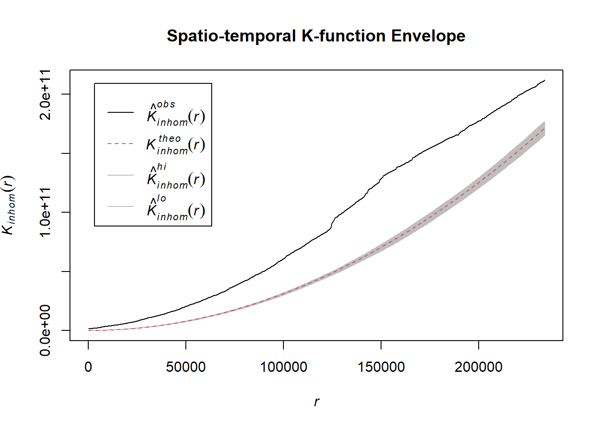
g_func <- Gest(my_2023_Q1_SD_quarter_data_regions_ppp, correction="border")
plot(g_func, main="G-Function - 2023 Q1 Strategic developments ")
G_CK.csr <- envelope(my_2023_Q1_SD_quarter_data_regions_ppp, Gest, nsim = 99, correction="all", parallel = parallel::detectCores())Generating 99 simulations of CSR ...
1, 2, [4:52 remaining] 3,
[4:50 remaining] 4, [5:20 remaining] 5, [5:05 remaining] 6,
[4:58 remaining] 7, [4:52 remaining] 8, [5:01 remaining] 9,
[4:59 remaining] 10, [4:53 remaining] 11, [4:45 remaining] 12,
[4:36 remaining] 13, [4:33 remaining] 14, [4:26 remaining] 15,
[4:22 remaining] 16, [4:18 remaining] 17, [4:14 remaining] 18,
[4:08 remaining] 19, [4:04 remaining] 20, [4:00 remaining] 21,
[3:57 remaining] 22, [3:53 remaining] 23, [3:49 remaining] 24,
[3:45 remaining] 25, [3:40 remaining] 26, [3:36 remaining] 27,
[3:33 remaining] 28, [3:29 remaining] 29, [3:25 remaining] 30,
[3:22 remaining] 31, [3:18 remaining] 32, [3:15 remaining] 33,
[3:11 remaining] 34, [3:08 remaining] 35, [3:04 remaining] 36,
[3:01 remaining] 37, [2:58 remaining] 38, [2:54 remaining] 39,
[2:51 remaining] 40, [2:48 remaining] 41, [2:45 remaining] 42,
[2:42 remaining] 43, [2:39 remaining] 44, [2:36 remaining] 45,
[2:33 remaining] 46, [2:29 remaining] 47, [2:27 remaining] 48,
[2:23 remaining] 49, [2:20 remaining] 50, [2:18 remaining] 51,
[2:15 remaining] 52, [2:11 remaining] 53, [2:09 remaining] 54,
[2:06 remaining] 55, [2:03 remaining] 56, [2:00 remaining] 57,
[1:57 remaining] 58, [1:54 remaining] 59, [1:51 remaining] 60,
[1:48 remaining] 61, [1:45 remaining] 62, [1:42 remaining] 63,
[1:40 remaining] 64, [1:37 remaining] 65, [1:34 remaining] 66,
[1:31 remaining] 67, [1:28 remaining] 68, [1:26 remaining] 69,
[1:23 remaining] 70, [1:20 remaining] 71, [1:17 remaining] 72,
[1:14 remaining] 73, [1:11 remaining] 74, [1:09 remaining] 75,
[1:06 remaining] 76, [1:03 remaining] 77, [1:00 remaining] 78,
[58 sec remaining] 79, [55 sec remaining] 80, [52 sec remaining] 81,
[49 sec remaining] 82, [47 sec remaining] 83, [44 sec remaining] 84,
[41 sec remaining] 85, [38 sec remaining] 86, [36 sec remaining] 87,
[33 sec remaining] 88, [30 sec remaining] 89, [27 sec remaining] 90,
[25 sec remaining] 91, [22 sec remaining] 92, [19 sec remaining] 93,
[16 sec remaining] 94, [14 sec remaining] 95, [11 sec remaining] 96,
[8 sec remaining] 97, [5 sec remaining] 98, [3 sec remaining]
99.
Done.plot(G_CK.csr, main = "G-Function with CSR - 2023 Q1 Strategic developments")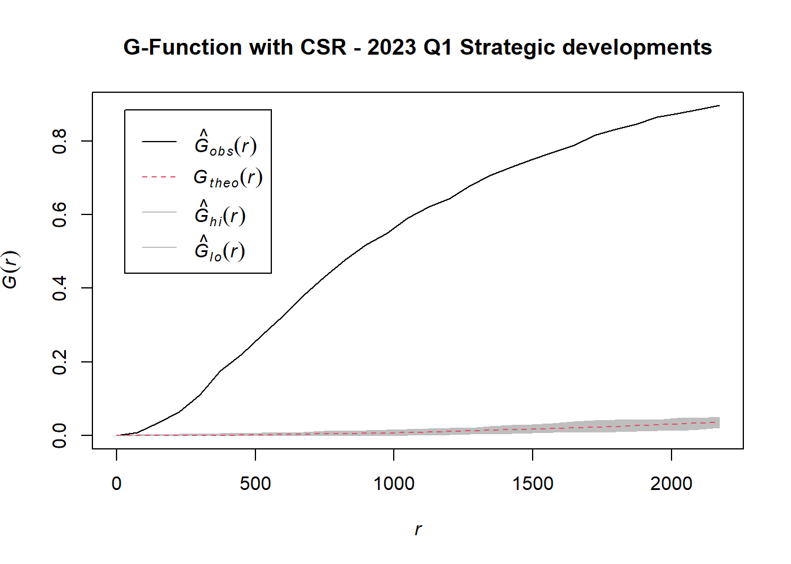
g_func <- Gest(my_2023_Q1_B_quarter_data_regions_ppp, correction="border")
plot(g_func, main="G-Function - 2023 Q1 Battles ")
G_CK.csr <- envelope(my_2023_Q1_B_quarter_data_regions_ppp, Gest, nsim = 99, correction="all", parallel = parallel::detectCores())Generating 99 simulations of CSR ...
1, 2, [4:32 remaining] 3,
[4:12 remaining] 4, [4:05 remaining] 5, [4:03 remaining] 6,
[4:04 remaining] 7, [4:01 remaining] 8, [3:57 remaining] 9,
[3:56 remaining] 10, [3:52 remaining] 11, [3:50 remaining] 12,
[3:48 remaining] 13, [3:47 remaining] 14, [3:44 remaining] 15,
[3:41 remaining] 16, [3:40 remaining] 17, [3:36 remaining] 18,
[3:33 remaining] 19, [3:30 remaining] 20, [3:29 remaining] 21,
[3:26 remaining] 22, [3:23 remaining] 23, [3:21 remaining] 24,
[3:19 remaining] 25, [3:16 remaining] 26, [3:13 remaining] 27,
[3:10 remaining] 28, [3:07 remaining] 29, [3:06 remaining] 30,
[3:04 remaining] 31, [3:01 remaining] 32, [2:58 remaining] 33,
[2:55 remaining] 34, [2:52 remaining] 35, [2:50 remaining] 36,
[2:47 remaining] 37, [2:44 remaining] 38, [2:42 remaining] 39,
[2:39 remaining] 40, [2:37 remaining] 41, [2:34 remaining] 42,
[2:31 remaining] 43, [2:28 remaining] 44, [2:26 remaining] 45,
[2:23 remaining] 46, [2:20 remaining] 47, [2:18 remaining] 48,
[2:15 remaining] 49, [2:13 remaining] 50, [2:10 remaining] 51,
[2:08 remaining] 52, [2:06 remaining] 53, [2:03 remaining] 54,
[2:00 remaining] 55, [1:58 remaining] 56, [1:55 remaining] 57,
[1:52 remaining] 58, [1:50 remaining] 59, [1:47 remaining] 60,
[1:44 remaining] 61, [1:42 remaining] 62, [1:39 remaining] 63,
[1:36 remaining] 64, [1:34 remaining] 65, [1:31 remaining] 66,
[1:28 remaining] 67, [1:26 remaining] 68, [1:23 remaining] 69,
[1:20 remaining] 70, [1:18 remaining] 71, [1:15 remaining] 72,
[1:12 remaining] 73, [1:10 remaining] 74, [1:07 remaining] 75,
[1:04 remaining] 76, [1:02 remaining] 77, [59 sec remaining] 78,
[56 sec remaining] 79, [54 sec remaining] 80, [51 sec remaining] 81,
[48 sec remaining] 82, [46 sec remaining] 83, [43 sec remaining] 84,
[40 sec remaining] 85, [38 sec remaining] 86, [35 sec remaining] 87,
[32 sec remaining] 88, [29 sec remaining] 89, [27 sec remaining] 90,
[24 sec remaining] 91, [21 sec remaining] 92, [19 sec remaining] 93,
[16 sec remaining] 94, [13 sec remaining] 95, [11 sec remaining] 96,
[8 sec remaining] 97, [5 sec remaining] 98, [3 sec remaining]
99.
Done.plot(G_CK.csr, main = "G-Function with CSR - 2023 Q1 Battles")
g_func <- Gest(my_2023_Q1_VAC_quarter_data_regions_ppp, correction="border")
plot(g_func, main="G-Function - 2023 Q1 Violence against civilians")
G_CK.csr <- envelope(my_2023_Q1_VAC_quarter_data_regions_ppp, Gest, nsim = 99, correction="all", parallel = parallel::detectCores())Generating 99 simulations of CSR ...
1, 2, 3, 4, 5, 6, 7, 8, 9, 10, 11, 12, 13, 14, 15, 16, 17, 18, 19, 20,
21, 22, 23, 24, 25, 26, 27, 28, 29, 30, 31, 32, 33, 34, 35, 36, 37, 38, 39, 40,
41, 42, 43, 44, 45, 46, 47, 48, 49, 50, 51, 52, 53, 54, 55, 56, 57, 58, 59, 60,
61, 62, 63, 64, 65, 66, 67, 68, 69, 70, 71, 72, 73, 74, 75, 76, 77, 78, 79, 80,
81, 82, 83, 84, 85, 86, 87, 88, 89, 90, 91, 92, 93, 94, 95, 96, 97, 98,
99.
Done.plot(G_CK.csr, main = "G-Function with CSR - 2023 Q1 Violence Against Civilians")
Quarter 2
g_func <- Gest(my_2023_Q2_ER_quarter_data_regions_ppp, correction="border")
plot(g_func, main="G-Function - 2023 Q2 Explosions/Remote violence")
G_CK.csr <- envelope(my_2023_Q2_ER_quarter_data_regions_ppp, Gest, nsim = 99, correction="all", parallel = parallel::detectCores())Generating 99 simulations of CSR ...
1, 2, [3:22 remaining] 3,
[3:49 remaining] 4, [3:38 remaining] 5, [3:38 remaining] 6,
[3:31 remaining] 7, [3:35 remaining] 8, [3:32 remaining] 9,
[3:32 remaining] 10, [3:32 remaining] 11, [3:28 remaining] 12,
[3:25 remaining] 13, [3:23 remaining] 14, [3:22 remaining] 15,
[3:20 remaining] 16, [3:17 remaining] 17, [3:15 remaining] 18,
[3:12 remaining] 19, [3:08 remaining] 20, [3:07 remaining] 21,
[3:06 remaining] 22, [3:04 remaining] 23, [3:01 remaining] 24,
[3:00 remaining] 25, [2:57 remaining] 26, [2:54 remaining] 27,
[2:52 remaining] 28, [2:50 remaining] 29, [2:48 remaining] 30,
[2:45 remaining] 31, [2:43 remaining] 32, [2:40 remaining] 33,
[2:38 remaining] 34, [2:36 remaining] 35, [2:33 remaining] 36,
[2:31 remaining] 37, [2:27 remaining] 38, [2:24 remaining] 39,
[2:21 remaining] 40, [2:19 remaining] 41, [2:17 remaining] 42,
[2:14 remaining] 43, [2:12 remaining] 44, [2:10 remaining] 45,
[2:07 remaining] 46, [2:05 remaining] 47, [2:03 remaining] 48,
[2:00 remaining] 49, [1:58 remaining] 50, [1:55 remaining] 51,
[1:53 remaining] 52, [1:51 remaining] 53, [1:48 remaining] 54,
[1:46 remaining] 55, [1:43 remaining] 56, [1:41 remaining] 57,
[1:39 remaining] 58, [1:36 remaining] 59, [1:34 remaining] 60,
[1:32 remaining] 61, [1:29 remaining] 62, [1:27 remaining] 63,
[1:24 remaining] 64, [1:22 remaining] 65, [1:20 remaining] 66,
[1:17 remaining] 67, [1:15 remaining] 68, [1:13 remaining] 69,
[1:10 remaining] 70, [1:08 remaining] 71, [1:06 remaining] 72,
[1:03 remaining] 73, [1:01 remaining] 74, [58 sec remaining] 75,
[56 sec remaining] 76, [54 sec remaining] 77, [51 sec remaining] 78,
[49 sec remaining] 79, [47 sec remaining] 80, [44 sec remaining] 81,
[42 sec remaining] 82, [40 sec remaining] 83, [37 sec remaining] 84,
[35 sec remaining] 85, [33 sec remaining] 86, [30 sec remaining] 87,
[28 sec remaining] 88, [26 sec remaining] 89, [23 sec remaining] 90,
[21 sec remaining] 91, [19 sec remaining] 92, [16 sec remaining] 93,
[14 sec remaining] 94, [12 sec remaining] 95, [9 sec remaining] 96,
[7 sec remaining] 97, [5 sec remaining] 98, [2 sec remaining]
99.
Done.plot(G_CK.csr, main = "G-Function with CSR - 2023 Q2 Explosions/Remote violence")
g_func <- Gest(my_2023_Q2_SD_quarter_data_regions_ppp, correction="border")
plot(g_func, main="G-Function - 2023 Q2 Strategic developments ")
G_CK.csr <- envelope(my_2023_Q2_SD_quarter_data_regions_ppp, Gest, nsim = 99, correction="all", parallel = parallel::detectCores())Generating 99 simulations of CSR ...
1, 2, [3:19 remaining] 3,
[3:36 remaining] 4, [3:26 remaining] 5, [3:18 remaining] 6,
[3:16 remaining] 7, [3:15 remaining] 8, [3:13 remaining] 9,
[3:08 remaining] 10, [3:07 remaining] 11, [3:09 remaining] 12,
[3:06 remaining] 13, [3:05 remaining] 14, [3:02 remaining] 15,
[3:01 remaining] 16, [2:58 remaining] 17, [2:56 remaining] 18,
[2:53 remaining] 19, [2:51 remaining] 20, [2:49 remaining] 21,
[2:47 remaining] 22, [2:45 remaining] 23, [2:42 remaining] 24,
[2:40 remaining] 25, [2:38 remaining] 26, [2:37 remaining] 27,
[2:35 remaining] 28, [2:32 remaining] 29, [2:30 remaining] 30,
[2:28 remaining] 31, [2:25 remaining] 32, [2:23 remaining] 33,
[2:21 remaining] 34, [2:19 remaining] 35, [2:16 remaining] 36,
[2:14 remaining] 37, [2:12 remaining] 38, [2:10 remaining] 39,
[2:08 remaining] 40, [2:06 remaining] 41, [2:04 remaining] 42,
[2:02 remaining] 43, [1:59 remaining] 44, [1:57 remaining] 45,
[1:55 remaining] 46, [1:53 remaining] 47, [1:50 remaining] 48,
[1:48 remaining] 49, [1:46 remaining] 50, [1:44 remaining] 51,
[1:42 remaining] 52, [1:40 remaining] 53, [1:37 remaining] 54,
[1:35 remaining] 55, [1:33 remaining] 56, [1:31 remaining] 57,
[1:29 remaining] 58, [1:27 remaining] 59, [1:25 remaining] 60,
[1:23 remaining] 61, [1:20 remaining] 62, [1:18 remaining] 63,
[1:17 remaining] 64, [1:14 remaining] 65, [1:12 remaining] 66,
[1:10 remaining] 67, [1:08 remaining] 68, [1:06 remaining] 69,
[1:04 remaining] 70, [1:01 remaining] 71, [59 sec remaining] 72,
[57 sec remaining] 73, [55 sec remaining] 74, [52 sec remaining] 75,
[50 sec remaining] 76, [48 sec remaining] 77, [45 sec remaining] 78,
[43 sec remaining] 79, [41 sec remaining] 80, [39 sec remaining] 81,
[37 sec remaining] 82, [35 sec remaining] 83, [32 sec remaining] 84,
[30 sec remaining] 85, [28 sec remaining] 86, [26 sec remaining] 87,
[24 sec remaining] 88, [22 sec remaining] 89, [20 sec remaining] 90,
[18 sec remaining] 91, [16 sec remaining] 92, [14 sec remaining] 93,
[12 sec remaining] 94, [10 sec remaining] 95, [8 sec remaining] 96,
[6 sec remaining] 97, [4 sec remaining] 98, [2 sec remaining]
99.
Done.plot(G_CK.csr, main = "G-Function with CSR - 2023 Q2 Strategic developments")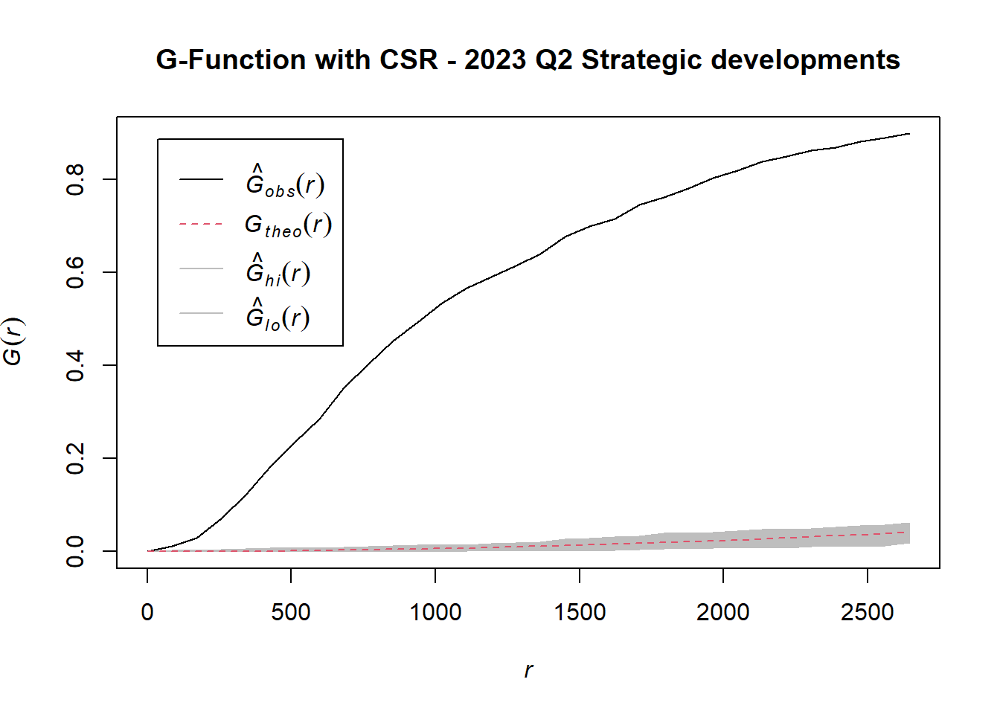
g_func <- Gest(my_2023_Q2_B_quarter_data_regions_ppp, correction="border")
plot(g_func, main="G-Function - 2023 Q2 Battles ")
G_CK.csr <- envelope(my_2023_Q2_B_quarter_data_regions_ppp, Gest, nsim = 99, correction="all", parallel = parallel::detectCores())Generating 99 simulations of CSR ...
1, 2, 3, 4, 5, 6, 7, 8, 9, 10, 11, 12, 13, 14, 15, 16, 17, 18, 19, 20,
21, 22, 23, 24, 25, 26, 27, 28, 29, 30, 31, 32, 33, 34, 35, 36, 37, 38, 39, 40,
41, 42, 43, 44, 45, 46, 47, 48, 49, 50, 51, 52, 53, 54, 55, 56, 57, 58, 59, 60,
61, 62, 63, 64, 65, 66, 67, 68, 69, 70, 71, 72, 73, 74, 75, 76, 77, 78, 79, 80,
81, 82, 83, 84, 85, 86, 87, 88, 89, 90, 91, 92, 93, 94, 95, 96, 97, 98,
99.
Done.plot(G_CK.csr, main = "G-Function with CSR - 2023 Q2 Battles")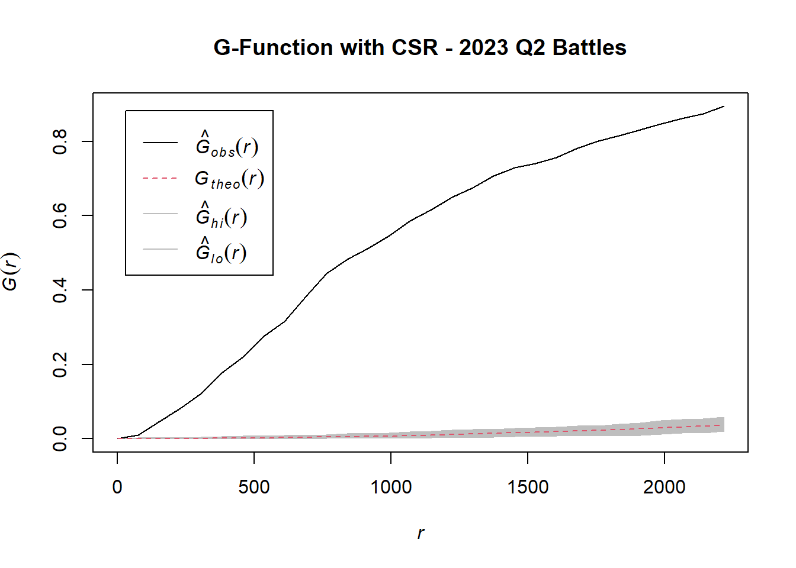
g_func <- Gest(my_2023_Q2_VAC_quarter_data_regions_ppp, correction="border")
plot(g_func, main="G-Function - 2023 Q2 Violence against civilians")
G_CK.csr <- envelope(my_2023_Q2_VAC_quarter_data_regions_ppp, Gest, nsim = 99, correction="all", parallel = parallel::detectCores())Generating 99 simulations of CSR ...
1, 2, 3, 4, 5, 6, 7, 8, 9, 10, 11, 12, 13, 14, 15, 16, 17, 18, 19, 20,
21, 22, 23, 24, 25, 26, 27, 28, 29, 30, 31, 32, 33, 34, 35, 36, 37, 38, 39, 40,
41, 42, 43, 44, 45, 46, 47, 48, 49, 50, 51, 52, 53, 54, 55, 56, 57, 58, 59, 60,
61, 62, 63, 64, 65, 66, 67, 68, 69, 70, 71, 72, 73, 74, 75, 76, 77, 78, 79, 80,
81, 82, 83, 84, 85, 86, 87, 88, 89, 90, 91, 92, 93, 94, 95, 96, 97, 98,
99.
Done.plot(G_CK.csr, main = "G-Function with CSR - 2023 Q2 Violence Against Civilians")
Quarter 3
g_func <- Gest(my_2023_Q3_ER_quarter_data_regions_ppp, correction="border")
plot(g_func, main="G-Function - 2023 Q3 Explosions/Remote violence")
G_CK.csr <- envelope(my_2023_Q3_ER_quarter_data_regions_ppp, Gest, nsim = 99, correction="all", parallel = parallel::detectCores())Generating 99 simulations of CSR ...
1, 2, 3, 4, 5, 6, 7, 8, 9, 10, 11, 12, 13, 14, 15, 16, 17, 18, 19, 20,
21, 22, 23, 24, 25, 26, 27, 28, 29, 30, 31, 32, 33, 34, 35, 36, 37, 38, 39, 40,
41, 42, 43, 44, 45, 46, 47, 48, 49, 50, 51, 52, 53, 54, 55, 56, 57, 58, 59, 60,
61, 62, 63, 64, 65, 66, 67, 68, 69, 70, 71, 72, 73, 74, 75, 76, 77, 78, 79, 80,
81, 82, 83, 84, 85, 86, 87, 88, 89, 90, 91, 92, 93, 94, 95, 96, 97, 98,
99.
Done.plot(G_CK.csr, main = "G-Function with CSR - 2023 Q3 Explosions/Remote violence")
g_func <- Gest(my_2023_Q3_SD_quarter_data_regions_ppp, correction="border")
plot(g_func, main="G-Function - 2023 Q3 Strategic developments ")
G_CK.csr <- envelope(my_2023_Q3_SD_quarter_data_regions_ppp, Gest, nsim = 99, correction="all", parallel = parallel::detectCores())Generating 99 simulations of CSR ...
1, 2, 3, 4, 5, 6, 7, 8, 9, 10, 11, 12, 13, 14, 15, 16, 17, 18, 19, 20,
21, 22, 23, 24, 25, 26, 27, 28, 29, 30, 31, 32, 33, 34, 35, 36, 37, 38, 39, 40,
41, 42, 43, 44, 45, 46, 47, 48, 49, 50, 51, 52, 53, 54, 55, 56, 57, 58, 59, 60,
61, 62, 63, 64, 65, 66, 67, 68, 69, 70, 71, 72, 73, 74, 75, 76, 77, 78, 79, 80,
81, 82, 83, 84, 85, 86, 87, 88, 89, 90, 91, 92, 93, 94, 95, 96, 97, 98,
99.
Done.plot(G_CK.csr, main = "G-Function with CSR - 2023 Q3 Strategic developments")
g_func <- Gest(my_2023_Q3_B_quarter_data_regions_ppp, correction="border")
plot(g_func, main="G-Function - 2023 Q3 Battles ")
G_CK.csr <- envelope(my_2023_Q3_B_quarter_data_regions_ppp, Gest, nsim = 99, correction="all", parallel = parallel::detectCores())Generating 99 simulations of CSR ...
1, 2, [5:09 remaining] 3,
[4:59 remaining] 4, [5:06 remaining] 5, [5:00 remaining] 6,
[4:59 remaining] 7, [4:49 remaining] 8, [4:41 remaining] 9,
[4:38 remaining] 10, [4:34 remaining] 11, [4:29 remaining] 12,
[4:25 remaining] 13, [4:23 remaining] 14, [4:19 remaining] 15,
[4:16 remaining] 16, [4:13 remaining] 17, [4:09 remaining] 18,
[4:05 remaining] 19, [4:02 remaining] 20, [3:58 remaining] 21,
[3:55 remaining] 22, [3:52 remaining] 23, [3:50 remaining] 24,
[3:45 remaining] 25, [3:42 remaining] 26, [3:40 remaining] 27,
[3:37 remaining] 28, [3:33 remaining] 29, [3:30 remaining] 30,
[3:27 remaining] 31, [3:23 remaining] 32, [3:20 remaining] 33,
[3:17 remaining] 34, [3:14 remaining] 35, [3:12 remaining] 36,
[3:10 remaining] 37, [3:07 remaining] 38, [3:04 remaining] 39,
[3:01 remaining] 40, [2:57 remaining] 41, [2:54 remaining] 42,
[2:52 remaining] 43, [2:50 remaining] 44, [2:47 remaining] 45,
[2:44 remaining] 46, [2:41 remaining] 47, [2:38 remaining] 48,
[2:35 remaining] 49, [2:33 remaining] 50, [2:30 remaining] 51,
[2:27 remaining] 52, [2:24 remaining] 53, [2:21 remaining] 54,
[2:18 remaining] 55, [2:15 remaining] 56, [2:12 remaining] 57,
[2:09 remaining] 58, [2:05 remaining] 59, [2:02 remaining] 60,
[1:59 remaining] 61, [1:56 remaining] 62, [1:53 remaining] 63,
[1:50 remaining] 64, [1:47 remaining] 65, [1:44 remaining] 66,
[1:41 remaining] 67, [1:38 remaining] 68, [1:35 remaining] 69,
[1:32 remaining] 70, [1:28 remaining] 71, [1:25 remaining] 72,
[1:22 remaining] 73, [1:19 remaining] 74, [1:16 remaining] 75,
[1:13 remaining] 76, [1:10 remaining] 77, [1:07 remaining] 78,
[1:04 remaining] 79, [1:01 remaining] 80, [58 sec remaining] 81,
[55 sec remaining] 82, [52 sec remaining] 83, [49 sec remaining] 84,
[46 sec remaining] 85, [43 sec remaining] 86, [39 sec remaining] 87,
[36 sec remaining] 88, [33 sec remaining] 89, [30 sec remaining] 90,
[27 sec remaining] 91, [24 sec remaining] 92, [21 sec remaining] 93,
[18 sec remaining] 94, [15 sec remaining] 95, [12 sec remaining] 96,
[9 sec remaining] 97, [6 sec remaining] 98, [3 sec remaining]
99.
Done.plot(G_CK.csr, main = "G-Function with CSR - 2023 Q3 Battles")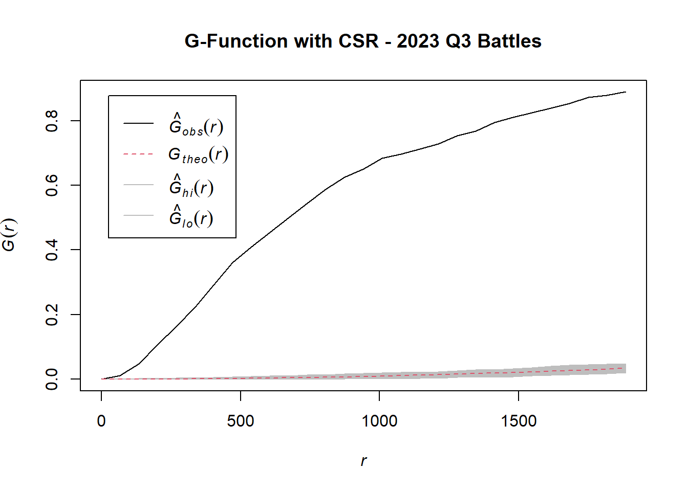
g_func <- Gest(my_2023_Q3_VAC_quarter_data_regions_ppp, correction="border")
plot(g_func, main="G-Function - 2023 Q3 Violence against civilians")
G_CK.csr <- envelope(my_2023_Q3_VAC_quarter_data_regions_ppp, Gest, nsim = 99, correction="all", parallel = parallel::detectCores())Generating 99 simulations of CSR ...
1, 2, 3, 4, 5, 6, 7, 8, 9, 10, 11, 12, 13, 14, 15, 16, 17, 18, 19, 20,
21, 22, 23, 24, 25, 26, 27, 28, 29, 30, 31, 32, 33, 34, 35, 36, 37, 38, 39, 40,
41, 42, 43, 44, 45, 46, 47, 48, 49, 50, 51, 52, 53, 54, 55, 56, 57, 58, 59, 60,
61, 62, 63, 64, 65, 66, 67, 68, 69, 70, 71, 72, 73, 74, 75, 76, 77, 78, 79, 80,
81, 82, 83, 84, 85, 86, 87, 88, 89, 90, 91, 92, 93, 94, 95, 96, 97, 98,
99.
Done.plot(G_CK.csr, main = "G-Function with CSR - 2023 Q3 Violence Against Civilians")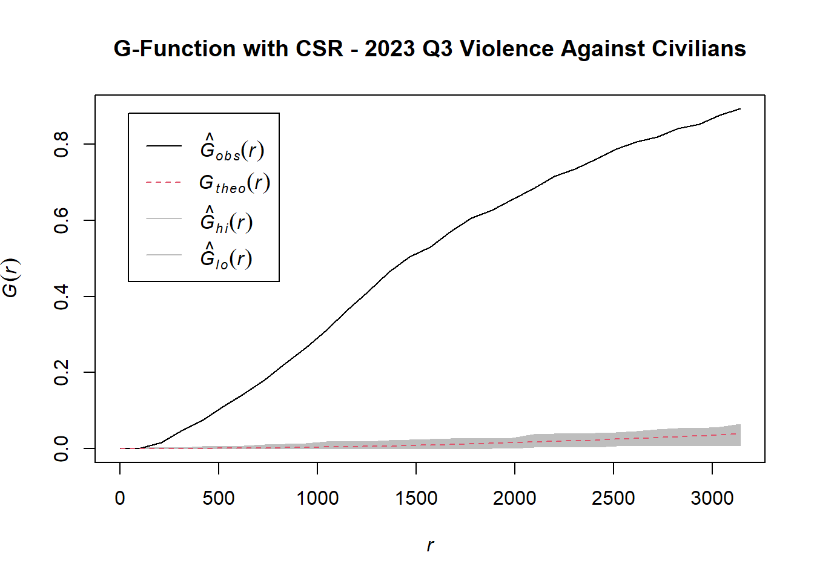
Quarter 4
g_func <- Gest(my_2023_Q4_ER_quarter_data_regions_ppp, correction="border")
plot(g_func, main="G-Function - 2023 Q4 Explosions/Remote violence")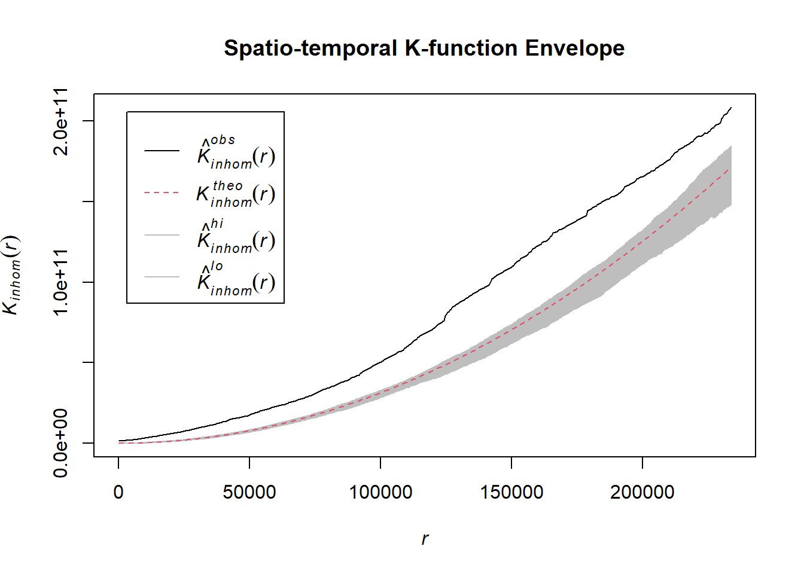
G_CK.csr <- envelope(my_2023_Q4_ER_quarter_data_regions_ppp, Gest, nsim = 99, correction="all", parallel = parallel::detectCores())Generating 99 simulations of CSR ...
1, 2, [4:22 remaining] 3,
[4:11 remaining] 4, [4:08 remaining] 5, [4:05 remaining] 6,
[4:05 remaining] 7, [4:05 remaining] 8, [4:01 remaining] 9,
[3:59 remaining] 10, [4:00 remaining] 11, [3:56 remaining] 12,
[3:52 remaining] 13, [3:49 remaining] 14, [3:50 remaining] 15,
[3:47 remaining] 16, [3:43 remaining] 17, [3:41 remaining] 18,
[3:38 remaining] 19, [3:36 remaining] 20, [3:32 remaining] 21,
[3:30 remaining] 22, [3:28 remaining] 23, [3:26 remaining] 24,
[3:23 remaining] 25, [3:20 remaining] 26, [3:18 remaining] 27,
[3:16 remaining] 28, [3:14 remaining] 29, [3:12 remaining] 30,
[3:09 remaining] 31, [3:06 remaining] 32, [3:03 remaining] 33,
[3:00 remaining] 34, [2:58 remaining] 35, [2:55 remaining] 36,
[2:53 remaining] 37, [2:50 remaining] 38, [2:47 remaining] 39,
[2:45 remaining] 40, [2:43 remaining] 41, [2:40 remaining] 42,
[2:37 remaining] 43, [2:35 remaining] 44, [2:32 remaining] 45,
[2:29 remaining] 46, [2:27 remaining] 47, [2:24 remaining] 48,
[2:21 remaining] 49, [2:18 remaining] 50, [2:16 remaining] 51,
[2:13 remaining] 52, [2:10 remaining] 53, [2:07 remaining] 54,
[2:04 remaining] 55, [2:02 remaining] 56, [1:59 remaining] 57,
[1:56 remaining] 58, [1:53 remaining] 59, [1:50 remaining] 60,
[1:48 remaining] 61, [1:45 remaining] 62, [1:42 remaining] 63,
[1:39 remaining] 64, [1:37 remaining] 65, [1:34 remaining] 66,
[1:31 remaining] 67, [1:29 remaining] 68, [1:26 remaining] 69,
[1:23 remaining] 70, [1:20 remaining] 71, [1:18 remaining] 72,
[1:15 remaining] 73, [1:12 remaining] 74, [1:09 remaining] 75,
[1:07 remaining] 76, [1:04 remaining] 77, [1:01 remaining] 78,
[58 sec remaining] 79, [55 sec remaining] 80, [53 sec remaining] 81,
[50 sec remaining] 82, [47 sec remaining] 83, [44 sec remaining] 84,
[42 sec remaining] 85, [39 sec remaining] 86, [36 sec remaining] 87,
[33 sec remaining] 88, [30 sec remaining] 89, [28 sec remaining] 90,
[25 sec remaining] 91, [22 sec remaining] 92, [19 sec remaining] 93,
[17 sec remaining] 94, [14 sec remaining] 95, [11 sec remaining] 96,
[8 sec remaining] 97, [6 sec remaining] 98, [3 sec remaining]
99.
Done.plot(G_CK.csr, main = "G-Function with CSR - 2023 Q4 Explosions/Remote violence")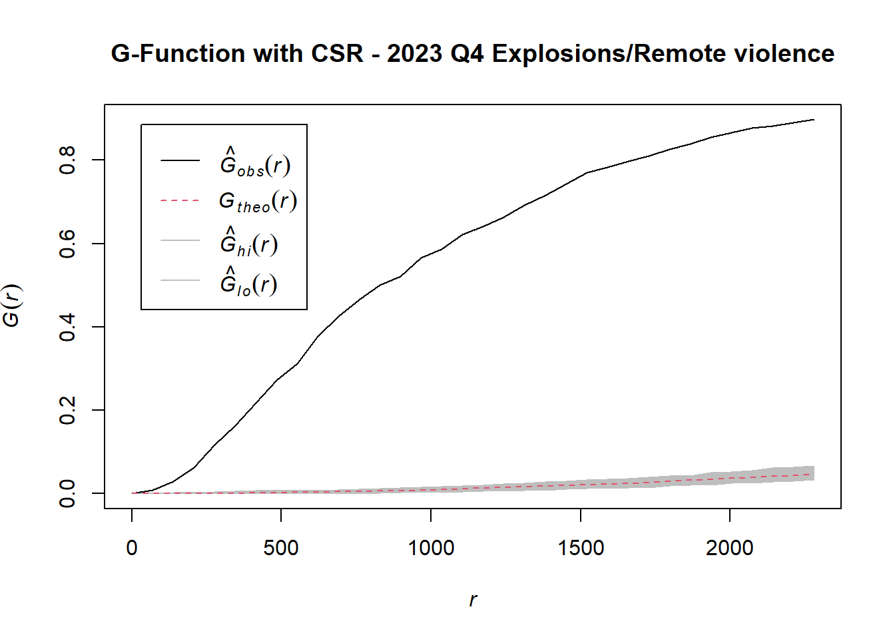
g_func <- Gest(my_2023_Q4_SD_quarter_data_regions_ppp, correction="border")
plot(g_func, main="G-Function - 2023 Q4 Strategic developments ")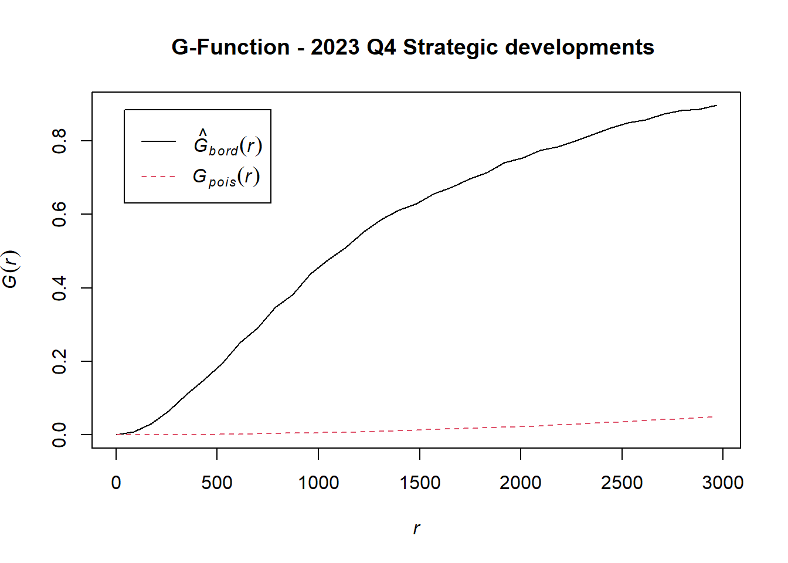
G_CK.csr <- envelope(my_2023_Q4_SD_quarter_data_regions_ppp, Gest, nsim = 99, correction="all", parallel = parallel::detectCores())Generating 99 simulations of CSR ...
1, 2, 3, 4, 5, 6, 7, 8, 9, 10, 11, 12, 13, 14, 15, 16, 17, 18, 19, 20,
21, 22, 23, 24, 25, 26, 27, 28, 29, 30, 31, 32, 33, 34, 35, 36, 37, 38, 39, 40,
41, 42, 43, 44, 45, 46, 47, 48, 49, 50, 51, 52, 53, 54, 55, 56, 57, 58, 59, 60,
61, 62, 63, 64, 65, 66, 67, 68, 69, 70, 71, 72, 73, 74, 75, 76, 77, 78, 79, 80,
81, 82, 83, 84, 85, 86, 87, 88, 89, 90, 91, 92, 93, 94, 95, 96, 97, 98,
99.
Done.plot(G_CK.csr, main = "G-Function with CSR - 2023 Q4 Strategic developments")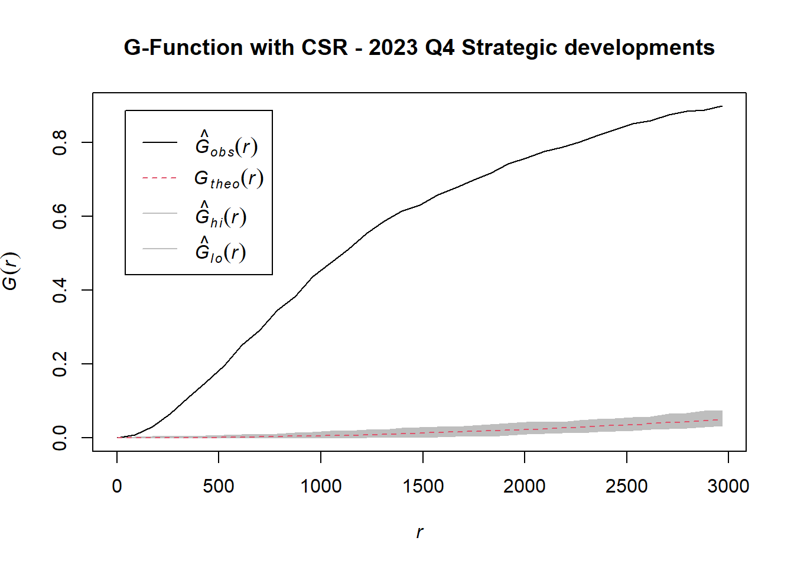
g_func <- Gest(my_2023_Q4_B_quarter_data_regions_ppp, correction="border")
plot(g_func, main="G-Function - 2023 Q4 Battles ")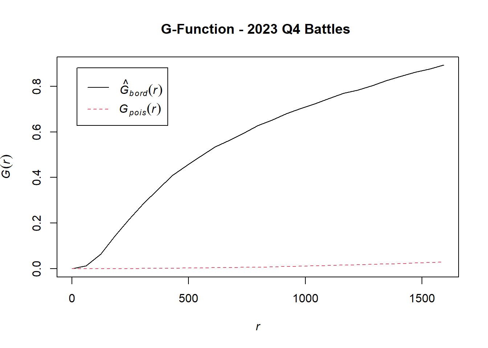
G_CK.csr <- envelope(my_2023_Q4_B_quarter_data_regions_ppp, Gest, nsim = 99, correction="all", parallel = parallel::detectCores())Generating 99 simulations of CSR ...
1, 2, [3:30 remaining] 3,
[3:26 remaining] 4, [3:31 remaining] 5, [3:28 remaining] 6,
[3:27 remaining] 7, [3:26 remaining] 8, [3:24 remaining] 9,
[3:21 remaining] 10, [3:18 remaining] 11, [3:17 remaining] 12,
[3:15 remaining] 13, [3:12 remaining] 14, [3:09 remaining] 15,
[3:07 remaining] 16, [3:04 remaining] 17, [3:02 remaining] 18,
[2:59 remaining] 19, [2:58 remaining] 20, [2:55 remaining] 21,
[2:52 remaining] 22, [2:50 remaining] 23, [2:47 remaining] 24,
[2:44 remaining] 25, [2:41 remaining] 26, [2:40 remaining] 27,
[2:37 remaining] 28, [2:35 remaining] 29, [2:33 remaining] 30,
[2:31 remaining] 31, [2:29 remaining] 32, [2:27 remaining] 33,
[2:25 remaining] 34, [2:22 remaining] 35, [2:20 remaining] 36,
[2:18 remaining] 37, [2:15 remaining] 38, [2:13 remaining] 39,
[2:11 remaining] 40, [2:09 remaining] 41, [2:07 remaining] 42,
[2:04 remaining] 43, [2:02 remaining] 44, [2:00 remaining] 45,
[1:58 remaining] 46, [1:56 remaining] 47, [1:54 remaining] 48,
[1:52 remaining] 49, [1:49 remaining] 50, [1:47 remaining] 51,
[1:45 remaining] 52, [1:43 remaining] 53, [1:41 remaining] 54,
[1:39 remaining] 55, [1:36 remaining] 56, [1:34 remaining] 57,
[1:32 remaining] 58, [1:29 remaining] 59, [1:27 remaining] 60,
[1:25 remaining] 61, [1:23 remaining] 62, [1:21 remaining] 63,
[1:18 remaining] 64, [1:16 remaining] 65, [1:14 remaining] 66,
[1:12 remaining] 67, [1:10 remaining] 68, [1:08 remaining] 69,
[1:05 remaining] 70, [1:03 remaining] 71, [1:01 remaining] 72,
[59 sec remaining] 73, [57 sec remaining] 74, [54 sec remaining] 75,
[52 sec remaining] 76, [50 sec remaining] 77, [48 sec remaining] 78,
[46 sec remaining] 79, [44 sec remaining] 80, [41 sec remaining] 81,
[39 sec remaining] 82, [37 sec remaining] 83, [35 sec remaining] 84,
[33 sec remaining] 85, [30 sec remaining] 86, [28 sec remaining] 87,
[26 sec remaining] 88, [24 sec remaining] 89, [22 sec remaining] 90,
[20 sec remaining] 91, [17 sec remaining] 92, [15 sec remaining] 93,
[13 sec remaining] 94, [11 sec remaining] 95, [9 sec remaining] 96,
[6 sec remaining] 97, [4 sec remaining] 98, [2 sec remaining]
99.
Done.plot(G_CK.csr, main = "G-Function with CSR - 2023 Q4 Battles")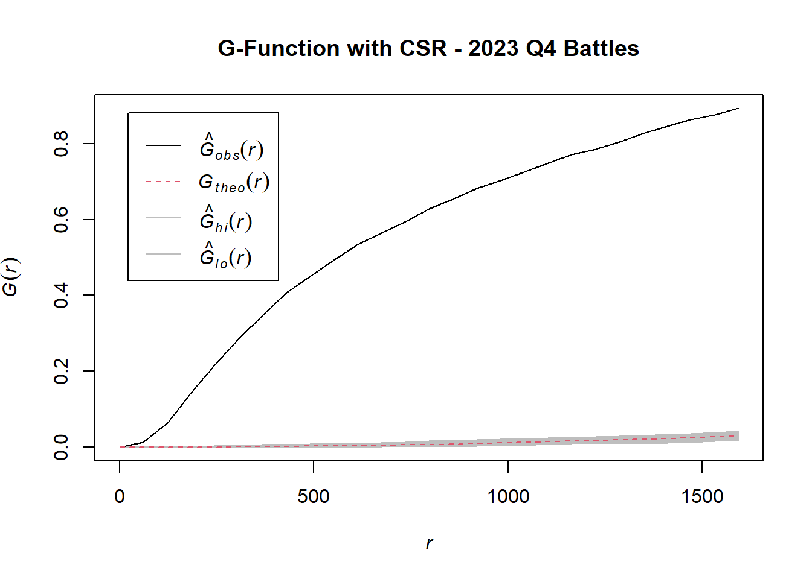
g_func <- Gest(my_2023_Q4_VAC_quarter_data_regions_ppp, correction="border")
plot(g_func, main="G-Function - 2023 Q4 Violence against civilians")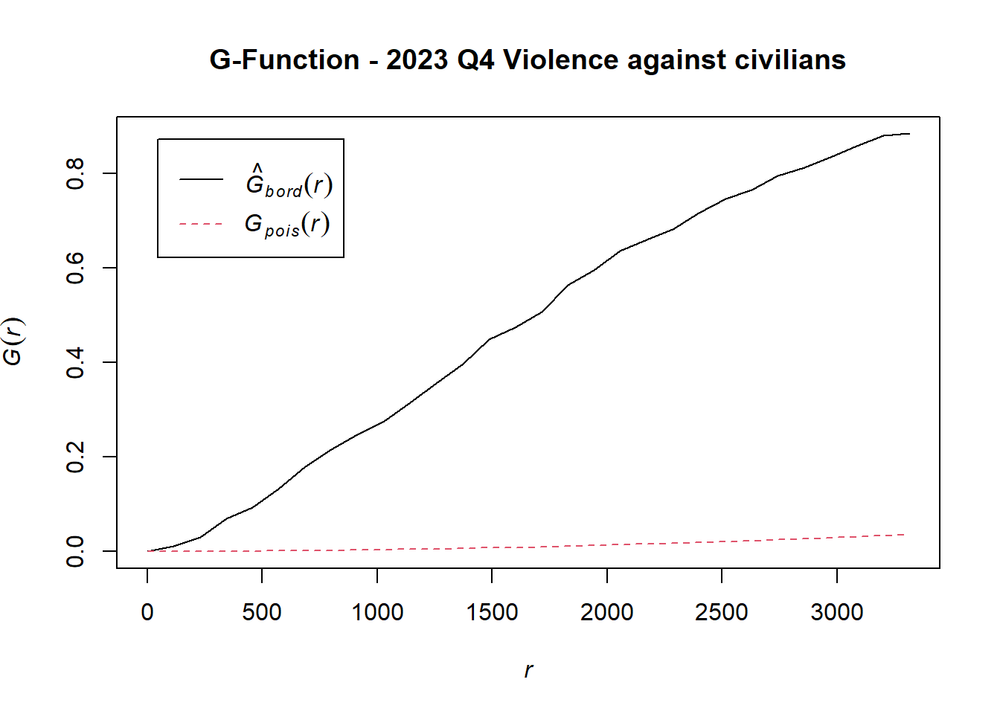
G_CK.csr <- envelope(my_2023_Q4_VAC_quarter_data_regions_ppp, Gest, nsim = 99, correction="all", parallel = parallel::detectCores())Generating 99 simulations of CSR ...
1, 2, 3, 4, 5, 6, 7, 8, 9, 10, 11, 12, 13, 14, 15, 16, 17, 18, 19, 20,
21, 22, 23, 24, 25, 26, 27, 28, 29, 30, 31, 32, 33, 34, 35, 36, 37, 38, 39, 40,
41, 42, 43, 44, 45, 46, 47, 48, 49, 50, 51, 52, 53, 54, 55, 56, 57, 58, 59, 60,
61, 62, 63, 64, 65, 66, 67, 68, 69, 70, 71, 72, 73, 74, 75, 76, 77, 78, 79, 80,
81, 82, 83, 84, 85, 86, 87, 88, 89, 90, 91, 92, 93, 94, 95, 96, 97, 98,
99.
Done.plot(G_CK.csr, main = "G-Function with CSR - 2023 Q4 Violence Against Civilians")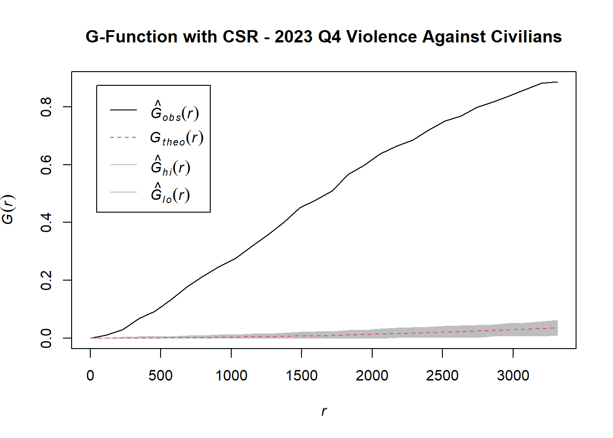
Year 2024
Quarter 1
g_func <- Gest(my_2024_Q1_ER_quarter_data_regions_ppp, correction="border")
plot(g_func, main="G-Function - 2024 Q1 Explosions/Remote violence")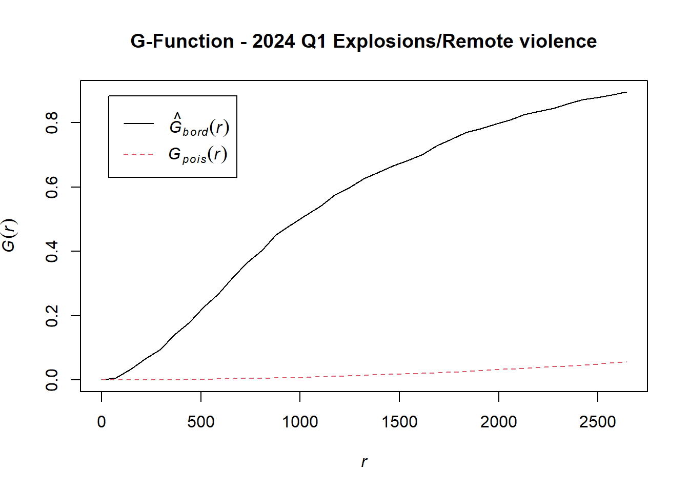
G_CK.csr <- envelope(my_2024_Q1_ER_quarter_data_regions_ppp, Gest, nsim = 99, correction="all", parallel = parallel::detectCores())Generating 99 simulations of CSR ...
1, 2, 3, 4, 5, 6, 7, 8, 9, 10, 11, 12, 13, 14, 15, 16, 17, 18, 19, 20,
21, 22, 23, 24, 25, 26, 27, 28, 29, 30, 31, 32, 33, 34, 35, 36, 37, 38, 39, 40,
41, 42, 43, 44, 45, 46, 47, 48, 49, 50, 51, 52, 53, 54, 55, 56, 57, 58, 59, 60,
61, 62, 63, 64, 65, 66, 67, 68, 69, 70, 71, 72, 73, 74, 75, 76, 77, 78, 79, 80,
81, 82, 83, 84, 85, 86, 87, 88, 89, 90, 91, 92, 93, 94, 95, 96, 97, 98,
99.
Done.plot(G_CK.csr, main = "G-Function with CSR - 2024 Q1 Explosions/Remote violence")g_func <- Gest(my_2024_Q1_SD_quarter_data_regions_ppp, correction="border")
plot(g_func, main="G-Function - 2024 Q1 Strategic developments ")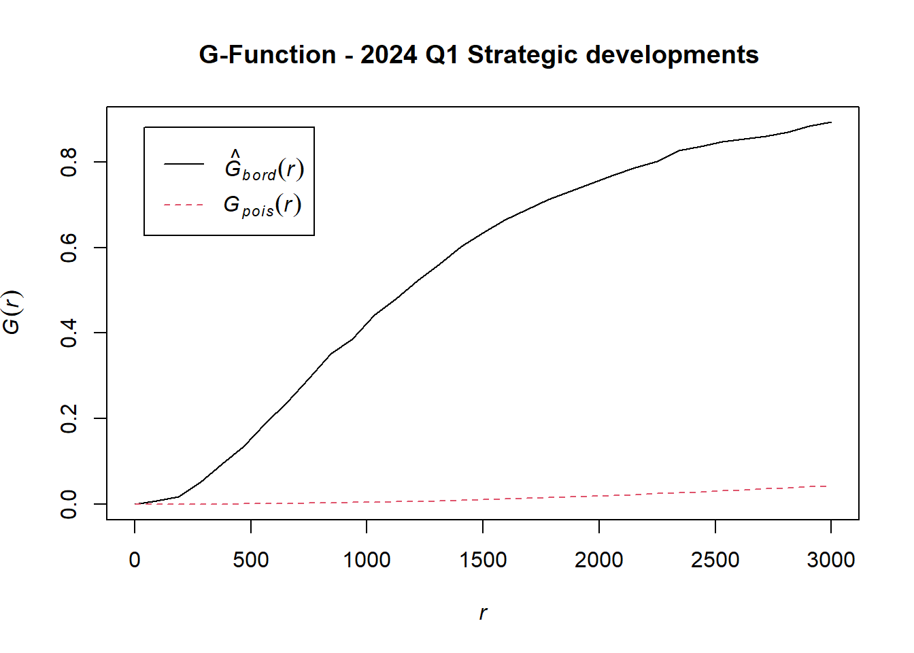
G_CK.csr <- envelope(my_2024_Q1_SD_quarter_data_regions_ppp, Gest, nsim = 99, correction="all", parallel = parallel::detectCores())Generating 99 simulations of CSR ...
1, 2, [3:27 remaining] 3,
[3:20 remaining] 4, [3:18 remaining] 5, [3:12 remaining] 6,
[3:06 remaining] 7, [3:10 remaining] 8, [3:09 remaining] 9,
[3:10 remaining] 10, [3:07 remaining] 11, [3:07 remaining] 12,
[3:07 remaining] 13, [3:04 remaining] 14, [3:01 remaining] 15,
[2:57 remaining] 16, [2:54 remaining] 17, [2:51 remaining] 18,
[2:49 remaining] 19, [2:46 remaining] 20, [2:43 remaining] 21,
[2:41 remaining] 22, [2:38 remaining] 23, [2:35 remaining] 24,
[2:33 remaining] 25, [2:31 remaining] 26, [2:30 remaining] 27,
[2:28 remaining] 28, [2:26 remaining] 29, [2:24 remaining] 30,
[2:21 remaining] 31, [2:18 remaining] 32, [2:16 remaining] 33,
[2:13 remaining] 34, [2:11 remaining] 35, [2:09 remaining] 36,
[2:07 remaining] 37, [2:05 remaining] 38, [2:03 remaining] 39,
[2:01 remaining] 40, [1:59 remaining] 41, [1:57 remaining] 42,
[1:55 remaining] 43, [1:53 remaining] 44, [1:51 remaining] 45,
[1:48 remaining] 46, [1:46 remaining] 47, [1:44 remaining] 48,
[1:42 remaining] 49, [1:40 remaining] 50, [1:38 remaining] 51,
[1:35 remaining] 52, [1:33 remaining] 53, [1:31 remaining] 54,
[1:29 remaining] 55, [1:27 remaining] 56, [1:25 remaining] 57,
[1:23 remaining] 58, [1:21 remaining] 59, [1:19 remaining] 60,
[1:17 remaining] 61, [1:15 remaining] 62, [1:13 remaining] 63,
[1:11 remaining] 64, [1:09 remaining] 65, [1:07 remaining] 66,
[1:05 remaining] 67, [1:03 remaining] 68, [1:01 remaining] 69,
[59 sec remaining] 70, [57 sec remaining] 71, [55 sec remaining] 72,
[53 sec remaining] 73, [51 sec remaining] 74, [49 sec remaining] 75,
[47 sec remaining] 76, [45 sec remaining] 77, [43 sec remaining] 78,
[41 sec remaining] 79, [39 sec remaining] 80, [37 sec remaining] 81,
[35 sec remaining] 82, [33 sec remaining] 83, [31 sec remaining] 84,
[29 sec remaining] 85, [27 sec remaining] 86, [25 sec remaining] 87,
[23 sec remaining] 88, [21 sec remaining] 89, [19 sec remaining] 90,
[18 sec remaining] 91, [16 sec remaining] 92, [14 sec remaining] 93,
[12 sec remaining] 94, [10 sec remaining] 95, [8 sec remaining] 96,
[6 sec remaining] 97, [4 sec remaining] 98, [2 sec remaining]
99.
Done.plot(G_CK.csr, main = "G-Function with CSR - 2024 Q1 Strategic developments")g_func <- Gest(my_2024_Q1_B_quarter_data_regions_ppp, correction="border")
plot(g_func, main="G-Function - 2024 Q1 Battles ")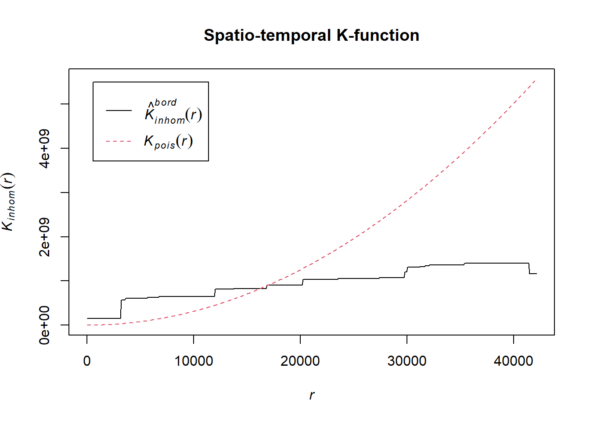
G_CK.csr <- envelope(my_2024_Q1_B_quarter_data_regions_ppp, Gest, nsim = 99, correction="all", parallel = parallel::detectCores())Generating 99 simulations of CSR ...
1, 2, [5:20 remaining] 3,
[5:07 remaining] 4, [4:50 remaining] 5, [4:48 remaining] 6,
[4:34 remaining] 7, [4:27 remaining] 8, [4:21 remaining] 9,
[4:23 remaining] 10, [4:19 remaining] 11, [4:14 remaining] 12,
[4:10 remaining] 13, [4:08 remaining] 14, [4:06 remaining] 15,
[4:04 remaining] 16, [4:01 remaining] 17, [3:57 remaining] 18,
[3:53 remaining] 19, [3:51 remaining] 20, [3:50 remaining] 21,
[3:48 remaining] 22, [3:44 remaining] 23, [3:41 remaining] 24,
[3:37 remaining] 25, [3:34 remaining] 26, [3:31 remaining] 27,
[3:30 remaining] 28, [3:27 remaining] 29, [3:23 remaining] 30,
[3:19 remaining] 31, [3:16 remaining] 32, [3:13 remaining] 33,
[3:10 remaining] 34, [3:07 remaining] 35, [3:04 remaining] 36,
[3:01 remaining] 37, [2:58 remaining] 38, [2:55 remaining] 39,
[2:53 remaining] 40, [2:50 remaining] 41, [2:48 remaining] 42,
[2:46 remaining] 43, [2:44 remaining] 44, [2:41 remaining] 45,
[2:38 remaining] 46, [2:35 remaining] 47, [2:32 remaining] 48,
[2:30 remaining] 49, [2:27 remaining] 50, [2:24 remaining] 51,
[2:21 remaining] 52, [2:18 remaining] 53, [2:15 remaining] 54,
[2:12 remaining] 55, [2:09 remaining] 56, [2:07 remaining] 57,
[2:04 remaining] 58, [2:01 remaining] 59, [1:58 remaining] 60,
[1:55 remaining] 61, [1:52 remaining] 62, [1:49 remaining] 63,
[1:46 remaining] 64, [1:43 remaining] 65, [1:40 remaining] 66,
[1:37 remaining] 67, [1:35 remaining] 68, [1:32 remaining] 69,
[1:29 remaining] 70, [1:26 remaining] 71, [1:23 remaining] 72,
[1:20 remaining] 73, [1:17 remaining] 74, [1:14 remaining] 75,
[1:11 remaining] 76, [1:08 remaining] 77, [1:05 remaining] 78,
[1:02 remaining] 79, [59 sec remaining] 80, [56 sec remaining] 81,
[53 sec remaining] 82, [50 sec remaining] 83, [47 sec remaining] 84,
[44 sec remaining] 85, [41 sec remaining] 86, [38 sec remaining] 87,
[35 sec remaining] 88, [32 sec remaining] 89, [29 sec remaining] 90,
[27 sec remaining] 91, [24 sec remaining] 92, [21 sec remaining] 93,
[18 sec remaining] 94, [15 sec remaining] 95, [12 sec remaining] 96,
[9 sec remaining] 97, [6 sec remaining] 98, [3 sec remaining]
99.
Done.plot(G_CK.csr, main = "G-Function with CSR - 2024 Q1 Battles")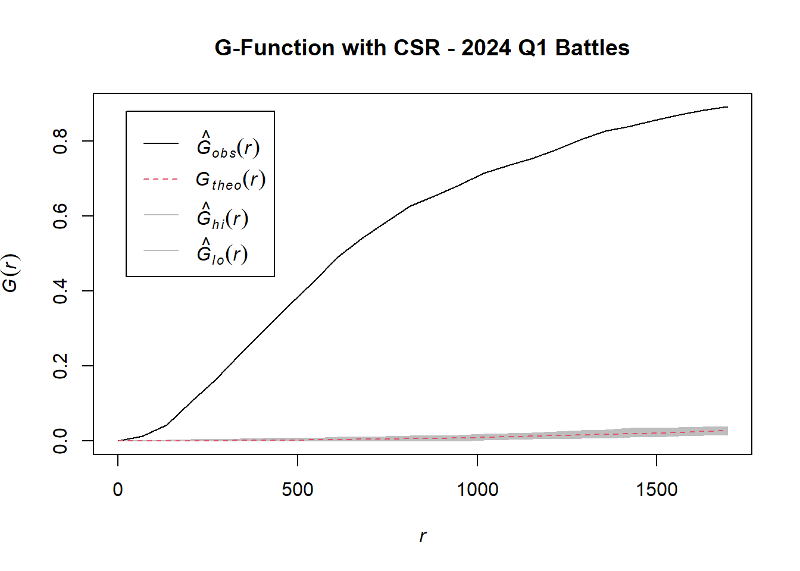
g_func <- Gest(my_2024_Q1_VAC_quarter_data_regions_ppp, correction="border")
plot(g_func, main="G-Function - 2024 Q1 Violence against civilians")G_CK.csr <- envelope(my_2024_Q1_VAC_quarter_data_regions_ppp, Gest, nsim = 99, correction="all", parallel = parallel::detectCores())Generating 99 simulations of CSR ...
1, 2, 3, 4, 5, 6, 7, 8, 9, 10, 11, 12, 13, 14, 15, 16, 17, 18, 19, 20,
21, 22, 23, 24, 25, 26, 27, 28, 29, 30, 31, 32, 33, 34, 35, 36, 37, 38, 39, 40,
41, 42, 43, 44, 45, 46, 47, 48, 49, 50, 51, 52, 53, 54, 55, 56, 57, 58, 59, 60,
61, 62, 63, 64, 65, 66, 67, 68, 69, 70, 71, 72, 73, 74, 75, 76, 77, 78, 79, 80,
81, 82, 83, 84, 85, 86, 87, 88, 89, 90, 91, 92, 93, 94, 95, 96, 97, 98,
99.
Done.plot(G_CK.csr, main = "G-Function with CSR - 2024 Q1 Violence Against Civilians")Quarter 2
g_func <- Gest(my_2024_Q2_ER_quarter_data_regions_ppp, correction="border")
plot(g_func, main="G-Function - 2024 Q2 Explosions/Remote violence")G_CK.csr <- envelope(my_2024_Q2_ER_quarter_data_regions_ppp, Gest, nsim = 99, correction="all", parallel = parallel::detectCores())Generating 99 simulations of CSR ...
1, 2, 3, 4, 5, 6, 7, 8, 9, 10, 11, 12, 13, 14, 15, 16, 17, 18, 19, 20,
21, 22, 23, 24, 25, 26, 27, 28, 29, 30, 31, 32, 33, 34, 35, 36, 37, 38, 39, 40,
41, 42, 43, 44, 45, 46, 47, 48, 49, 50, 51, 52, 53, 54, 55, 56, 57, 58, 59, 60,
61, 62, 63, 64, 65, 66, 67, 68, 69, 70, 71, 72, 73, 74, 75, 76, 77, 78, 79, 80,
81, 82, 83, 84, 85, 86, 87, 88, 89, 90, 91, 92, 93, 94, 95, 96, 97, 98,
99.
Done.plot(G_CK.csr, main = "G-Function with CSR - 2024 Q2 Explosions/Remote violence")g_func <- Gest(my_2024_Q2_SD_quarter_data_regions_ppp, correction="border")
plot(g_func, main="G-Function - 2024 Q2 Strategic developments ")G_CK.csr <- envelope(my_2024_Q2_SD_quarter_data_regions_ppp, Gest, nsim = 99, correction="all", parallel = parallel::detectCores())Generating 99 simulations of CSR ...
1, 2, 3, 4, 5, 6, 7, 8, 9, 10, 11, 12, 13, 14, 15, 16, 17, 18, 19, 20,
21, 22, 23, 24, 25, 26, 27, 28, 29, 30, 31, 32, 33, 34, 35, 36, 37, 38, 39, 40,
41, 42, 43, 44, 45, 46, 47, 48, 49, 50, 51, 52, 53, 54, 55, 56, 57, 58, 59, 60,
61, 62, 63, 64, 65, 66, 67, 68, 69, 70, 71, 72, 73, 74, 75, 76, 77, 78, 79, 80,
81, 82, 83, 84, 85, 86, 87, 88, 89, 90, 91, 92, 93, 94, 95, 96, 97, 98,
99.
Done.plot(G_CK.csr, main = "G-Function with CSR - 2024 Q2 Strategic developments")g_func <- Gest(my_2024_Q2_B_quarter_data_regions_ppp, correction="border")
plot(g_func, main="G-Function - 2024 Q2 Battles ")G_CK.csr <- envelope(my_2024_Q2_B_quarter_data_regions_ppp, Gest, nsim = 99, correction="all", parallel = parallel::detectCores())Generating 99 simulations of CSR ...
1, 2, 3, 4, 5, 6, 7, 8, 9, 10, 11, 12, 13, 14, 15, 16, 17, 18, 19, 20,
21, 22, 23, 24, 25, 26, 27, 28, 29, 30, 31, 32, 33, 34, 35, 36, 37, 38, 39, 40,
41, 42, 43, 44, 45, 46, 47, 48, 49, 50, 51, 52, 53, 54, 55, 56, 57, 58, 59, 60,
61, 62, 63, 64, 65, 66, 67, 68, 69, 70, 71, 72, 73, 74, 75, 76, 77, 78, 79, 80,
81, 82, 83, 84, 85, 86, 87, 88, 89, 90, 91, 92, 93, 94, 95, 96, 97, 98,
99.
Done.plot(G_CK.csr, main = "G-Function with CSR - 2024 Q2 Battles")g_func <- Gest(my_2024_Q2_VAC_quarter_data_regions_ppp, correction="border")
plot(g_func, main="G-Function - 2024 Q2 Violence against civilians")G_CK.csr <- envelope(my_2024_Q2_VAC_quarter_data_regions_ppp, Gest, nsim = 99, correction="all", parallel = parallel::detectCores())Generating 99 simulations of CSR ...
1, 2, 3, 4, 5, 6, 7, 8, 9, 10, 11, 12, 13, 14, 15, 16, 17, 18, 19, 20,
21, 22, 23, 24, 25, 26, 27, 28, 29, 30, 31, 32, 33, 34, 35, 36, 37, 38, 39, 40,
41, 42, 43, 44, 45, 46, 47, 48, 49, 50, 51, 52, 53, 54, 55, 56, 57, 58, 59, 60,
61, 62, 63, 64, 65, 66, 67, 68, 69, 70, 71, 72, 73, 74, 75, 76, 77, 78, 79, 80,
81, 82, 83, 84, 85, 86, 87, 88, 89, 90, 91, 92, 93, 94, 95, 96, 97, 98,
99.
Done.plot(G_CK.csr, main = "G-Function with CSR - 2024 Q2 Violence Against Civilians")1.6 Determining Spatio-Temporal KDE Layer
1.6.1 Choosing sample Dataset
temporal_acled_sf <- acled_sf %>%
mutate(event_date = dmy(event_date)) %>%
mutate(quarter = paste0(year, " Q", quarter(event_date))) %>%
mutate(DayofYear = yday(event_date)) %>%
mutate(Month_num = month(event_date)) %>%
mutate(Month_fac = month(event_date,
label = TRUE,
abbr = FALSE))